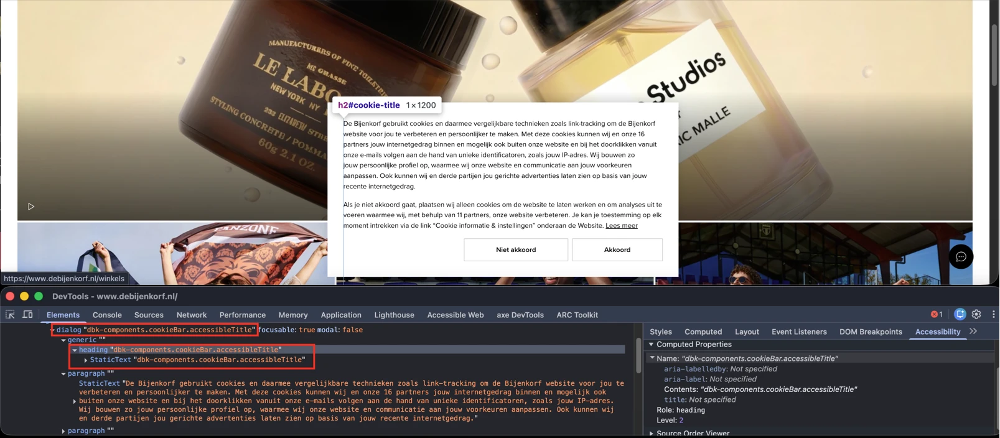
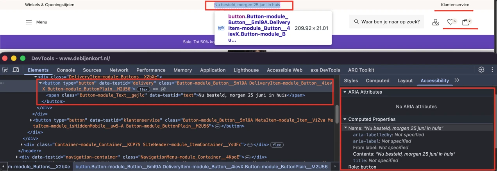
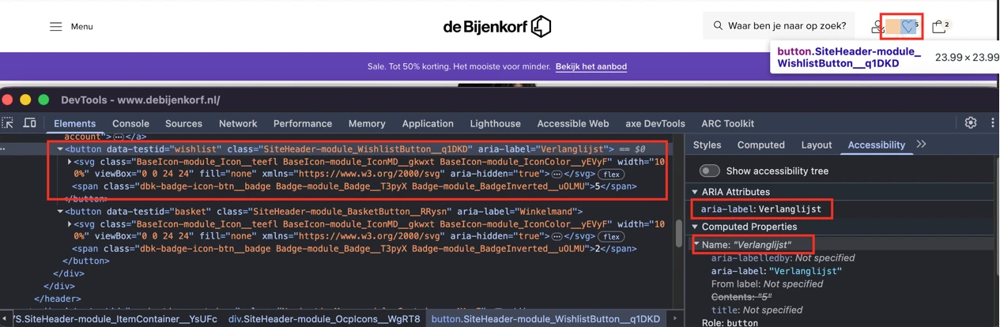
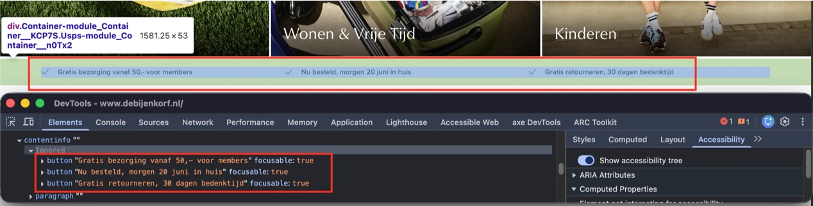
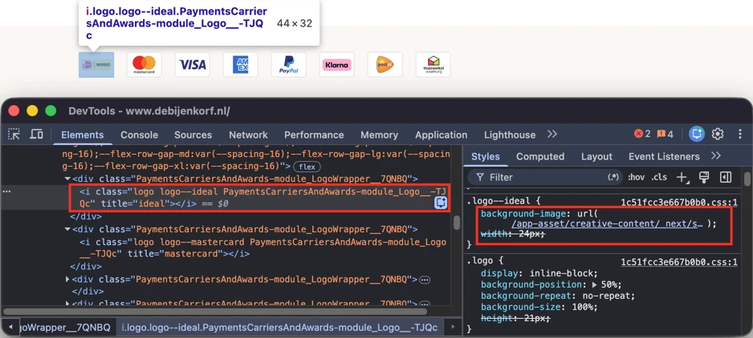
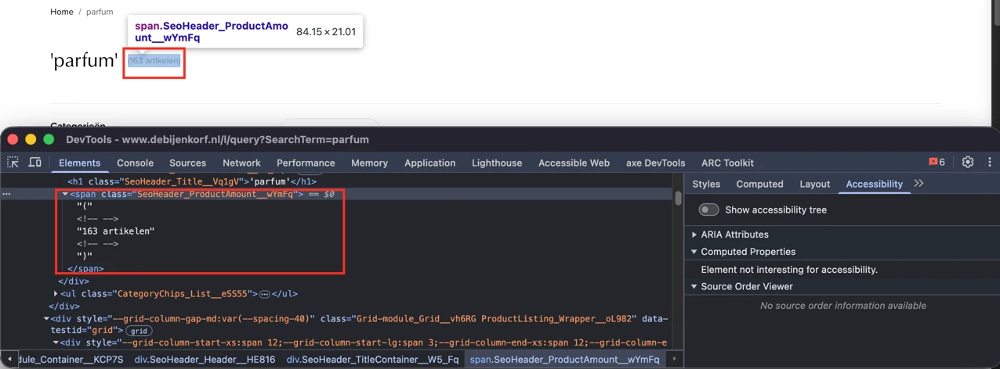
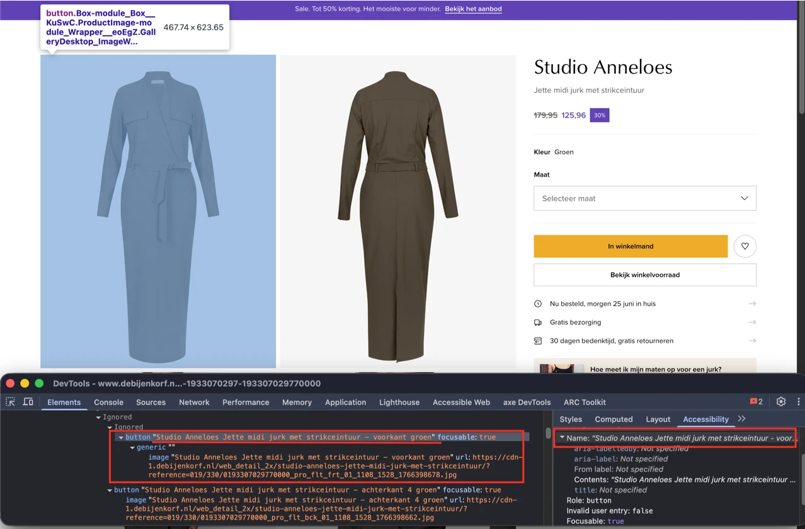
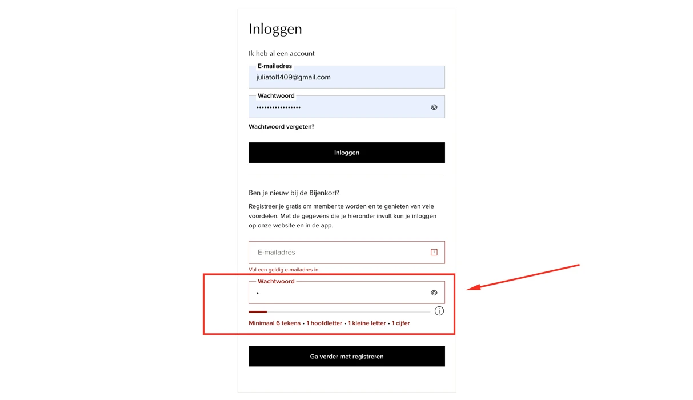
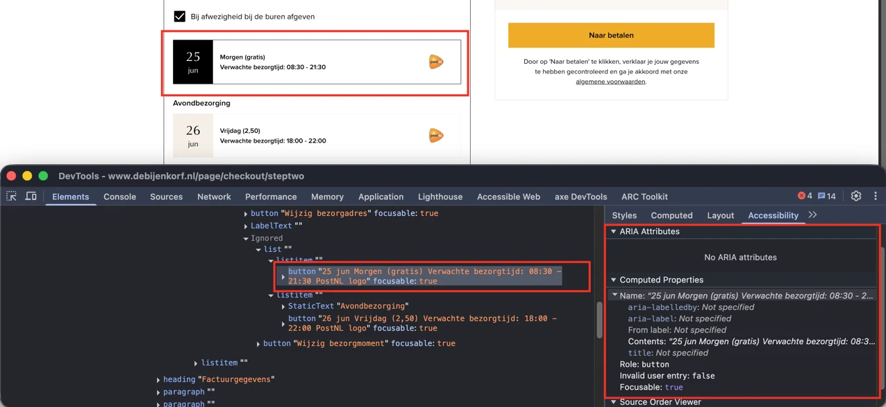
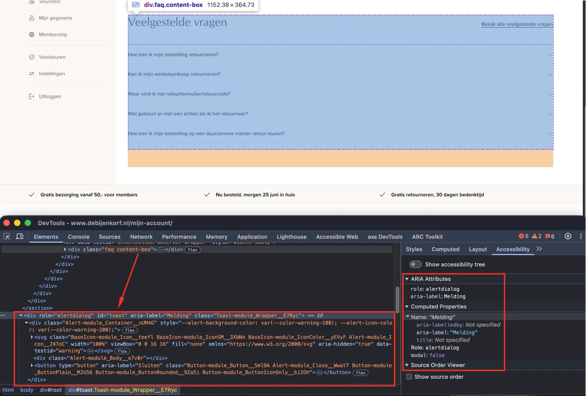

Audit digitale toegankelijkheid van website debijenkorf.nl
Samenvatting
Wij hebben de website debijenkorf.nl onderzocht in juni 2026. Op dit moment voldoet een deel van de succescriteria nog niet. In dit rapport lees je per pagina welke punten verbetering nodig hebben en hoe je deze kunt aanpakken.
#1 - Kop beschrijft de inhoud van het dialoogvenster niet
Impact: MediumType: ContentWCAG: 2.4.6EN: 9.2.4.6

Wanneer een bezoeker de website voor het eerst bezoekt, verschijnt er een dialoogvenster voor cookietoestemming. Dit dialoogvenster bevat een visueel verborgen kop met de tekst "dbk-components.cookieBar.accessibleTitle". Dezelfde tekst wordt ook gebruikt als toegankelijke naam van het dialoogvenster.
Koppen en titels van dialoogvensters moeten het doel en de inhoud van de sectie of het dialoogvenster dat ze aanduiden duidelijk beschrijven. Schermlezergebruikers vertrouwen op koppen en dialoogtitels om te begrijpen waar ze zijn, om efficiënt door de inhoud te navigeren en om het doel van een dialoogvenster te bepalen wanneer het opent.
Daardoor horen schermlezergebruikers mogelijk een onduidelijke of betekenisloze kop en dialoogtitel wanneer het cookietoestemmingsvenster opent, en hebben ze mogelijk moeite om het doel van het dialoogvenster te begrijpen.
User story
Ik gebruik een schermlezer. Wanneer een dialoogvenster opent, verwacht ik dat de titel het doel duidelijk beschrijft. Als de titel technische of betekenisloze tekst bevat, begrijp ik mogelijk niet waar het dialoogvenster over gaat of welke actie van mij wordt verwacht.
Hoe te testen
Navigeer met een schermlezer naar het cookietoestemmingsvenster. Controleer of het dialoogvenster een betekenisvolle titel toont en of eventuele koppen in het dialoogvenster de inhoud die volgt duidelijk beschrijven. Inspecteer de accessibility tree en bevestig dat de dialoogtitel en de kop tekst bevatten die voor bezoekers bedoeld is in plaats van interne identifiers of vertaalsleutels.
Oplossing
Vervang de tekst "dbk-components.cookieBar.accessibleTitle" door een betekenisvolle kop en dialoogtitel die het doel van het dialoogvenster beschrijft.
Zorg dat de kop waarmee het dialoogvenster gelabeld is en de toegankelijke naam van het dialoogvenster duidelijk communiceren dat het dialoogvenster informatie en keuzes bevat over cookies en privacyvoorkeuren. Zo begrijpen gebruikers van hulpsoftware meteen het doel van het dialoogvenster wanneer het wordt aangekondigd.
Wanneer een bezoeker de website voor het eerst bezoekt, verschijnt er een dialoogvenster voor cookietoestemming. Dit dialoogvenster geeft een ongeldige waarde door voor het aria-modal-attribuut: aria-modal="false truefalse". Het aria-modal-attribuut accepteert alleen de waarden "true" of "false". Dit attribuut communiceert of een dialoogvenster modaal is en of van bezoekers verwacht wordt dat ze met het dialoogvenster interacteren voordat ze terugkeren naar de onderliggende pagina-inhoud. Wanneer een ongeldige waarde wordt opgegeven, kan hulpsoftware mogelijk niet bepalen of het dialoogvenster modaal is, met inconsistent of onbetrouwbaar gedrag tot gevolg.
Daardoor krijgen schermlezergebruikers mogelijk onjuiste informatie over het dialoogvenster of ervaren ze inconsistente navigatie bij interactie met de pagina.
User story
Ik gebruik een schermlezer. Wanneer een dialoogvenster opent, vertrouw ik erop dat hulpsoftware mij vertelt of het modaal is en of ik met de rest van de pagina kan interacteren. Als het dialoogvenster ongeldige toegankelijkheidsinformatie doorgeeft, krijg ik mogelijk onjuiste informatie of ervaar ik onverwacht gedrag.
Hoe te testen
Inspecteer het dialoogvenster met DevTools en controleer of alle ARIA-attributen geldige waarden bevatten. Controleer voor aria-modal of de waarde "true" of "false" is. Bekijk de accessibility tree en controleer of hulpsoftware het dialoogvenster en het gedrag ervan correct herkent.
Oplossing
Zorg dat het aria-modal-attribuut een geldige waarde bevat die het gedrag van het dialoogvenster nauwkeurig weergeeft. Als het dialoogvenster bedoeld is als modaal en bezoekers ermee moeten interacteren voordat ze naar de pagina terugkeren, stel dan aria-modal="true" in en houd de toetsenbordfocus binnen het dialoogvenster zolang het open is. Als het dialoogvenster niet modaal is en bezoekers kunnen blijven interacteren met inhoud buiten het dialoogvenster, stel dan aria-modal="false" in.
Verwijder alle ongeldige waarden en zorg dat alle ARIA-attributen voldoen aan de waarden die in de ARIA-specificatie zijn gedefinieerd, zodat hulpsoftware het dialoogvenster betrouwbaar kan interpreteren.
#3 - Focusbare elementen bedekt doordat het cookievenster een deel van de pagina bedekt
Wanneer een bezoeker de website voor het eerst bezoekt, verschijnt er een dialoogvenster voor cookietoestemming. De toetsenbordfocus belandt op elementen die onder dit dialoogvenster verborgen zijn, bijvoorbeeld links in de footer. Elementen die focusbaar zijn mogen nooit volledig door andere content bedekt worden. Er moet altijd een gedeelte zichtbaar zijn, hoe klein ook.
User story
Wanneer ik met Tab door de pagina ga, verdwijnt de focus achter het cookievenster. Ik verwacht altijd de bedieningselementen geheel of gedeeltelijk te zien.
Hoe te testen
Tab door de pagina terwijl sticky headers, footers, cookiebanners en chatwidgets zichtbaar zijn. Bij elke stap moet ten minste een deel van het gefocuste element zichtbaar zijn, nooit volledig verborgen achter andere inhoud.
Oplossing
Zorg dat de cookiebanner consistent met het bedoelde gedrag wordt geïmplementeerd. Als deze bedoeld is om zich als een modaal dialoogvenster te gedragen, moet de toetsenbordfocus naar het dialoogvenster verplaatsen wanneer het verschijnt en daarbinnen blijven totdat de bezoeker accepteert, weigert of het dialoogvenster sluit. In dat geval mag de pagina-inhoud achter het dialoogvenster niet bereikbaar zijn met het toetsenbord zolang het dialoogvenster open is.
Als de cookiebanner niet bedoeld is om zich als een modaal dialoogvenster te gedragen, moet deze zo gepositioneerd en geïmplementeerd worden dat hij geen gefocuste elementen elders op de pagina bedekt. Toetsenbordgebruikers moeten gefocuste bedieningselementen altijd geheel of gedeeltelijk kunnen zien.
Zorg er ook voor dat alle ARIA-attributen die voor het dialoogvenster worden gebruikt, zoals aria-modal, geldige waarden hebben en het gedrag van het dialoogvenster nauwkeurig weergeven.
#4 - Er is geen manier om blokken met herhalende inhoud over te slaan
Impact: GrootType: TechniekWCAG: 2.4.1EN: 9.2.4.1
Deze pagina biedt geen mechanisme om herhaalde inhoud over te slaan, zoals de elementen in de website-header die op meerdere pagina's worden herhaald. Er is geen skiplink waarmee toetsenbordgebruikers direct naar de hoofdinhoud kunnen gaan zonder eerst door de herhaalde header-inhoud te navigeren.
User story
Ik gebruik de website met een toetsenbord en een schermlezer. Wanneer ik een pagina open, moet ik door elk menu en elke banner heen voordat ik de hoofdinhoud bereik. Ik verwacht meteen naar de hoofdinhoud te kunnen springen zonder eerst overal doorheen te hoeven navigeren.
Hoe te testen
Tab eenmaal vanuit de adresbalk naar de pagina. Een skiplink ("Naar de hoofdinhoud") moet het eerste focusbare item zijn, zichtbaar worden bij focus en de focus naar de hoofdinhoud verplaatsen wanneer hij geactiveerd wordt. Een andere techniek is het gebruik van landmarks, zoals "header", "nav", "main" en "footer", maar dit is nog niet volledig 'accessibility supported'.
Oplossing
Bied een mechanisme waarmee bezoekers herhaalde inhoud kunnen overslaan en direct naar de hoofdinhoud van de pagina kunnen gaan.
De voorkeursoplossing is een skiplink die het eerste focusbare element op de pagina is. De skiplink moet zichtbaar worden zodra hij toetsenbordfocus krijgt en de focus direct naar de hoofdinhoud verplaatsen wanneer hij geactiveerd wordt.
#5 - Knoppen hebben geen code die aangeeft dat er een pop-up opent
Impact: GrootType: TechniekWCAG: 4.1.2EN: 9.4.1.2

Op deze pagina opent in de header de knop met het label "Nu besteld, morgen 20 juni in huis" een dialoogvenster, maar deze functionaliteit wordt niet in de code aangegeven.
Hetzelfde probleem doet zich voor bij de knoppen "Klantenservice" en "Menu" en bij de knoppen die worden weergegeven met het profielicoon, het hartje-icoon en het winkeltas-icoon.
Ook in de footer doet hetzelfde probleem zich voor bij de knoppen "Gratis bezorging vanaf 50,- voor members", "Nu besteld, morgen 20 juni in huis", "Gratis retourneren, 30 dagen bedenktijd" en "Cookie informatie & instellingen". De knop die de chatwidget onderaan de pagina's opent heeft hetzelfde probleem.
Zie ook andere knoppen verspreid over de pagina's van de website.
User story
Ik lees de website met een schermlezer. Wanneer ik op een knop druk, hoor ik soms niet dat er een dialoogvenster zal openen, dus weet ik niet wat ik kan verwachten. Ik verwacht dat mijn schermlezer aankondigt dat de knop een dialoogvenster opent.
Hoe te testen
Gebruik voor elk interactief component (link, knop, invoerveld, custom widget) het accessibility-paneel van DevTools en een schermlezer. Elk component moet doorgeven: wat het is (role), de naam, de huidige staat (uitgeklapt, geselecteerd, aangevinkt) en waar relevant de waarde. Geef de voorkeur aan native HTML boven custom ARIA.
Oplossing
Om dit gedrag aan hulpsoftware door te geven, voeg je het attribuut aria-haspopup="dialog" toe aan het knop-element. Dit attribuut geeft aan dat de knop een dialoogvenster opent. Gebruik daarnaast het aria-expanded-attribuut om de staat van het dialoogvenster aan te geven: aria-expanded="true" wanneer het dialoogvenster open is en aria-expanded="false" wanneer het gesloten is. Dit helpt schermlezergebruikers de relatie tussen de knop en het dialoogvenster te begrijpen.
#6 - Toegankelijke namen van knoppen bevatten geen aantallen
Impact: GrootType: TechniekWCAG: 2.4.6EN: 9.2.4.6

In de header kunnen de knoppen met het hartje-icoon en met het winkeltas-icoon worden weergegeven met tellers. Een hartje-icoon gaat bijvoorbeeld vergezeld van het getal 3 en een winkeltas-icoon van het getal 2. Deze getallen geven het aantal items aan dat bij elke functie hoort.
De zichtbare aantallen zijn echter niet opgenomen in de toegankelijke namen van de knoppen. Daardoor horen schermlezergebruikers mogelijk alleen de naam van de knop, zoals "Verlanglijst" of "Winkelmand", zonder dat ze geïnformeerd worden over het aantal items dat op dat moment bij de knoppen hoort.
Wanneer informatie visueel als onderdeel van een bedieningselement wordt gepresenteerd, moet gelijkwaardige informatie ook beschikbaar zijn voor gebruikers van hulpsoftware. Zonder het aantal items missen schermlezergebruikers mogelijk belangrijke contextuele informatie die wel beschikbaar is voor ziende gebruikers.
User story
Ik gebruik een schermlezer. Wanneer ik naar de knop voor de verlanglijst of de winkeltas navigeer, verwacht ik niet alleen het doel van de knop te horen, maar ook hoeveel items er op dat moment in zitten. Zonder die informatie kan ik niet bepalen of de knop items bevat zonder hem te activeren.
Hoe te testen
Inspecteer de toegankelijke namen van de knoppen met een schermlezer of de developer tools van de browser. Controleer of de zichtbare aantallen items zijn opgenomen in de informatie die aan hulpsoftware wordt doorgegeven en of de aangekondigde informatie overeenkomt met de zichtbare inhoud.
Oplossing
Zorg dat het aantal items dat naast elke knop wordt weergegeven ook programmatisch aan hulpsoftware wordt doorgegeven. De toegankelijke naam van de knop moet zowel het doel van de knop als het huidige aantal items bevatten.
De knop voor de verlanglijst moet bijvoorbeeld communiceren dat deze 3 items bevat, en de winkeltas-knop dat deze 2 items bevat. Zo krijgen schermlezergebruikers dezelfde informatie die visueel beschikbaar is.
De knop "Menu" in de header opent een dialoogvenster. Dit dialoogvenster bevat een groep navigatie-items die wordt ingeleid door de tekst "Welkom". Visueel functioneert deze tekst als een kop die de groep links die volgt labelt. In de code is deze echter niet als kop geïmplementeerd. In plaats daarvan is de tekst opgenomen in de lijststructuur als een lijstitem.
Bovendien kan hulpsoftware de tekst, doordat deze als lijstitem is opgenomen, aankondigen als onderdeel van de lijst in plaats van als het label voor de groep navigatie-items, waardoor de structuur minder duidelijk wordt.
Hetzelfde probleem doet zich voor in de submenu's die vanuit de menu-items worden geopend. Zie bijvoorbeeld de tekst "Dames" in het submenu dat vanuit de link "Dames" wordt geopend. Binnen het submenu "Dames" openen bepaalde links nog meer submenu's. De link "Nieuw" opent bijvoorbeeld een submenu waarin de teksten "Nieuwe merken online", "Trending collecties", "Nieuwe collectie" en "Ontdek" visueel als koppen functioneren, maar niet als koppen in de code zijn geïmplementeerd en als lijstitems in de lijststructuur zijn opgenomen.
User story
Ik gebruik een schermlezer. Ik vertrouw op koppen om te begrijpen hoe de inhoud is georganiseerd en om snel tussen secties te navigeren. Als sectietitels niet als koppen zijn opgemaakt maar als lijstitems worden gepresenteerd, heb ik mogelijk moeite om de structuur van de navigatie te begrijpen.
Hoe te testen
Inspecteer het navigatiedialoogvenster met DevTools en een schermlezer. Controleer of tekst die visueel als sectiekop functioneert, is geïmplementeerd met semantische kopmarkering (h1–h6). Bevestig dat koppen niet als lijstitems in navigatielijsten zijn opgenomen en dat hulpsoftware een duidelijke inhoudsstructuur doorgeeft.
Oplossing
Zorg dat de teksten worden opgemaakt met de juiste kopelementen (h1–h6) die hun rol en positie binnen de inhoudshiërarchie weergeven.
Verwijder deze elementen daarnaast uit de lijststructuur, zodat alleen de echte navigatie-items in de lijst zijn opgenomen. Zo herkent hulpsoftware de tekst correct als een kop in plaats van als een lijstitem. Bijvoorbeeld:
In sommige gevallen functioneren deze koppen ook als links. In dat geval moet de link binnen het kopelement worden geplaatst, zodat zowel de koppenstructuur als de linkfunctionaliteit programmatisch worden doorgegeven. Bijvoorbeeld:
<h2> <ahref="/dames">Dames</a> </h2>
#8 - Links geven ten onrechte een uitgeklapte/ingeklapte staat door
De knop "Menu" in de header opent een dialoogvenster. De link "Sale" in het navigatiemenu navigeert bezoekers naar een andere pagina en klapt geen aanvullende inhoud uit, in of beheert die niet. Toch geeft de link het aria-expanded-attribuut door.
Het aria-expanded-attribuut wordt gebruikt om aan te geven of een bedieningselement inhoud kan uit- of inklappen en om de huidige staat ervan aan hulpsoftware te communiceren. Wanneer dit attribuut wordt toegepast op een element dat geen uitklapbare inhoud beheert, kan hulpsoftware bezoekers ten onrechte vertellen dat het element kan worden uit- of ingeklapt.
Daardoor verwachten schermlezergebruikers mogelijk dat de link een submenu opent of aanvullende inhoud onthult. In plaats daarvan navigeert het activeren van het element simpelweg naar een andere pagina, wat verwarring kan veroorzaken en het gedrag van de interface minder voorspelbaar maakt.
Hetzelfde probleem doet zich voor bij andere links in dit menu en de submenu's ervan, zoals "Mijn Account", "Winkels & Openingstijden" en andere.
User story
Ik gebruik een schermlezer. Wanneer ik hoor dat een element ingeklapt of uitgeklapt is, verwacht ik dat het aanvullende inhoud beheert. Als een navigatielink een uitgeklapte of ingeklapte staat doorgeeft maar alleen een andere pagina opent, neem ik mogelijk ten onrechte aan dat hij een submenu bevat en raak ik in de war wanneer hij een andere actie uitvoert.
Hoe te testen
Inspecteer het element met DevTools en een schermlezer. Controleer of aria-expanded alleen aanwezig is op elementen die daadwerkelijk inhoud uit- of inklappen. Bevestig dat navigatielinks die alleen naar een andere pagina navigeren geen uitgeklapte of ingeklapte staat aan hulpsoftware doorgeven.
Oplossing
Verwijder het aria-expanded-attribuut van de links die geen uitklapbare inhoud beheren. Alleen elementen die inhoud kunnen uit- of inklappen mogen een uitgeklapte of ingeklapte staat doorgeven.
In de header belandt de toetsenbordfocus op onzichtbare interactieve elementen na de knop met het winkeltas-icoon. Deze elementen horen bij het navigatiemenu-dialoogvenster, dat op dat moment verborgen is en niet door de bezoeker is geopend.
Onzichtbare interactieve elementen mogen niet in de focusvolgorde worden opgenomen. Dit kan leiden tot per ongeluk activeren en verwarring, met name voor gebruikers die afhankelijk zijn van toetsenbordnavigatie.
Een vergelijkbaar probleem doet zich voor in de footer. Na de knop die een chatwidget opent, belandt de toetsenbordfocus op een onzichtbare knop met de toegankelijke naam "Edit".
User story
Ik gebruik de website met een toetsenbord en een schermlezer. Wanneer ik op Tab druk om door de pagina te bewegen, belandt mijn focus soms op onzichtbare elementen die ik niet kan zien. Ik verwacht dat de focus alleen op zichtbare elementen belandt.
Hoe te testen
Tab van boven naar beneden door de pagina en let op sprongen die niet overeenkomen met de visuele volgorde. Open elk modaal venster, elke keuzelijst en elk dynamisch component en controleer of de focus op een logische plek belandt. Vermijd positieve tabindex-waarden volledig.
Oplossing
Zorg dat alleen zichtbare interactieve elementen focusbaar zijn en dat de focusvolgorde een logische volgorde volgt.
#10 - Invoerveld met de suggestielijst mist de role=combobox
Impact: GrootType: TechniekWCAG: 4.1.2EN: 9.4.1.2
In de header staat een zoekbalk. De zoekbalk biedt suggesties in een keuzelijst terwijl de bezoeker typt, en functioneert daarmee als een combobox. Het zoekveld identificeert zichzelf echter niet als combobox en communiceert niet correct dat er suggesties beschikbaar zijn. Ook de suggestielijst wordt niet correct aan hulpsoftware doorgegeven. Daardoor wordt hulpsoftware niet geïnformeerd dat er suggesties beschikbaar zijn of dat het component autocomplete-functionaliteit biedt.
Daarnaast wordt de suggestielijst doorgegeven als listbox, maar de vereiste relatie tussen de listbox en de opties ervan is niet correct geïmplementeerd. De listbox bevat geen elementen die als option worden doorgegeven, waardoor hulpsoftware de beschikbare suggesties niet kan identificeren en er niet mee kan interacteren. Bovendien ontbreekt bij het element met role=listbox een toegankelijke naam.
Omdat de combobox- en listbox-rollen onvolledig zijn, worden schermlezergebruikers mogelijk niet geïnformeerd dat er suggesties zijn verschenen, begrijpen ze mogelijk niet hoeveel suggesties er beschikbaar zijn en kunnen ze de suggesties mogelijk niet doorlopen met de standaard schermlezer- en toetsenbordinteracties.
Vergelijkbare problemen doen zich voor bij het zoekveld op de pagina's:
Ik gebruik een schermlezer. Wanneer ik in het zoekveld typ, verwacht ik geïnformeerd te worden wanneer er zoeksuggesties beschikbaar komen en deze te kunnen doorlopen. Als de suggesties niet correct worden gecommuniceerd, besef ik mogelijk niet dat ze bestaan of kan ik ze niet effectief gebruiken.
Hoe te testen
Typ tekst in het zoekveld zodat er suggesties worden weergegeven. Gebruik een schermlezer en controleer of gebruikers worden geïnformeerd wanneer er suggesties beschikbaar komen. Bevestig dat de suggestielijst en de afzonderlijke suggesties correct worden aangekondigd en dat gebruikers de suggesties met het toetsenbord kunnen doorlopen. Inspecteer de accessibility tree en controleer of het zoekveld, de suggestielijst en de suggesties correct worden doorgegeven en met elkaar zijn geassocieerd.
Oplossing
Implementeer het zoekcomponent volgens het WAI-ARIA Combobox Pattern: https://www.w3.org/WAI/ARIA/apg/patterns/combobox/.
Zorg dat het zoekveld communiceert dat het suggesties biedt en aangeeft of de suggestielijst op dat moment wordt weergegeven. Zorg dat de suggestielijst programmatisch is geassocieerd met het zoekveld en dat elke suggestie wordt doorgegeven als een selecteerbaar item binnen de listbox: https://www.w3.org/WAI/ARIA/apg/patterns/listbox/.
Wanneer er suggesties verschijnen, moet hulpsoftware de aanwezigheid van de suggestielijst kunnen identificeren, de beschikbare suggesties kunnen aankondigen en kunnen communiceren welke suggestie op dat moment geselecteerd is. Gebruikers moeten suggesties kunnen doorlopen en selecteren met de standaard toetsenbordinteracties.
Zo kunnen gebruikers van hulpsoftware zoeksuggesties op dezelfde manier ontdekken, begrijpen en gebruiken als ziende gebruikers.
#11 - Kop mist de juiste opmaak
Impact: MediumType: ContentWCAG: 1.3.1EN: 9.1.3.1
In de header staat een zoekbalk. De zoekbalk biedt suggesties in een keuzelijst terwijl de bezoeker typt. De keuzelijst bevat teksten die niet als koppen zijn opgemaakt, zoals "Vaak gezocht", "Snel naar een categorie", "Je zocht eerder naar" en andere. Wanneer tekst als kop functioneert maar de juiste opmaak mist, verliest die de semantische betekenis en wordt die ontoegankelijk voor bezoekers die afhankelijk zijn van hulpsoftware zoals schermlezers. Koppen zijn cruciaal om door inhoud te navigeren en de structuur ervan te begrijpen.
Ik lees de website met een schermlezer. Wanneer ik een pagina op koppen doorloop, mis ik koppen die alleen visueel zijn vormgegeven. Ik verwacht dat alle zichtbare koppen door mijn schermlezer als kop worden herkend.
Hoe te testen
Snelle controle met onze tool: gebruik de Heading Structure Checker. Plak de pagina-URL en bekijk de lijst met koppen.
Loop elke tekst op de pagina langs die er visueel als een kop uitziet (groter, vetter, een afwijkende kleur of een nadrukkelijke positie).
Staan ze allemaal in de lijst van de Heading Structure Checker? Zo niet, dan zijn ze niet opgemaakt met h1-h6.
Verifieer met een schermlezer: navigeer met H (NVDA, JAWS) of de rotor (VoiceOver). Elke visuele kop moet als kop worden aangekondigd.
Oplossing
Zorg dat deze teksten worden opgemaakt met de juiste kopelementen (h1 tot en met h6) om hun rol en hiërarchie in de inhoud weer te geven.
#12 - Knoppen met dezelfde toegankelijke naam voeren een andere functie uit
In de header staat een zoekbalk. De zoekbalk biedt suggesties in een keuzelijst terwijl de bezoeker typt. De zoekbalk en de keuzelijst bevatten meerdere knoppen met dezelfde toegankelijke namen. Deze knoppen voeren echter verschillende functies uit. Dit kan verwarrend zijn voor schermlezergebruikers, omdat de identieke tekst geen onderscheid maakt tussen de verschillende acties die de knoppen uitvoeren.
De pijlknop en de "X"-knop die in het zoekveld worden weergegeven hebben bijvoorbeeld allebei de toegankelijke naam "Annuleren", terwijl ze verschillende acties uitvoeren. Op dezelfde manier hebben de pijlknoppen die naast de zoeksuggesties worden weergegeven de toegankelijke naam "Suggestie gebruiken" zonder onderscheid te maken welke suggestie gebruikt zal worden. Wanneer eerder ingevoerde zoekopdrachten in de keuzelijst onder "Je zocht eerder naar" worden weergegeven, bevat elke zoekoptie een "X"-knop met de toegankelijke naam "Geschiedenis verwijderen". Doordat meerdere knoppen dezelfde toegankelijke naam delen, kunnen gebruikers mogelijk niet bepalen welke zoekopdracht verwijderd zal worden.
Een vergelijkbaar probleem doet zich voor op de pagina https://www.debijenkorf.nl/contact bij de pijlknoppen die naast de zoeksuggesties worden weergegeven met de toegankelijke naam "Suggestie gebruiken" zonder onderscheid te maken welke suggestie gebruikt zal worden. Zie hetzelfde probleem ook op de pagina https://www.debijenkorf.nl/klantenservice.
User story
Ik lees de website met een schermlezer. Wanneer ik een knop zoek, delen meerdere knoppen dezelfde naam maar voeren ze verschillende acties uit. Ik verwacht dat elke knop een unieke naam heeft die past bij wat hij doet.
Hoe te testen
Controleer alle toegankelijke namen van knoppen om te beoordelen of ze beschrijvend zijn voor de functie die ze hebben.
Oplossing
Zorg dat de knoplabels duidelijk en uniek beschrijven welke actie elke knop activeert. Knoppen met verschillende functies moeten onderscheidende en beschrijvende labels hebben.
#13 - Zoekbalk gebruikt de placeholder als enige label
In de header staat een zoekbalk. Door deze te activeren opent een dialoogvenster met de zoekbalk. Het zoekinvoerveld gebruikt placeholder-tekst als enige zichtbare aanduiding van het doel ervan. Er wordt geen in beeld blijvend label of instructie geboden.
Placeholder-tekst verdwijnt zodra gebruikers tekst gaan invoeren. Daardoor kunnen gebruikers het doel van het veld mogelijk niet meer bepalen. Dit kan met name problematisch zijn voor gebruikers met cognitieve beperkingen, geheugenproblemen, slechtziendheid of dyslexie, die mogelijk afhankelijk zijn van zichtbare labels bij het invullen en controleren van formulieren.
Labels en instructies moeten beschikbaar blijven terwijl gebruikers met formulierelementen interacteren en mogen niet uitsluitend op placeholder-tekst leunen.
User story
Ik lees langzamer door een cognitieve beperking, slechtziendheid of dyslexie. Wanneer ik in de zoekbalk begin te typen, verdwijnt de hint-tekst en weet ik niet meer waar het veld voor is. Ik verwacht dat er altijd een zichtbaar label naast het zoekveld wordt getoond.
Hoe te testen
Inspecteer elk invoerveld, elke groep selectievakjes en elke groep keuzerondjes. Elk heeft een zichtbaar label of een duidelijke instructie nodig die uitlegt wat verwacht wordt. Placeholders alleen tellen niet mee. Verplichte velden en speciale formaten (datum, postcode) hebben extra uitleg nodig.
Oplossing
Voeg een permanent zichtbaar label toe naast of boven het invoerveld, bijvoorbeeld met een <label>-element. De placeholder-tekst kan blijven staan als aanvullende hint, maar mag niet het enige label zijn. Placeholder-tekst verdwijnt zodra de gebruiker begint te typen, wat betekent dat het doel van het veld dan niet meer wordt gecommuniceerd.
#14 - Dialoogvenster heeft geen role=dialog en geen naam
Impact: GrootType: TechniekWCAG: 4.1.2EN: 9.4.1.2
In de header staat een zoekbalk. Door deze te activeren opent een dialoogvenster met de zoekbalk. Dit dialoogvenster mist zowel een juiste role als een toegankelijke naam.
Daardoor kunnen schermlezers het element niet als dialoogvenster identificeren en kunnen ze het doel of de inhoud ervan niet doorgeven.
User story
Ik lees de website met een schermlezer. Wanneer een dialoogvenster opent, kondigt mijn schermlezer het niet aan en beschrijft die de inhoud ervan niet. Ik verwacht dat mijn schermlezer mij vertelt dat er een dialoogvenster is geopend en wat het bevat.
Hoe te testen
Gebruik voor elk interactief component (link, knop, invoerveld, custom widget) het accessibility-paneel van DevTools en een schermlezer. Elk component moet doorgeven: wat het is (role), de naam, de huidige staat (uitgeklapt, geselecteerd, aangevinkt) en waar relevant de waarde. Geef de voorkeur aan native HTML boven custom ARIA.
Oplossing
Dit kan worden opgelost door role="dialog" en aria-label="Beschrijving van de inhoud" toe te voegen aan het dialoogvenster-element.
#15 - Visuele lijst is niet opgemaakt met de juiste lijstelementen
Impact: GrootType: TechniekWCAG: 1.3.1EN: 9.1.3.1

In de footer van de website wordt een groep gerelateerde boodschappen visueel als een lijst gepresenteerd, met iconen en een horizontale opmaak. Deze inhoud is echter niet semantisch opgemaakt met HTML-lijstelementen (<ul>, <ol> en <li>).
Lijsten communiceren relaties tussen items en helpen gebruikers begrijpen dat een verzameling inhoud bij elkaar hoort. Wanneer inhoud visueel als lijst wordt gepresenteerd maar programmatisch niet als zodanig wordt geïdentificeerd, geeft hulpsoftware mogelijk niet dezelfde structurele informatie door die visueel beschikbaar is. Daardoor worden schermlezergebruikers mogelijk niet geïnformeerd dat de items bij één groep horen of hoeveel items de groep bevat.
User story
Ik gebruik een schermlezer. Wanneer ik een lijst tegenkom, verwacht ik dat mijn schermlezer aankondigt dat het een lijst is en hoeveel items die bevat. Dat helpt me de structuur van de inhoud te begrijpen en er efficiënter doorheen te navigeren.
Hoe te testen
Inspecteer de inhoud met DevTools en een schermlezer. Controleer of inhoud die visueel als lijst functioneert, is geïmplementeerd met de juiste HTML-lijstelementen. Bevestig dat hulpsoftware de inhoud als lijst aankondigt en informatie geeft over het aantal items dat die bevat.
Oplossing
Maak de inhoud op met de juiste HTML-lijstelementen. Gebruik een <ul>-element voor een ongeordende lijst of een <ol>-element voor een geordende lijst, en plaats elk item in een <li>-element. Zo kan hulpsoftware de inhoud als lijst identificeren en de structuur ervan aan gebruikers doorgeven.
#16 - Koppen missen de juiste opmaak
Impact: MediumType: ContentWCAG: 1.3.1EN: 9.1.3.1
In de footer zijn de volgende teksten niet als koppen opgemaakt: "Regel het zelf", "Veelgestelde vragen", "Heb je hulp nodig?", "Klantenservice", "Winkels" en andere. Wanneer tekst als kop functioneert maar de juiste opmaak mist, verliest die de semantische betekenis en wordt die ontoegankelijk voor bezoekers die afhankelijk zijn van hulpsoftware zoals schermlezers. Koppen zijn cruciaal om door inhoud te navigeren en de structuur ervan te begrijpen.
User story
Ik lees de website met een schermlezer. Wanneer ik een pagina op koppen doorloop, mis ik koppen die alleen visueel zijn vormgegeven. Ik verwacht dat alle zichtbare koppen door mijn schermlezer als kop worden herkend.
Hoe te testen
Snelle controle met onze tool: gebruik de Heading Structure Checker. Plak de pagina-URL en bekijk de lijst met koppen.
Loop elke tekst op de pagina langs die er visueel als een kop uitziet (groter, vetter, een afwijkende kleur of een nadrukkelijke positie).
Staan ze allemaal in de lijst van de Heading Structure Checker? Zo niet, dan zijn ze niet opgemaakt met h1-h6.
Verifieer met een schermlezer: navigeer met H (NVDA, JAWS) of de rotor (VoiceOver). Elke visuele kop moet als kop worden aangekondigd.
Oplossing
Zorg dat deze teksten worden opgemaakt met de juiste kopelementen (h1 tot en met h6) om hun rol en hiërarchie in de inhoud weer te geven.
#17 - Logo's hebben geen tekstalternatieven
Impact: GrootType: ContentWCAG: 1.1.1EN: 9.1.1.1

In de footer wordt een reeks logo's weergegeven om de beschikbare betaalmethoden en diensten te communiceren, waaronder iDEAL, Mastercard, Visa, American Express, PayPal, Klarna, PostNL en Thuiswinkel Waarborg. Deze logo's zijn geïmplementeerd als CSS-achtergrondafbeeldingen en bieden geen tekstalternatieven.
Omdat achtergrondafbeeldingen niet aan hulpsoftware worden doorgegeven, zijn schermlezergebruikers zich mogelijk niet bewust van de betaalmethoden en diensten die visueel worden gepresenteerd.
Alle niet-decoratieve afbeeldingen die informatie overbrengen, moeten een tekstalternatief bieden dat dezelfde betekenis of hetzelfde doel communiceert als de visuele inhoud.
User story
Ik gebruik een schermlezer. Wanneer betaalmethoden, bezorgopties of keurmerken op een pagina worden gepresenteerd, verwacht ik dat dezelfde informatie ook voor mij beschikbaar is. Anders weet ik mogelijk niet welke betaalmethoden geaccepteerd worden of welke diensten ondersteund worden.
Hoe te testen
Inspecteer de logo's met DevTools en een schermlezer. Controleer of de logo's informatie overbrengen of een functioneel doel dienen. Zo ja, controleer dan of er een passend tekstalternatief beschikbaar is, bijvoorbeeld via een alt-attribuut, een toegankelijke naam of gelijkwaardige tekst die elders op de pagina wordt geboden. Controleer of schermlezergebruikers dezelfde informatie kunnen waarnemen die visueel beschikbaar is. Decoratieve afbeeldingen hebben geen tekstalternatief nodig en moeten verborgen worden voor hulpsoftware.
Oplossing
Zorg dat de informatie die de logo's overbrengen beschikbaar is voor hulpsoftware. Dit kan door de logo's als HTML-afbeeldingen met passende alternatieve tekst te implementeren of door een gelijkwaardig tekstalternatief te bieden dat de beschikbare betaalmethoden en diensten benoemt.
#18 - Zichtbare linktekst zit niet in de toegankelijke naam
Impact: GrootType: TechniekWCAG: 2.5.3EN: 9.2.5.3
In de footer wordt een reeks logo's weergegeven. De link met het logo heeft de zichtbare tekst "thuiswinkel waarborg" die niet is opgenomen in de toegankelijke naam ("thuiswinkel") die via een aria-label wordt geboden. Door dit verschil kan het logo (dat een link is) niet met spraakbesturing geactiveerd worden. Wanneer de zichtbare tekst afwijkt van de toegankelijke naam, werken spraakcommando's die op de zichtbare tekst gebaseerd zijn niet.
User story
Ik gebruik de website met spraakinvoer. Wanneer ik de zichtbare linktekst hardop uitspreek, herkent de website mijn commando niet en gebeurt er niets. Ik verwacht dat de link opent wanneer ik de zichtbare tekst uitspreek.
Hoe te testen
Vergelijk voor elk element met een zichtbaar tekstlabel dit met de toegankelijke naam (via het accessibility-paneel van DevTools of een schermlezer). De zichtbare tekst moet aan het begin van de toegankelijke naam staan. Probeer spraakbesturing met "Klik op [zichtbare tekst]" om dit te controleren.
Oplossing
Neem voor werkende spraakbesturing de zichtbare tekst op in de toegankelijke naam, bij voorkeur aan het begin. Wijzig in dit geval de aria-label zodat die de zichtbare tekst bevat (bijvoorbeeld aria-label="thuiswinkel waarborg").
#19 - Custom toetsenbordfocusindicator heeft onvoldoende kleurcontrast
Onderaan de pagina's heeft een sticky knop die de chatwidget opent een custom toetsenbordfocus die eruitziet als een lichtgrijze (#E1DDD9) rand op een lichtbeige (#FAF7F3) achtergrond. De contrastverhouding tussen deze kleuren is 1,3:1, wat onder het vereiste minimum van 3,0:1 ligt. Custom toetsenbordfocusindicatoren moeten aan de contrasteisen voldoen, anders dan de standaard focusindicator van de browser. Omdat gebruikers custom focusindicatoren niet kunnen aanpassen, moeten ze een contrastverhouding van ten minste 3,0:1 ten opzichte van de achtergrond hebben.
User story
Ik gebruik de website met een toetsenbord en heb een visuele beperking. Wanneer ik door de pagina navigeer, kan ik niet duidelijk zien welk element focus heeft. Ik verwacht dat de focusindicator duidelijk afsteekt tegen de achtergrond.
Hoe te testen
Meet het contrast van focusindicatoren, randen van invoervelden, staten van selectievakjes en keuzerondjes en informatieve iconen ten opzichte van hun achtergrond met de Colour Contrast Analyzer. Het minimum is 3,0:1. Vergeet grafieksegmenten en linkonderstrepingen niet.
Oplossing
Verhoog het contrast van de custom focusindicator om aan deze eis te voldoen.
#20 - Dialoogvenster heeft geen juiste role en geen naam
Impact: GrootType: TechniekWCAG: 4.1.2EN: 9.4.1.2
Onderaan de pagina's staat een sticky knop met een chat-icoon die een dialoogvenster opent. Dit dialoogvenster mist zowel een juiste role als een toegankelijke naam.
Daardoor kunnen schermlezers het element niet als dialoogvenster identificeren en kunnen ze het doel of de inhoud ervan niet doorgeven.
User story
Ik lees de website met een schermlezer. Wanneer een dialoogvenster opent, kondigt mijn schermlezer het niet aan en beschrijft die de inhoud ervan niet. Ik verwacht dat mijn schermlezer mij vertelt dat er een dialoogvenster is geopend en wat het bevat.
Hoe te testen
Gebruik voor elk interactief component (link, knop, invoerveld, custom widget) het accessibility-paneel van DevTools en een schermlezer. Elk component moet doorgeven: wat het is (role), de naam, de huidige staat (uitgeklapt, geselecteerd, aangevinkt) en waar relevant de waarde. Geef de voorkeur aan native HTML boven custom ARIA.
Oplossing
Dit kan worden opgelost door role="dialog" en aria-label="Beschrijving van de inhoud" toe te voegen aan het dialoogvenster-element.
#21 - Focusvolgorde is niet logisch wanneer een dialoogvenster open is
Impact: GrootType: TechniekWCAG: 2.4.3EN: 9.2.4.3
Onderaan de pagina's staat een sticky knop met een chat-icoon die een dialoogvenster opent. De toetsenbordfocus wordt echter niet automatisch in het dialoogvenster geplaatst wanneer het opent.
User story
Ik gebruik de website met een toetsenbord en een schermlezer. Wanneer ik een dialoogvenster open, blijft de focus op de achterliggende pagina staan in plaats van naar het dialoogvenster te verplaatsen. Ik verwacht dat de focus naar het dialoogvenster verplaatst zodra het opent.
Hoe te testen
Tab van boven naar beneden door de pagina en let op sprongen die niet overeenkomen met de visuele volgorde. Open elk modaal venster, elke keuzelijst en elk dynamisch component en controleer of de focus op een logische plek belandt. Vermijd positieve tabindex-waarden volledig.
Oplossing
De focusvolgorde moet zo worden beheerd dat de toetsenbordfocus direct op een logisch element binnen het zojuist geopende modale dialoogvenster wordt geplaatst.
#22 - Toetsenbordfocus is niet zichtbaar
Impact: GrootType: TechniekWCAG: 2.4.7EN: 9.2.4.7
Wanneer de pagina's van deze website op een klein scherm worden bekeken, is de standaard toetsenbordfocusstijl verwijderd van de link met het logo "De Bijenkorf" in de header en zijn er geen custom focusindicatoren als alternatief geboden.
De toetsenbordfocus moet zichtbaar zijn op alle interactieve elementen (links, knoppen, invoervelden). Gebruikers die alleen het toetsenbord gebruiken hebben deze visuele aanwijzing nodig om te weten waar ze op de pagina zijn en om correct met elementen te interacteren.
User story
Ik gebruik de website met een toetsenbord. Wanneer ik met de Tab-toets door de pagina beweeg, kan ik niet zien welk element actief is. Ik verwacht dat het altijd duidelijk is waar ik op de pagina ben.
Hoe te testen
Tab door elk focusbaar element op de pagina en controleer of je altijd kunt zien waar de focus is. Let op outline: none in de CSS zonder vervanging. Test de focus in modale vensters, cookiebanners en carrousels, daar gaat de focus vaak verloren.
Oplossing
Implementeer een custom focusindicator die aan de toegankelijkheidsnormen voldoet (voldoende contrast, duidelijke visuele aanduiding).
#23 - Tabpanelen geven de vereiste tabpanel-role niet door
Wanneer de pagina's van deze website op een klein scherm worden bekeken, openen items zoals "Dames" in het navigatiemenu dat met de knop met drie horizontale lijnen wordt geopend het submenu. Deze submenu-inhoud is geïmplementeerd als een tablist. Gebruikers kunnen verschillende tabs selecteren om verschillende inhoud weer te geven. De tabs worden doorgegeven met tab-gerelateerde ARIA-rollen, maar de inhoudsgebieden die bij de tabs horen geven de vereiste tabpanel-role niet door.
Een tab-component bestaat uit verschillende gerelateerde elementen die samenwerken. Elke tab moet geassocieerd zijn met een bijbehorend tabpaneel dat de tabpanel-role doorgeeft. Door deze relatie kan hulpsoftware de inhoud identificeren die door elke tab wordt beheerd en de structuur van het component aan gebruikers communiceren.
Wanneer de tabpanel-role ontbreekt, kan hulpsoftware het inhoudsgebied dat bij de geselecteerde tab hoort mogelijk niet correct identificeren. Daardoor hebben schermlezergebruikers mogelijk moeite om te begrijpen welke inhoud bij welke tab hoort en om efficiënt door het component te navigeren.
User story
Ik gebruik een schermlezer. Wanneer ik door een tab-interface navigeer, verwacht ik dat mijn schermlezer mij vertelt welke tab geselecteerd is en de inhoud identificeert die bij die tab hoort. Als tabs en tabpanelen niet correct worden geïdentificeerd en met elkaar geassocieerd, heb ik mogelijk moeite om te begrijpen welke inhoud bij de geselecteerde tab hoort en hoe het component is opgebouwd.
Hoe te testen
Inspecteer het tab-component met DevTools en een schermlezer. Controleer of de tab-container de tablist-role doorgeeft, of elke tab de tab-role doorgeeft en of elk inhoudsgebied dat bij een tab hoort de tabpanel-role doorgeeft. Bevestig dat elke tab programmatisch is geassocieerd met het bijbehorende tabpaneel via passende ARIA-attributen en dat elk tabpaneel is geassocieerd met de bijbehorende tab. Controleer of hulpsoftware kan bepalen welke tab geselecteerd is en welke inhoud bij de geselecteerde tab hoort.
Oplossing
Implementeer het tab-component volgens het WAI-ARIA Tabs Pattern. Zorg dat elk inhoudsgebied dat bij een tab hoort de tabpanel-role doorgeeft en programmatisch is geassocieerd met de bijbehorende tab via passende ARIA-attributen zoals aria-labelledby en aria-controls.
#24 - Focus wordt naar het begin van het menu verplaatst na het selecteren van een tab
Impact: GrootType: TechniekWCAG: 2.4.3EN: 9.2.4.3
Wanneer de pagina's van deze website op een klein scherm worden bekeken, openen items zoals "Dames" in het navigatiemenu dat met de knop met drie horizontale lijnen wordt geopend het submenu. Deze submenu-inhoud is geïmplementeerd als een tablist. Wanneer de toetsenbordfocus de tablist bereikt, verplaatst Tab de focus eerst naar de tablist-container en verplaatst nogmaals Tab de focus naar de actieve tab. Wanneer de gebruiker op een pijltoets drukt, bijvoorbeeld de pijl naar rechts, wordt de volgende tab geselecteerd en de bijbehorende inhoud weergegeven. Na het selecteren van de tab wordt de toetsenbordfocus echter terug naar het begin van het navigatiemenu verplaatst in plaats van op de geselecteerde tab te blijven.
Dit creëert een onverwachte en onlogische focusvolgorde. Toetsenbordgebruikers verliezen hun huidige positie in de tablist en moeten opnieuw door het menu navigeren om naar de geselecteerde inhoud terug te keren. Gebruikers kunnen gedesoriënteerd raken en hebben mogelijk moeite om efficiënt bij de submenu-inhoud te komen.
User story
Ik gebruik een toetsenbord om de website te bedienen. Wanneer ik met de pijltoetsen tussen tabs beweeg, verwacht ik dat de focus op de geselecteerde tab blijft, zodat ik door de tablist kan blijven navigeren. Als de focus onverwacht naar het begin van het menu springt, raak ik mijn plek kwijt en moet ik opnieuw door het menu navigeren om terug te komen waar ik was.
Hoe te testen
Open het navigatiemenu en navigeer alleen met het toetsenbord naar een submenu dat een tablist bevat. Verplaats de focus naar de actieve tab en gebruik de pijl naar links en de pijl naar rechts om andere tabs te selecteren. Controleer of de focus na elke tabwisseling op de geselecteerde tab blijft en of gebruikers door de tablist kunnen blijven navigeren zonder hun huidige positie te verliezen. Bevestig dat de focus niet naar het begin van het menu of een ander niet-gerelateerd element verplaatst wanneer een tab wordt geselecteerd.
Oplossing
Zorg dat de focus op de geselecteerde tab blijft wanneer gebruikers met de pijltoetsen door de tablist navigeren. Het selecteren van een tab moet de weergegeven inhoud bijwerken zonder de focus naar een niet-gerelateerde locatie te verplaatsen.
Zorg er daarnaast voor dat de tablist-container zelf niet in de toetsenbordfocusvolgorde is opgenomen. Wanneer gebruikers de tablist betreden, moet de focus direct naar de actieve tab verplaatsen. Zo ontstaat een voorspelbare focusvolgorde en kunnen gebruikers tussen tabs navigeren met het standaard toetsenbordinteractiepatroon voor tablists. Zie voor meer details de volgende pagina: https://www.w3.org/WAI/ARIA/apg/patterns/tabs/#keyboardinteraction.
#25 - Extra content kan niet met het toetsenbord worden geactiveerd
Impact: GrootType: TechniekWCAG: 2.1.1EN: 9.2.1.1
Op deze pagina bevat een video een pauzeknop die zichtbaar wordt wanneer bezoekers met de muisaanwijzer over de video bewegen. Dezelfde functionaliteit is echter niet beschikbaar voor toetsenbordgebruikers.
Interactieve bedieningselementen moeten met het toetsenbord te bedienen zijn. Wanneer functionaliteit alleen verschijnt bij het bewegen van de muis en niet bereikbaar is via toetsenbordnavigatie, kunnen bezoekers die afhankelijk zijn van het toetsenbord het bedieningselement niet bereiken of bedienen.
Hierdoor kunnen toetsenbordgebruikers de video mogelijk niet pauzeren, waardoor ze het afspelen niet op dezelfde manier kunnen bedienen als muisgebruikers.
Ik navigeer met een toetsenbord over de website. Wanneer een video begint te spelen, verwacht ik dat ik de videobediening met het toetsenbord kan bereiken en bedienen. Als de pauzeknop alleen beschikbaar is bij het bewegen van de muis, kan ik het afspelen van de video niet stoppen of bedienen.
Hoe te testen
Navigeer naar de video met alleen het toetsenbord. Controleer of alle videobediening, inclusief de pauzeknop, beschikbaar wordt wanneer de video of de bediening ervan toetsenbordfocus krijgt. Bevestig dat bezoekers de bediening kunnen bereiken en activeren met standaard toetsenbordcommando's zonder een muis nodig te hebben.
Oplossing
Zorg dat alle videobediening met het toetsenbord toegankelijk is. Bediening die verschijnt bij het bewegen van de muis moet ook zichtbaar worden wanneer de videospeler of de bediening ervan toetsenbordfocus krijgt.
Bezoekers moeten met het toetsenbord naar de pauzeknop kunnen navigeren en deze kunnen activeren zonder een muis nodig te hebben. Alle functionaliteit die beschikbaar is voor muisgebruikers moet ook beschikbaar zijn voor toetsenbordgebruikers.
#26 - Video-element mist een toegankelijke naam
Impact: MediumType: ContentWCAG: 4.1.2EN: 9.4.1.2
Op deze pagina is een video-element aanwezig. Dit element mist een toegankelijke naam.
Ik lees de website met een schermlezer. Wanneer ik een mediaspeler tegenkom, hoor ik geen naam en kan ik niet bepalen wat er afgespeeld zal worden. Ik verwacht dat de schermlezer aankondigt waar de video of audio over gaat.
Hoe te testen
Inspecteer het video-element met DevTools en een schermlezer. Controleer of de video een betekenisvolle toegankelijke naam blootgeeft. Bevestig dat hulpsoftware een naam aankondigt die het doel of de inhoud van de video identificeert, in plaats van het simpelweg aan te kondigen als een algemeen video-element.
Oplossing
Geef de video een betekenisvolle toegankelijke naam. De toegankelijke naam moet het doel of het onderwerp van de video identificeren en bezoekers helpen de inhoud ervan te begrijpen. De toegankelijke naam kan worden geleverd met attributen zoals aria-label of aria-labelledby of een ander geschikt mechanisme.
#27 - Tekst is geen kop, h1-h6-element gebruikt voor opmaak
Impact: MediumType: ContentWCAG: 1.3.1EN: 9.1.3.1
De teksten zoals "Dames", "Heren", "Designer" en andere op deze pagina zijn geen koppen, maar zijn ten onrechte opgemaakt met een h2-element om de lettergrootte te vergroten. Het gebruik van kop-elementen voor puur visuele opmaak is semantisch onjuist.
Ik lees de website met een schermlezer. Wanneer ik door de koppen navigeer, kom ik een kop tegen die geen echte content introduceert. Ik verwacht dat elke kop het begin van een nieuwe sectie markeert.
Hoe te testen
Gebruik de Heading Structure Checker om alle koppen op de pagina op te sommen.
Loop de lijst door en vraag je per kop af: introduceert deze tekst een eigen sectie met content, of is het alleen opmaak (een introzin, een naam, een citaat)? Als er geen sectie op volgt, hoort het geen kop te zijn.
Controleer met een schermlezer: navigeer met H (NVDA, JAWS) of de rotor (VoiceOver). Als je een kop hoort aankondigen die je niet als sectietitel zou bestempelen, wordt het h-element verkeerd gebruikt; het zou een <p> met CSS-opmaak moeten zijn.
Oplossing
Omdat " TEKST " geen kop is (er hoort geen content bij), verwijder je het h2-element en gebruik je CSS om de gewenste visuele opmaak te bereiken.
Deze pagina bevat toegankelijkheidsproblemen die al eerder in dit rapport zijn beschreven.
#28 - Carouselnavigatieknoppen zijn alleen beschikbaar bij het bewegen van de muis
Impact: GrootType: TechniekWCAG: 2.1.1EN: 9.2.1.1
Op deze pagina zijn carousels aanwezig in secties zoals "Ontdek de heren categorieën", "Herenmode merken" en andere. Deze carousels bevatten knoppen waarmee bezoekers naar de volgende of vorige reeks items kunnen navigeren.
De navigatieknoppen worden zichtbaar wanneer bezoekers met de muisaanwijzer over de carousel bewegen. Dezelfde functionaliteit wordt echter niet beschikbaar gemaakt wanneer de carousel toetsenbordfocus krijgt. Hierdoor kunnen toetsenbordgebruikers de carouselnavigatie mogelijk niet ontdekken of bedienen.
Bezoekers die met het toetsenbord navigeren, moeten dezelfde functionaliteit kunnen bereiken die beschikbaar is voor muisgebruikers. Wanneer interactieve bedieningselementen alleen verschijnen bij het bewegen van de muis, zijn toetsenbordgebruikers zich er mogelijk niet van bewust dat de bediening bestaat of kunnen ze deze niet activeren.
Bovendien moeten bezoekers, omdat de navigatieknoppen niet beschikbaar zijn voor toetsenbordgebruikers, door alle items binnen de carousel navigeren voordat ze verder kunnen naar de content die erop volgt. Dit kan het aantal benodigde toetsenbordhandelingen om de pagina te navigeren aanzienlijk vergroten en maakt het lastiger om de daaropvolgende content efficiënt te bereiken.
Hierdoor kunnen toetsenbordgebruikers moeite hebben om efficiënt door de carouselcontent te navigeren.
Hetzelfde probleem is geconstateerd in het dialoogvenster "Snel bekijken" dat geopend kan worden door de links in secties zoals "Nieuwe collectie" te activeren.
Ook is hetzelfde probleem geconstateerd op de volgende pagina's:
Ik navigeer met een toetsenbord over de website. Wanneer ik een carousel tegenkom, verwacht ik de bediening te kunnen bereiken waarmee ik tussen carouselitems navigeer. Als deze bediening alleen wordt getoond wanneer een muisaanwijzer over de carousel beweegt, weet ik mogelijk niet dat ze bestaat of kan ik ze niet gebruiken.
Hoe te testen
Navigeer naar de carousel met alleen het toetsenbord. Controleer of de vorige- en volgende-knoppen zichtbaar worden wanneer de carousel of de bediening ervan toetsenbordfocus krijgt. Bevestig dat bezoekers de knoppen met het toetsenbord kunnen bereiken en activeren en dat alle functionaliteit die beschikbaar is bij het bewegen van de muis ook beschikbaar is via toetsenbordbediening.
Oplossing
Zorg dat de carouselnavigatie beschikbaar is voor toetsenbordgebruikers. Knoppen die zichtbaar worden bij het bewegen van de muis moeten ook zichtbaar worden wanneer de carousel of de bediening ervan toetsenbordfocus krijgt. Bezoekers moeten de vorige- en volgende-knoppen kunnen ontdekken, bereiken en activeren met standaard toetsenbordnavigatie.
Op deze pagina zijn carousels aanwezig in secties zoals "Ontdek de heren categorieën", "Herenmode merken" en andere. Deze carousels bevatten knoppen met pijlen waarmee bezoekers naar de volgende of vorige reeks items kunnen navigeren. Deze knoppen hebben echter geen toegankelijke namen.
Hetzelfde probleem is geconstateerd in het dialoogvenster "Snel bekijken" dat geopend kan worden door de links in secties zoals "Nieuwe collectie" te activeren.
Ook is hetzelfde probleem geconstateerd op de volgende pagina's:
Ik gebruik de website met een toetsenbord en een schermlezer. Wanneer ik bij een knop kom, kondigt de schermlezer alleen 'knop' aan zonder verdere context. Ik verwacht dat elke knop een duidelijke naam heeft zodat ik weet wat hij doet.
Hoe te testen
Gebruik voor elk interactief component (link, knop, invoerveld, custom widget) het accessibility-paneel van DevTools en een schermlezer. Elk moet blootgeven: wat het is (role), de naam, de huidige status (uitgeklapt, geselecteerd, aangevinkt) en waar relevant de waarde. Geef de voorkeur aan native HTML boven custom ARIA.
Oplossing
Geef de knop een duidelijke toegankelijke naam. Dit kan door zichtbare tekst binnen het <button>-element toe te voegen, een aria-label-attribuut te gebruiken, of visueel verborgen tekst op te nemen.
Voorbeeld: <button aria-label="Search"> of <button><span class="visually-hidden">Search</span></button>.
#30 - Knoppen met dezelfde toegankelijke naam voeren een verschillende functie uit
In de secties "Nieuwe collectie" en "Nieuwe merken" staan knoppen met een hartpictogram. Deze knoppen hebben dezelfde toegankelijke naam: "Toevoegen aan verlanglijst"/"Verwijderen van verlanglijst". Hoewel de knoppen dezelfde actie uitvoeren, zijn ze gekoppeld aan verschillende producten. Omdat de toegankelijke naam het betreffende product niet identificeert, kunnen schermlezergebruikers niet eenvoudig bepalen welk product aan de verlanglijst wordt toegevoegd wanneer een bepaalde knop wordt geactiveerd.
Hierdoor moeten gebruikers van hulpsoftware mogelijk de omliggende content verkennen om het bijbehorende product te identificeren en kunnen ze moeite hebben om onderscheid te maken tussen de verlanglijstknoppen op de pagina.
Hetzelfde probleem is geconstateerd op de volgende pagina's:
Ik gebruik een schermlezer. Wanneer ik door een lijst met producten navigeer, verwacht ik dat elke verlanglijstknop het product identificeert waar hij bij hoort. Als meerdere knoppen dezelfde toegankelijke naam hebben, weet ik mogelijk niet welk product aan mijn verlanglijst wordt toegevoegd wanneer ik een knop activeer.
Hoe te testen
Navigeer door de productlijst met een schermlezer. Controleer of elke verlanglijstknop voldoende informatie geeft om het bijbehorende product te identificeren. Bevestig dat bezoekers onderscheid kunnen maken tussen de knoppen zonder de omliggende content te hoeven inspecteren.
Oplossing
Zorg dat de toegankelijke naam van elke verlanglijstknop de naam van het bijbehorende product bevat.
De toegankelijke naam moet zowel de actie als het product waarop de actie van toepassing is duidelijk identificeren. Hierdoor kunnen gebruikers van hulpsoftware onderscheid maken tussen de verlanglijstknoppen en het resultaat van het activeren van elke knop begrijpen.
#31 - Carouselstructuur wordt niet correct overgebracht aan hulpsoftware
Op deze pagina zijn carousels aanwezig in secties zoals "Ontdek de heren categorieën" en andere. Deze carousels gebruiken ARIA-attributen die bedoeld zijn om de carousel en de slides ervan te identificeren, waaronder aria-roledescription="carousel" op de carouselcontainer en aria-roledescription="slide" op individuele slides. De vereiste onderliggende roles ontbreken echter.
De carouselcontainer bevat het attribuut aria-roledescription="carousel", maar mist een geschikte rol zoals region of group. Evenzo bevatten de slide-elementen het attribuut aria-roledescription="slide", maar missen ze een geschikte rol. Hierdoor kan hulpsoftware de carousel en de slides ervan mogelijk niet betrouwbaar identificeren of het doel ervan consistent communiceren naar bezoekers.
Bovendien is de carousel niet programmatisch gekoppeld aan de bijbehorende zichtbare kop. Schermlezergebruikers kunnen daardoor moeite hebben om te bepalen met welke carousel ze op dat moment bezig zijn wanneer er meerdere carousels op de pagina aanwezig zijn.
Hierdoor krijgen gebruikers van hulpsoftware mogelijk onvoldoende informatie over de structuur en het doel van het carouselcomponent.
Hetzelfde probleem is geconstateerd in het dialoogvenster "Snel bekijken" dat geopend kan worden door de links in secties zoals "Nieuwe collectie" te activeren.
Ook is hetzelfde probleem geconstateerd op de volgende pagina's:
Ik gebruik een schermlezer. Wanneer ik door een carousel navigeer, verwacht ik dat mijn schermlezer het component als carousel identificeert, de structuur ervan communiceert en het mogelijk maakt om het te onderscheiden van andere carousels op de pagina. Als deze informatie ontbreekt of onvolledig is, kan ik moeite hebben om te begrijpen waar ik ben en hoe de content is georganiseerd.
Hoe te testen
Inspecteer de carousel met DevTools en een schermlezer. Controleer of de carouselcontainer een geschikte rol en toegankelijke naam heeft. Bevestig dat eventuele custom roledescriptions alleen worden toegepast op elementen die geldige onderliggende roles hebben. Controleer of de carousel programmatisch gekoppeld is aan de bijbehorende zichtbare kop en of hulpsoftware zowel de carousel als de slides correct identificeert.
De volgorde van HTML-elementen binnen artikelen in de secties "Nieuwe collectie", "Nieuwe merken" en "Inspiratie" is niet logisch, met afbeeldingen, links en tekst boven de koppen waar ze bij horen. De huidige volgorde is: afbeeldingslink, knop met hartpictogram, tekst zoals "NIEUWE COLLECTIE", kop als link, tekst. Wanneer een pagina meerdere artikelen met afbeeldingen, koppen en tekst bevat, moet de kop als eerste in de HTML komen. Dit zorgt ervoor dat de content correct gekoppeld is aan de bijbehorende kop. De aanbevolen volgorde is: kop, afbeelding, tekst, enzovoort. Op deze manier is, wanneer hulpsoftware zoals schermlezers de content voorleest, de relatie tussen de kop en de bijbehorende content duidelijk, ongeacht de visuele opmaak.
Hetzelfde probleem is geconstateerd op de volgende pagina's:
Ik lees de website met een schermlezer. Wanneer ik naar artikelen op de pagina luister, hoor ik afbeeldingen en tekst door elkaar, zonder duidelijk begin van elk artikel. Ik verwacht dat elk artikel begint met de bijbehorende kop, zodat ik meteen weet waar een nieuw artikel begint.
Hoe te testen
Schakel CSS uit (DevTools > Toggle stylesheet) en lees de pagina van boven naar beneden. Het verhaal moet nog steeds kloppen. Let extra op blog- en nieuwslijsten waar datum, afbeelding en titel kunnen verschuiven, en op mobiele menu's die dynamisch in de DOM worden geplaatst.
Oplossing
Verander de volgorde van de HTML-elementen zodat de kop als eerste komt.
#33 - De informatie dat de tekst visueel als doorgehaald wordt getoond, staat niet in de HTML
Impact: GrootType: TechniekWCAG: 1.3.1EN: 9.1.3.1
Op deze pagina staan in secties zoals "Nieuwe merken" producten met twee prijzen: de oorspronkelijke en de verlaagde prijs. Dit prijsverschil wordt niet overgebracht naar schermlezergebruikers. Visueel is de oorspronkelijke prijs opgemaakt met een doorhaling, maar dit visuele onderscheid is niet aanwezig in de HTML.
Hetzelfde probleem is geconstateerd op de volgende pagina's:
Ik lees de website met een schermlezer. Wanneer ik een productpagina met een aanbiedingsprijs bekijk, kan ik niet horen welke prijs de oorspronkelijke is en welke de verlaagde. Ik verwacht dat mijn schermlezer het verschil tussen de oorspronkelijke prijs en de kortingsprijs duidelijk aankondigt.
Hoe te testen
Loop de pagina door met DevTools en een schermlezer. Visuele koppen, lijsten, tabellen, fieldsets en actieve statussen moeten allemaal in de HTML bestaan, niet alleen als opgemaakte tekst. Gebruik axe voor een snelle geautomatiseerde scan en controleer vervolgens of de structuur klopt wanneer een schermlezer deze lineair voorleest. Voor datatabellen specifiek inspecteert onze Table Checker de opmaak (<th>, scope, headers/id) in één overzicht.
Oplossing
Gebruik een aria-label of visueel verborgen tekst om de oorspronkelijke en verlaagde prijzen aan te geven, zodat deze informatie toegankelijk wordt.
#34 - Bij 200% en 400% zoom gaat functionaliteit verloren
Impact: GrootType: TechniekWCAG: 1.4.4EN: 9.1.4.4
Wanneer deze pagina wordt bekeken bij een schermresolutie van 1280 bij 1024 pixels en wordt ingezoomd tot 200%, zijn de knoppen met pijlen waarmee bezoekers naar de volgende of vorige reeks items binnen carousels kunnen navigeren niet zichtbaar en niet bedienbaar.
Hetzelfde probleem is geconstateerd wanneer deze pagina wordt bekeken bij een schermresolutie van 1280 bij 1024 pixels en wordt ingezoomd tot 400%.
Bezoekers die de pagina inzoomen om content te vergroten, mogen geen toegang verliezen tot informatie of functionaliteit. Wanneer interactieve elementen verborgen of onbeschikbaar worden bij hogere zoomniveaus, kunnen bezoekers mogelijk geen toegang krijgen tot content die beschikbaar is bij het standaard zoomniveau.
Hetzelfde probleem is geconstateerd op de volgende pagina's:
Ik zoom de pagina in om content makkelijker te kunnen lezen. Wanneer ik het zoomniveau verhoog, verwacht ik dat alle functionaliteit beschikbaar blijft. Als de carouselnavigatieknoppen verdwijnen, kan ik mogelijk geen toegang krijgen tot content die wel beschikbaar is voor andere bezoekers.
Hoe te testen
Stel de browserviewport in op 1280 × 1024 pixels en zoom de pagina in tot 200%. Controleer of alle content en functionaliteit beschikbaar blijven zonder dat horizontaal scrollen nodig is. Bevestig dat de carouselnavigatieknoppen zichtbaar en bedienbaar blijven.
Herhaal de test bij 400% zoom en controleer of bezoekers de carouselnavigatie nog steeds kunnen bereiken en bedienen.
Oplossing
Zorg dat de carouselnavigatie zichtbaar en bedienbaar blijft wanneer de pagina wordt ingezoomd tot 200% en 400% bij een viewportgrootte van 1280 × 1024 pixels. Bezoekers mogen geen toegang verliezen tot carouselfunctionaliteit als gevolg van inzoomen. Pas de responsieve opmaak, positionering of grootte van de bediening aan waar nodig, zodat deze beschikbaar blijft bij hogere zoomniveaus.
#35 - Afbeeldingen hebben geen tekstalternatief (alt-attribuut ontbreekt)
Op deze pagina openen de links in secties zoals "Nieuwe collectie" een dialoogvenster "Snel bekijken". In dit dialoogvenster staat een carousel met itemafbeeldingen. De afbeeldingen in de carousel hebben geen alt-attribuut.
Hetzelfde probleem is geconstateerd op de volgende pagina's:
Ik lees de website met een schermlezer. Wanneer ik een afbeelding tegenkom, leest mijn schermlezer een bestandsnaam voor in plaats van een beschrijving. Ik verwacht dat elke afbeelding een duidelijke beschrijving heeft of als decoratief is gemarkeerd.
Hoe te testen
Inspecteer elke afbeelding, elk pictogram en elke SVG in DevTools. Informatieve elementen hebben een toegankelijke naam nodig die hun betekenis overbrengt: een alt-attribuut op een <img>, een aria-label of <title>-element op een SVG, of een toegankelijke naam op icoonfonts. Decoratieve elementen horen helemaal niet in de HTML te staan; gebruik in plaats daarvan een CSS-achtergrond. Als een decoratief element wel in de HTML staat, verberg het dan voor hulpsoftware met aria-hidden="true" (of alt="" als het echt een <img> is). Controleer met een schermlezer dat er geen ruis (bestandsnaam, "image") wordt aangekondigd.
Oplossing
Als de afbeeldingen puur decoratief zijn en geen betekenis overbrengen, moet het alt-attribuut aanwezig maar leeg zijn (alt=""). Als de afbeeldingen informatief zijn, moet het alt-attribuut een duidelijke en beknopte beschrijving van de inhoud van de afbeelding bevatten.
#36 - Keuzerondjes voor kleurselectie zijn niet gegroepeerd
Op deze pagina openen links in secties zoals "Nieuwe collectie" een dialoogvenster "Snel bekijken". Binnen dit dialoogvenster worden kleuropties gepresenteerd als een groep keuzerondjes.
Hoewel de keuzerondjes visueel functioneren als één enkele kleurkiezer, heeft de groep geen programmatisch gekoppeld label en is deze niet als een samenhangende groep opgemaakt. Hierdoor kan hulpsoftware niet betrouwbaar bepalen dat de keuzerondjes tot dezelfde selectie behoren.
Informatie en relaties die visueel worden gecommuniceerd, moeten ook programmatisch worden gecommuniceerd. Wanneer een set keuzerondjes één keuze vertegenwoordigt, moeten gebruikers van hulpsoftware geïnformeerd worden waar de groep voor dient voordat ze door de beschikbare opties navigeren.
Zonder een programmatisch gekoppeld groepslabel horen schermlezergebruikers mogelijk de individuele keuzerondjesopties zonder geïnformeerd te worden dat ze een kleur selecteren. Hierdoor kan het doel van de bediening onduidelijk zijn en kost het meer moeite om het component te begrijpen en te gebruiken.
Hetzelfde probleem is geconstateerd op de volgende pagina's:
Ik gebruik een schermlezer. Wanneer ik door een groep keuzerondjes navigeer, verwacht ik te horen waar de groep voor dient voordat ik de beschikbare opties hoor. Als de keuzerondjes niet gegroepeerd en gelabeld zijn, begrijp ik mogelijk niet wat ik selecteer.
Hoe te testen
Navigeer naar de kleurkiezer met een schermlezer. Controleer of het doel van de groep keuzerondjes wordt aangekondigd voordat de individuele opties worden aangekondigd. Inspecteer de HTML en controleer of de keuzerondjes zijn gegroepeerd met een fieldset-element en dat het groepslabel wordt opgemaakt met een legend-element of een ander geschikt mechanisme.
Oplossing
Groepeer de bij elkaar horende keuzerondjes binnen een fieldset-element en geef een beschrijvend groepslabel met een legend-element.
Bijvoorbeeld:
<fieldset> <legend>Kleur</legend>
... </fieldset>
Dit zorgt ervoor dat hulpsoftware de keuzerondjes als een samenhangende groep kan identificeren en het doel van de groep kan aankondigen voordat de beschikbare opties worden aangekondigd.
#37 - Keuzerondjes voor kleurselectie hebben geen toegankelijke namen
Impact: GrootType: TechniekWCAG: 4.1.2EN: 9.4.1.2
Op deze pagina openen links in secties zoals "Nieuwe collectie" een dialoogvenster "Snel bekijken". Binnen dit dialoogvenster worden kleuropties gepresenteerd als een set keuzerondjes.
De keuzerondjes hebben geen toegankelijke namen. Hoewel afbeeldingen die de beschikbare kleuren weergeven visueel worden getoond en alternatieve tekst bevatten zoals "Blauw", "Lichtgroen" en "Bruin", zijn deze tekstalternatieven niet programmatisch gekoppeld aan de bijbehorende keuzerondjes.
Interactieve elementen moeten een toegankelijke naam hebben die hun doel of waarde identificeert. Zonder toegankelijke namen kan hulpsoftware niet betrouwbaar communiceren welke kleuroptie elk keuzerondje vertegenwoordigt.
Hierdoor horen schermlezergebruikers mogelijk wel dat er keuzerondjes aanwezig zijn, maar worden ze mogelijk niet geïnformeerd welke kleuroptie bij elke bediening hoort.
Hetzelfde probleem is geconstateerd op de volgende pagina's:
Ik gebruik een schermlezer. Wanneer ik door een groep keuzerondjes navigeer, verwacht ik dat elke optie met een betekenisvolle naam wordt aangekondigd. Als de keuzerondjes geen toegankelijke namen hebben, kan ik niet bepalen welke optie ik selecteer.
Hoe te testen
Navigeer naar de kleurkiezer met een schermlezer en loop door de keuzerondjesopties. Controleer of elk keuzerondje wordt aangekondigd met een betekenisvolle naam die de kleur beschrijft die het vertegenwoordigt. Inspecteer de accessibility tree en bevestig dat elk keuzerondje een toegankelijke naam blootgeeft.
Oplossing
Geef elk keuzerondje een toegankelijke naam. Als een afbeelding wordt gebruikt om een kleuroptie weer te geven, zorg dan dat de kleurnaam programmatisch gekoppeld is aan het bijbehorende keuzerondje met een label-element of een ander toegankelijk naamgevingsmechanisme.
Bijvoorbeeld:
Op deze pagina openen links in secties zoals "Nieuwe collectie" een dialoogvenster "Snel bekijken". Binnen dit dialoogvenster staan twee keuzelijsten voor het selecteren van een productkleur en voor het selecteren van een productmaat.
De keuzelijsten geven geen toegankelijke namen bloot. Hoewel ze kleurwaarden bevatten (bijvoorbeeld "Blauw") en maatwaarden (bijvoorbeeld "S"), krijgt hulpsoftware geen informatie die het doel van de bediening identificeert.
Formulierbesturingselementen moeten een toegankelijke naam hebben zodat gebruikers van hulpsoftware het doel ervan kunnen bepalen. Zonder een toegankelijke naam kondigen schermlezers mogelijk alleen de rol en de huidige waarde van het besturingselement aan, waardoor het voor bezoekers lastig is om te begrijpen waar het veld voor wordt gebruikt.
Hierdoor komen schermlezergebruikers mogelijk de keuzelijst tegen zonder geïnformeerd te worden dat deze wordt gebruikt om een productkleur te selecteren.
Hetzelfde probleem is geconstateerd op de volgende pagina's:
Ik gebruik een schermlezer. Wanneer ik naar een formulierbesturingselement navigeer, verwacht ik dat mijn schermlezer aankondigt zowel wat de bediening is als waarvoor deze wordt gebruikt. Als een keuzelijst geen toegankelijke naam heeft, begrijp ik mogelijk het doel ervan niet.
Hoe te testen
Inspecteer het keuzelijstveld met DevTools en een schermlezer. Controleer of het veld een betekenisvolle toegankelijke naam blootgeeft die het doel ervan identificeert. Bevestig dat hulpsoftware zowel de role van de bediening aankondigt als een naam die beschrijft waarvoor de bediening wordt gebruikt.
Oplossing
Geef het keuzelijstveld een toegankelijke naam die het doel ervan identificeert. Dit kan met een correct gekoppeld <label>-element, aria-label of aria-labelledby. Bijvoorbeeld:
<labelfor="product-colour">Kleur</label>
<selectid="product-colour"> ... </select>
Dit zorgt ervoor dat hulpsoftware het doel van de keuzelijst kan identificeren en aan bezoekers kan communiceren.
#39 - Toetsenbordfocus is niet zichtbaar
Impact: GrootType: TechniekWCAG: 2.4.7EN: 9.2.4.7
Op deze pagina openen links in secties zoals "Nieuwe collectie" een dialoogvenster "Snel bekijken". Binnen dit dialoogvenster is de standaard toetsenbordfocusstijl verwijderd van de keuzerondjes voor het selecteren van een productkleur en zijn er geen custom focusindicatoren als alternatief geboden.
De toetsenbordfocus moet zichtbaar zijn op alle interactieve elementen (links, knoppen, invoervelden). Bezoekers die alleen het toetsenbord gebruiken, hebben deze visuele aanwijzing nodig om te weten waar ze zich op de pagina bevinden en om correct met elementen te kunnen werken.
Hetzelfde probleem is geconstateerd op de volgende pagina's:
Ik gebruik de website met een toetsenbord. Wanneer ik met de Tab-toets door de pagina ga, kan ik niet zien welk element actief is. Ik verwacht dat het altijd duidelijk is waar ik me op de pagina bevind.
Hoe te testen
Tab door elk focusbaar element op de pagina en controleer of je altijd kunt zien waar de focus is. Let op outline: none in CSS zonder vervanging. Test de focus in dialoogvensters, cookiebanners en carousels; daar gaat de focus vaak verloren.
Oplossing
Implementeer een custom focusindicator die voldoet aan de toegankelijkheidseisen (voldoende contrast, duidelijke visuele indicatie).
#40 - Custom toetsenbordfocusindicator heeft onvoldoende kleurcontrast
Op deze pagina openen links in secties zoals "Nieuwe collectie" een dialoogvenster "Snel bekijken". Binnen dit dialoogvenster hebben de kleurkeuzelijst en de maatkeuzelijst een custom toetsenbordfocus die eruitziet als een grijze (#ABA6A4) rand op de witte achtergrond. De contrastverhouding tussen deze kleuren is 2,4:1, wat onder het vereiste minimum van 3,0:1 ligt. Custom toetsenbordfocusindicatoren moeten voldoen aan de contrasteisen, in tegenstelling tot de standaard focusindicator van de browser. Omdat bezoekers custom focusindicatoren niet kunnen aanpassen, moeten deze een contrastverhouding van minstens 3,0:1 ten opzichte van de achtergrond hebben.
Hetzelfde probleem is geconstateerd op de volgende pagina's:
Een vergelijkbaar probleem is op deze pagina geconstateerd bij de link "Bekijk de selectie" onder de kop "Zomer musthaves". Deze link heeft een custom toetsenbordfocus die eruitziet als een blauwe (#2261C4) rand op de donkergroene (#0A475C) achtergrond. De contrastverhouding tussen deze kleuren is 1,7:1, wat onder het vereiste minimum van 3,0:1 ligt.
User story
Ik gebruik de website met een toetsenbord en heb een visuele beperking. Wanneer ik over de pagina navigeer, kan ik niet duidelijk zien welk element focus heeft. Ik verwacht dat de focusindicator duidelijk afsteekt tegen de achtergrond.
Hoe te testen
Meet het contrast van focusindicatoren, invoerveldranden, statussen van selectievakjes en keuzerondjes en informatieve pictogrammen ten opzichte van hun achtergrond met de Colour Contrast Analyzer. Het minimum is 3,0:1. Vergeet grafieksegmenten en onderstrepingen van links niet.
Oplossing
Verhoog het contrast van de custom focusindicator zodat deze aan deze eis voldoet.
Op deze pagina, onder de kop "Inspiratie", missen de links toegankelijke namen (SC 4.1.2). Hierdoor kunnen schermlezergebruikers het doel of de bestemming van de link niet begrijpen (SC 2.4.4). Alle links moeten toegankelijke namen hebben die hun bestemming duidelijk beschrijven.
Daarnaast is de zichtbare tekst die bij deze links hoort niet opgenomen in hun toegankelijke namen (SC 2.5.3). Wanneer de zichtbare tekst niet overeenkomt met de toegankelijke naam, kunnen gebruikers van spraakbesturing de links mogelijk niet activeren met commando's gebaseerd op de tekst die op het scherm wordt getoond.
Hierdoor begrijpen schermlezergebruikers mogelijk het doel van de links niet, en kunnen gebruikers van spraakbesturing ze mogelijk niet activeren met hun zichtbare labels.
User story
Ik gebruik een schermlezer. Wanneer ik door links op een pagina navigeer, verwacht ik dat elke link een betekenisvolle naam heeft die me vertelt waar hij me naartoe brengt. Als een link geen toegankelijke naam heeft, kan ik het doel ervan niet bepalen. Ik verwacht ook dat de naam die mijn hulpsoftware aankondigt overeenkomt met de tekst die op het scherm wordt getoond, zodat spraakcommando's werken zoals verwacht.
Hoe te testen
Inspecteer de links met DevTools en een schermlezer. Controleer of elke link een betekenisvolle toegankelijke naam blootgeeft en of de toegankelijke naam het doel of de bestemming van de link duidelijk identificeert. Vergelijk de toegankelijke naam met de zichtbare tekst en bevestig dat de zichtbare tekst is opgenomen in de toegankelijke naam. Controleer of bezoekers de links kunnen identificeren en activeren met zowel schermlezers als spraakbesturingssoftware.
Oplossing
Geef elke link een betekenisvolle toegankelijke naam die het doel of de bestemming ervan duidelijk identificeert. De toegankelijke naam moet de zichtbare tekst van de link bevatten.
Dit kan met beschrijvende linktekst, een correct geïmplementeerde aria-label, aria-labelledby of een ander geschikt mechanisme. Zorg dat hulpsoftware het doel van de link kan identificeren en dat gebruikers van spraakbesturing de link kunnen activeren met de zichtbare tekst ervan.
Deze pagina bevat toegankelijkheidsproblemen die al eerder in dit rapport zijn beschreven.
#42 - Content gaat verloren bij inzoomen tot 200% en 400%
Impact: GrootType: TechniekWCAG: 1.4.4EN: 9.1.4.4
Wanneer deze pagina wordt bekeken bij een schermresolutie van 1280 bij 1024 pixels en wordt ingezoomd tot 200%, gaat de volgende tekst onder de kop "Zomertrends voor heren" verloren: "De grootste trend? Moeiteloze stijl. Ontdek ook relaxed tailoring, streetwear looks en kleurrijke co-ords als favoriete stijlen voor SS26.".
Inzoomen tot 200% mag de leesbaarheid van geen enkel informatief element aantasten.
Hetzelfde is geconstateerd wanneer de pagina wordt ingezoomd tot 400%.
User story
Ik zoom in tot 200% en 400% om de pagina te lezen. Wanneer ik op deze pagina inzoom, verdwijnt sommige tekst of overlapt deze andere content. Ik verwacht dat alle tekst zichtbaar en leesbaar blijft bij 200% zoom.
Hoe te testen
Stel de browser in op 1280px breed en zoom in tot 200% en 400%. Alle tekst moet leesbaar blijven en er mag geen content of functie verloren gaan. Test het hamburgermenu, sticky headers en formulieren. Test op mobiel ook met de systeemtekstgrootte op maximaal.
Oplossing
Zorg dat alles nog werkt en leesbaar is wanneer een bezoeker inzoomt tot 200% en 400% op een scherm van 1280 bij 1024 pixels.
Wanneer deze pagina wordt bekeken op een klein scherm, landt de toetsenbordfocus op onzichtbare interactieve elementen na de link "Truien" in de sectie "Herenmode merken". Dit zijn de links die visueel verborgen zijn onder de link "Bekijk meer categorieën".
Onzichtbare interactieve elementen horen niet in de focusvolgorde te zitten. Dit kan leiden tot onbedoelde activering en verwarring, met name voor bezoekers die afhankelijk zijn van toetsenbordnavigatie.
User story
Ik gebruik de website met een toetsenbord en een schermlezer. Wanneer ik op Tab druk om door de pagina te gaan, landt mijn focus soms op onzichtbare elementen die ik niet kan zien. Ik verwacht dat de focus alleen op zichtbare elementen landt.
Hoe te testen
Tab van boven naar beneden door de pagina en noteer elke sprong die niet overeenkomt met de visuele volgorde. Open elk dialoogvenster, elke keuzelijst en elk dynamisch component en controleer of de focus op een logische plek landt. Vermijd positieve tabindex-waarden volledig.
Oplossing
Zorg dat alleen zichtbare interactieve elementen focusbaar zijn en dat de focusvolgorde een logische volgorde volgt.
#44 - Toetsenbordfocus is niet logisch
Impact: GrootType: TechniekWCAG: 2.4.3EN: 9.2.4.3
Wanneer deze pagina wordt bekeken op een klein scherm, opent de link "Bekijk meer categorieën" meer links in de sectie "Herenmode merken". De toetsenbordfocus verschuift niet naar de eerste link in het nieuw toegevoegde deel met links. Deze focusvolgorde is onlogisch en kan desoriënterend zijn voor bezoekers, met name voor wie afhankelijk is van toetsenbordnavigatie. Wanneer interactieve elementen niet in een logische volgorde focus krijgen, heeft dat impact op bezoekers met verschillende beperkingen, waaronder motorische beperkingen, leesbeperkingen en slechtziendheid. De toetsenbordfocusvolgorde moet consistent zijn met de visuele opmaak en de flow van de content.
User story
Ik gebruik de website met een toetsenbord en een schermlezer. Wanneer ik een knop activeer die nieuwe content opent, springt de focus naar een onverwachte plek op de pagina. Ik verwacht dat de focus direct naar de nieuwe content verschuift.
Hoe te testen
Tab van boven naar beneden door de pagina en noteer elke sprong die niet overeenkomt met de visuele volgorde. Open elk dialoogvenster, elke keuzelijst en elk dynamisch component en controleer of de focus op een logische plek landt. Vermijd positieve tabindex-waarden volledig.
Oplossing
Zorg dat het activeren van de link/knop de toetsenbordfocus verplaatst naar het volgende logische element in de reeks.
#45 - Custom toetsenbordfocusindicator heeft onvoldoende kleurcontrast
De link "Ontdek de trends" onder de kop "Zomertrends voor heren" heeft een custom toetsenbordfocus die eruitziet als een blauwe (#2261C4) rand op de donkergroene (#0A475C) achtergrond. De contrastverhouding tussen deze kleuren is 1,7:1, wat onder het vereiste minimum van 3,0:1 ligt. Custom toetsenbordfocusindicatoren moeten voldoen aan de contrasteisen, in tegenstelling tot de standaard focusindicator van de browser. Omdat bezoekers custom focusindicatoren niet kunnen aanpassen, moeten deze een contrastverhouding van minstens 3,0:1 ten opzichte van de achtergrond hebben.
User story
Ik gebruik de website met een toetsenbord en heb een visuele beperking. Wanneer ik over de pagina navigeer, kan ik niet duidelijk zien welk element focus heeft. Ik verwacht dat de focusindicator duidelijk afsteekt tegen de achtergrond.
Hoe te testen
Meet het contrast van focusindicatoren, invoerveldranden, statussen van selectievakjes en keuzerondjes en informatieve pictogrammen ten opzichte van hun achtergrond met de Colour Contrast Analyzer. Het minimum is 3,0:1. Vergeet grafieksegmenten en onderstrepingen van links niet.
Oplossing
Verhoog het contrast van de custom focusindicator zodat deze aan deze eis voldoet.
Op deze pagina ontbreken in secties zoals "Mode", "Accessoires" en andere de toegankelijke namen van de links (SC 4.1.2). Hierdoor kunnen gebruikers van een schermlezer het doel of de bestemming van de link niet begrijpen (SC 2.4.4). Alle links moeten een toegankelijke naam hebben die de bestemming duidelijk beschrijft.
Daarnaast is de zichtbare tekst die bij deze links hoort niet opgenomen in hun toegankelijke naam (SC 2.5.3). Wanneer de zichtbare tekst niet overeenkomt met de toegankelijke naam, kunnen gebruikers van spraakbesturing de links mogelijk niet activeren met commando's die gebaseerd zijn op de tekst die op het scherm wordt getoond.
Hierdoor begrijpen gebruikers van een schermlezer mogelijk het doel van de links niet, en kunnen gebruikers van spraakbesturing ze mogelijk niet activeren met hun zichtbare labels.
User story
Ik gebruik een schermlezer. Wanneer ik door links op een pagina navigeer, verwacht ik dat elke link een betekenisvolle naam heeft die me vertelt waar ik terechtkom. Als een link geen toegankelijke naam heeft, kan ik het doel ervan niet bepalen. Ik verwacht ook dat de naam die mijn hulpsoftware uitspreekt overeenkomt met de tekst op het scherm, zodat spraakcommando's werken zoals verwacht.
Hoe te testen
Inspecteer de links met DevTools en een schermlezer. Controleer of elke link een betekenisvolle toegankelijke naam blootgeeft en of die toegankelijke naam het doel of de bestemming van de link duidelijk aangeeft. Vergelijk de toegankelijke naam met de zichtbare tekst en bevestig dat de zichtbare tekst is opgenomen in de toegankelijke naam. Controleer of gebruikers de links kunnen herkennen en activeren met zowel schermlezers als spraakbesturingssoftware.
Oplossing
Geef elke link een betekenisvolle toegankelijke naam die het doel of de bestemming duidelijk aangeeft. De toegankelijke naam moet de zichtbare tekst van de link bevatten.
Dit kan worden bereikt met beschrijvende linktekst, een correct toegepaste aria-label, aria-labelledby of een ander geschikt mechanisme. Zorg ervoor dat hulpsoftware het doel van de link kan herkennen en dat gebruikers van spraakbesturing de link kunnen activeren met de zichtbare tekst.
#47 - Links hebben dezelfde tekst maar verschillende bestemmingen
Impact: MediumType: ContentWCAG: 2.4.4EN: 9.2.4.4
Op deze pagina staan meerdere links met de tekst "Lees meer", maar deze links leiden naar verschillende bestemmingen.
Linktekst moet gebruikers helpen het doel of de bestemming van een link te begrijpen. Wanneer meerdere links dezelfde tekst delen maar naar verschillende pagina's leiden, kunnen gebruikers moeite hebben om te bepalen welke link ze moeten activeren, vooral wanneer ze door een lijst met links navigeren die door hulpsoftware wordt aangeboden.
Hierdoor kunnen gebruikers van een schermlezer meerdere links met identieke namen tegenkomen zonder onderscheid te kunnen maken tussen de bestemmingen.
User story
Ik gebruik een schermlezer. Wanneer ik door een lijst met links blader, verwacht ik dat elke link genoeg informatie geeft om te begrijpen waar ik terechtkom. Als meerdere links dezelfde tekst hebben maar naar verschillende pagina's leiden, weet ik mogelijk niet welke link ik moet kiezen.
Hoe te testen
Open met een schermlezer de lijst met links (bijvoorbeeld Insert+F7 in NVDA). Controleer of elke link genoeg informatie geeft om hem van andere links te onderscheiden. Linkteksten zoals "Lees meer" of "Klik hier" moeten een duidelijk onderscheidende en beschrijvende linktekst krijgen (eventueel deels visueel verborgen). Als een link in een alinea staat heeft deze al context vanuit de omliggende tekst.
Oplossing
Zorg ervoor dat elke link het doel of de bestemming duidelijk beschrijft. Als meerdere links met dezelfde linktekst naar verschillende pagina's leiden, moeten de linkteksten worden aangevuld, zodat ze voldoende onderscheidend zijn. Deze aanvulling kunnen, indien gewenst, visueel verborgen worden.
Op deze pagina staat een beoordelingssectie. In deze sectie staat een tekstveld "Wat kan nog beter?". De contrastverhouding tussen de lichtgrijze (#D1D1D1) rand en de witte achtergrond is 1,5:1.
Ik heb een visuele beperking. Wanneer ik een formulierveld wil invullen, kan ik de rand niet duidelijk zien omdat die nauwelijks afsteekt tegen de achtergrond. Ik verwacht dat de rand van elk invoerveld duidelijk zichtbaar is, zodat ik het kan herkennen.
Hoe te testen
Meet het contrast van focusindicatoren, invoerveldranden, selectievakje- en keuzerondjestaten en informatieve iconen ten opzichte van hun achtergrond met de Colour Contrast Analyzer. Het minimum is 3,0:1. Vergeet de segmenten van grafieken en de onderstreping van links niet.
Oplossing
Dit voldoet niet aan de minimale contrasteis van 3,0:1 voor de randen van invoervelden ten opzichte van aangrenzende vlakken. Onvoldoende contrast maakt het moeilijk om de randen van het invoerveld visueel te onderscheiden, wat de bruikbaarheid beïnvloedt.
Op deze pagina voldoen de witte teksten, zoals "Mode & Eten & Drinken", "In de winkel" en "15 jun '26", niet aan de minimale contrastverhouding ten opzichte van de achtergrond.
De tekst "Mode & Eten & Drinken" staat bijvoorbeeld op de oranje (#DCA12C) achtergrond. De contrastverhouding is 2,3:1. Normale tekst (kleiner dan 18pt, of kleiner dan 14pt vet) vereist een contrastverhouding van minstens 4,5:1 om leesbaar te zijn. Onvoldoende contrast maakt tekst moeilijk of onmogelijk leesbaar voor gebruikers met slechtziendheid, kleurproblemen of voor wie het scherm in een felle omgeving bekijkt.
Grote tekst (18pt en groter, of 14pt vet en groter) zoals de tekst "15" vereist een contrastverhouding van minstens 3,0:1. Hoewel grote tekst over het algemeen makkelijker te lezen is, hebben gebruikers met slechtziendheid toch voldoende contrast nodig om die waar te nemen. Onvoldoende contrast maakt de tekst moeilijk of onmogelijk leesbaar voor deze gebruikers.
User story
Ik heb een visuele beperking. Wanneer ik een pagina lees, kan ik tekst die weinig contrast heeft met de achtergrond niet onderscheiden. Ik verwacht dat tekst altijd duidelijk afsteekt tegen de achtergrond.
Hoe te testen
Gebruik een kleurcontrastcontrole zoals axe DevTools, de Colour Contrast Analyser of Stark om het contrast tussen de tekst en de achtergrond te meten. Test tekst op de normale weergavegrootte en het normale gewicht. Uitgeschakelde bedieningselementen zijn vrijgesteld van deze eis.
Oplossing
Pas de tekstkleur of achtergrondkleur aan zodat de contrastverhouding minstens 4,5:1 is voor kleinere tekst en 3,0:1 voor grote tekst. Gebruik een contrastcontroletool zoals de Colour Contrast Analyser om naleving te verifiëren.
Op deze pagina ontbreken in de sectie "Lees meer" de toegankelijke namen van de links (SC 4.1.2). Hierdoor kunnen gebruikers van een schermlezer het doel of de bestemming van de link niet begrijpen (SC 2.4.4). Alle links moeten een toegankelijke naam hebben die de bestemming duidelijk beschrijft.
Daarnaast is de zichtbare tekst die bij deze links hoort niet opgenomen in hun toegankelijke naam (SC 2.5.3). Wanneer de zichtbare tekst niet overeenkomt met de toegankelijke naam, kunnen gebruikers van spraakbesturing de links mogelijk niet activeren met commando's die gebaseerd zijn op de tekst die op het scherm wordt getoond.
Hierdoor begrijpen gebruikers van een schermlezer mogelijk het doel van de links niet, en kunnen gebruikers van spraakbesturing ze mogelijk niet activeren met hun zichtbare labels.
User story
Ik gebruik een schermlezer. Wanneer ik door links op een pagina navigeer, verwacht ik dat elke link een betekenisvolle naam heeft die me vertelt waar ik terechtkom. Als een link geen toegankelijke naam heeft, kan ik het doel ervan niet bepalen. Ik verwacht ook dat de naam die mijn hulpsoftware uitspreekt overeenkomt met de tekst op het scherm, zodat spraakcommando's werken zoals verwacht.
Hoe te testen
Inspecteer de links met DevTools en een schermlezer. Controleer of elke link een betekenisvolle toegankelijke naam blootgeeft en of die toegankelijke naam het doel of de bestemming van de link duidelijk aangeeft. Vergelijk de toegankelijke naam met de zichtbare tekst en bevestig dat de zichtbare tekst is opgenomen in de toegankelijke naam. Controleer of gebruikers de links kunnen herkennen en activeren met zowel schermlezers als spraakbesturingssoftware.
Oplossing
Geef elke link een betekenisvolle toegankelijke naam die het doel of de bestemming duidelijk aangeeft. De toegankelijke naam moet de zichtbare tekst van de link bevatten.
Dit kan worden bereikt met beschrijvende linktekst, een correct toegepaste aria-label, aria-labelledby of een ander geschikt mechanisme. Zorg ervoor dat hulpsoftware het doel van de link kan herkennen en dat gebruikers van spraakbesturing de link kunnen activeren met de zichtbare tekst.
#51 - Afbeeldingen hebben een niet-beschrijvend tekstalternatief
Impact: MediumType: ContentWCAG: 1.1.1EN: 9.1.1.1
Op deze pagina staat in de sectie "Pop-up Escentric Molecules" een afbeelding met het tekstalternatief "De Bijenkorf Amsterdam".
Het tekstalternatief beschrijft de inhoud of het doel van de afbeelding niet voldoende. De afbeelding toont visueel promotionele content over Escentric Molecules Cologne One, terwijl het tekstalternatief alleen verwijst naar "De Bijenkorf Amsterdam". Hierdoor krijgen gebruikers van hulpsoftware geen informatie die gelijkwaardig is aan wat visueel beschikbaar is.
Een tekstalternatief moet het doel of de betekenisvolle inhoud van een afbeelding communiceren. Wanneer het tekstalternatief niet weergeeft wat de afbeelding overbrengt, kunnen gebruikers van een schermlezer belangrijke inhoud missen of misleidende informatie krijgen.
Hetzelfde geldt voor de afbeelding in de sectie "Pop-up Joseph Ribkoff". Het tekstalternatief is "Joseph Ribkoff".
User story
Ik gebruik een schermlezer. Wanneer ik een informatieve afbeelding tegenkom, verwacht ik dat het tekstalternatief de informatie of boodschap van de afbeelding beschrijft. Als het tekstalternatief geen verband houdt met de inhoud van de afbeelding, begrijp ik mogelijk niet welke informatie voor ziende gebruikers beschikbaar is.
Hoe te testen
Inspecteer de afbeelding en vergelijk het tekstalternatief met de informatie die visueel wordt overgebracht. Controleer of het tekstalternatief het doel, de inhoud of de boodschap van de afbeelding communiceert. Bevestig met een schermlezer dat gebruikers informatie krijgen die gelijkwaardig is aan wat visueel beschikbaar is.
Oplossing
Geef een tekstalternatief dat het doel of de informatie van de afbeelding nauwkeurig beschrijft.
Als dezelfde informatie al in de tekst ernaast beschikbaar is en de afbeelding geen aanvullende informatie biedt, kan de afbeelding decoratief worden gemaakt en moet die een leeg tekstalternatief krijgen (alt="").
Deze pagina bevat toegankelijkheidsproblemen die al eerder in dit rapport zijn beschreven.
#52 - Het title-element bevat geen tekst
Impact: MediumType: ContentWCAG: 2.4.2EN: 9.2.4.2
Het title-element op deze pagina is leeg. Het title-element is verplicht en moet een beknopte en informatieve beschrijving van de inhoud van de pagina bevatten, idealiter gevolgd door de naam van het bedrijf of de organisatie. Dit helpt gebruikers het doel van de pagina te begrijpen en ondersteunt de navigatie.
User story
Ik lees de website met een schermlezer. Wanneer ik een nieuw tabblad open, hoor ik geen paginatitel die me vertelt waar de pagina over gaat. Ik verwacht dat de schermlezer een duidelijke titel uitspreekt zodra de pagina laadt.
Hoe te testen
Controleer de titel van elke pagina in het browsertabblad. De titel moet het onderwerp of doel van de pagina beschrijven en uniek zijn binnen de site. Ook pdf's en app-schermen hebben een betekenisvolle titel nodig, ingesteld in de documenteigenschappen, niet alleen zichtbaar op het scherm.
Oplossing
Voeg beschrijvende tekst toe aan het title-element die de inhoud van de pagina nauwkeurig weergeeft.
#53 - strong in plaats van h1-h6
Impact: MediumType: ContentWCAG: 1.3.1EN: 9.1.3.1
Op deze pagina zijn de volgende teksten visueel opgemaakt als koppen, maar in de code is dat niet het geval. Hier is het strong-element gebruikt om ze eruit te laten zien als koppen. Zie "Goed om te weten:" en "Praktische informatie:".
Het strong-element is bedoeld voor semantische nadruk, niet om koppen op te maken. Door het strong-element te gebruiken in plaats van de elementen h1 tot h6 wordt de koppenstructuur van de pagina niet correct weergegeven waardoor hulpsoftware deze niet weer kan geven.
User story
Ik lees de website met een schermlezer. Wanneer ik per kop navigeer, mis ik titels die alleen vetgedrukt of cursief zijn. Ik verwacht dat alle titels als echte koppen zijn gemarkeerd, zodat ik de structuur van de pagina kan volgen.
Hoe te testen
Snelle controle met onze tool: gebruik de Heading Structure Checker. Plak de URL van de pagina en bekijk de lijst met koppen.
Loop door elke tekst op de pagina die is opgemaakt met strong of em (vet of cursief) en eruitziet als een kop.
Staat die in de lijst van de Heading Structure Checker? Zo niet, dan is die niet als kop gemarkeerd.
Controleer met een schermlezer: navigeer met H (NVDA, JAWS) of de rotor (VoiceOver). Elke visuele kop moet als kop worden aangekondigd.
Oplossing
Verwijder dit element en gebruik de juiste kopelementen voor deze teksten.
#54 - Links hebben dezelfde tekst maar verschillende bestemmingen
Impact: MediumType: ContentWCAG: 2.4.4EN: 9.2.4.4
Op deze pagina staan meerdere links met de tekst "Reserveer jouw plek", maar deze links leiden naar verschillende bestemmingen.
Linktekst moet gebruikers helpen het doel of de bestemming van een link te begrijpen. Wanneer meerdere links dezelfde tekst delen maar naar verschillende pagina's leiden, kunnen gebruikers moeite hebben om te bepalen welke link ze moeten activeren, vooral wanneer ze door een lijst met links navigeren die door hulpsoftware wordt aangeboden.
Hierdoor kunnen gebruikers van een schermlezer meerdere links met identieke namen tegenkomen zonder onderscheid te kunnen maken tussen de bestemmingen.
User story
Ik gebruik een schermlezer. Wanneer ik door een lijst met links blader, verwacht ik dat elke link genoeg informatie geeft om te begrijpen waar ik terechtkom. Als meerdere links dezelfde tekst hebben maar naar verschillende pagina's leiden, weet ik mogelijk niet welke link ik moet kiezen.
Hoe te testen
Open met een schermlezer de lijst met links (bijvoorbeeld Insert+F7 in NVDA) en bekijk de links buiten hun context. Controleer of elke link genoeg informatie geeft om hem van andere links te onderscheiden.
Oplossing
Zorg ervoor dat elke link het doel of de bestemming duidelijk beschrijft. Als meerdere links met dezelfde linktekst naar verschillende pagina's leiden, moeten de linkteksten worden aangevuld, zodat ze voldoende onderscheidend zijn. Deze aanvulling kunnen, indien gewenst, visueel verborgen worden.
Op deze pagina worden onder de kop "In de Bijenkorf Amsterdam" de opties "Events" en "Services" gepresenteerd als bij elkaar horende keuzerondjes waarmee gebruikers tussen verschillende soorten content kunnen wisselen.
Hoewel deze bedieningselementen visueel als één selectiegroep functioneren, wordt de relatie ertussen niet programmatisch overgebracht. De keuzerondjes zijn niet gegroepeerd in de HTML, en hulpsoftware kan niet betrouwbaar bepalen dat ze tot dezelfde set opties behoren.
Informatie en relaties die visueel worden gecommuniceerd, moeten ook programmatisch worden gecommuniceerd. Wanneer bij elkaar horende keuzerondjes niet zijn gegroepeerd, worden gebruikers van een schermlezer mogelijk niet geïnformeerd dat de bedieningselementen onderdeel zijn van één keuze, en hebben ze mogelijk moeite om te begrijpen hoe de opties zich tot elkaar verhouden.
Hierdoor kunnen gebruikers van hulpsoftware moeite hebben om de beschikbare opties te begrijpen en erdoorheen te navigeren.
User story
Ik gebruik een schermlezer. Wanneer ik door een set bij elkaar horende keuzerondjes navigeer, verwacht ik dat mijn schermlezer me vertelt dat de opties tot dezelfde groep behoren en waar de groep voor dient. Zonder die informatie begrijp ik mogelijk niet wat het verband is tussen de beschikbare keuzes.
Hoe te testen
Navigeer met een schermlezer naar de bedieningselementen. Controleer of de keuzerondjes worden aangekondigd als onderdeel van dezelfde groep en of het doel van de groep wordt gecommuniceerd. Inspecteer de HTML en bevestig dat bij elkaar horende keuzerondjes zijn gegroepeerd met geschikte semantische opmaak.
Oplossing
Zorg ervoor dat de opties "Events" en "Services" programmatisch als bij elkaar horende bedieningselementen worden gegroepeerd. De relatie tussen de opties moet worden overgebracht naar hulpsoftware. De groep moet een programmatisch gekoppeld label hebben dat het doel van de selectie aangeeft. Dit kan worden bereikt met een fieldset en legend, of een gelijkwaardig toegankelijk groeperingsmechanisme.
Zo kan hulpsoftware de bedieningselementen herkennen als onderdeel van dezelfde groep en de relatie en het doel ervan aan gebruikers communiceren.
Op deze pagina ontbreken in de sectie "In de Bijenkorf Amsterdam" de toegankelijke namen van de links (SC 4.1.2). Hierdoor kunnen gebruikers van een schermlezer het doel of de bestemming van de link niet begrijpen (SC 2.4.4). Alle links moeten een toegankelijke naam hebben die de bestemming duidelijk beschrijft.
Daarnaast is de zichtbare tekst die bij deze links hoort niet opgenomen in hun toegankelijke naam (SC 2.5.3). Wanneer de zichtbare tekst niet overeenkomt met de toegankelijke naam, kunnen gebruikers van spraakbesturing de links mogelijk niet activeren met commando's die gebaseerd zijn op de tekst die op het scherm wordt getoond.
Hierdoor begrijpen gebruikers van een schermlezer mogelijk het doel van de links niet, en kunnen gebruikers van spraakbesturing ze mogelijk niet activeren met hun zichtbare labels.
User story
Ik gebruik een schermlezer. Wanneer ik door links op een pagina navigeer, verwacht ik dat elke link een betekenisvolle naam heeft die me vertelt waar ik terechtkom. Als een link geen toegankelijke naam heeft, kan ik het doel ervan niet bepalen. Ik verwacht ook dat de naam die mijn hulpsoftware uitspreekt overeenkomt met de tekst op het scherm, zodat spraakcommando's werken zoals verwacht.
Hoe te testen
Inspecteer de links met DevTools en een schermlezer. Controleer of elke link een betekenisvolle toegankelijke naam blootgeeft en of die toegankelijke naam het doel of de bestemming van de link duidelijk aangeeft. Vergelijk de toegankelijke naam met de zichtbare tekst en bevestig dat de zichtbare tekst is opgenomen in de toegankelijke naam. Controleer of gebruikers de links kunnen herkennen en activeren met zowel schermlezers als spraakbesturingssoftware.
Oplossing
Geef elke link een betekenisvolle toegankelijke naam die het doel of de bestemming duidelijk aangeeft. De toegankelijke naam moet de zichtbare tekst van de link bevatten.
Dit kan worden bereikt met beschrijvende linktekst, een correct toegepaste aria-label, aria-labelledby of een ander geschikt mechanisme. Zorg ervoor dat hulpsoftware het doel van de link kan herkennen en dat gebruikers van spraakbesturing de link kunnen activeren met de zichtbare tekst.
Deze pagina bevat toegankelijkheidsproblemen die al eerder in dit rapport zijn beschreven.
#57 - Kop heeft niet de juiste opmaak
Impact: MediumType: ContentWCAG: 1.3.1EN: 9.1.3.1
Op deze pagina is de tekst "Categorieën" in de code niet als kop gemarkeerd. Wanneer tekst als kop fungeert maar de juiste opmaak ontbreekt, verliest die zijn semantische betekenis en wordt die ontoegankelijk voor bezoekers die afhankelijk zijn van hulpsoftware zoals schermlezers. Koppen zijn cruciaal om de inhoudsstructuur te begrijpen en gericht door de pagina's te kunnen navigeren.
User story
Ik lees de website met een schermlezer. Wanneer ik een pagina per kop navigeer, mis ik koppen die alleen visueel zijn opgemaakt. Ik verwacht dat alle zichtbare koppen door mijn schermlezer als koppen worden herkend.
Hoe te testen
Snelle controle met onze tool: gebruik de Heading Structure Checker. Plak de URL van de pagina en bekijk de lijst met koppen.
Loop door elke tekst op de pagina die er visueel uitziet als een kop (groter, vetter, een aparte kleur of nadrukkelijke plaatsing).
Staan ze allemaal in de lijst van de Heading Structure Checker? Zo niet, dan zijn ze niet opgemaakt met h1-h6.
Controleer met een schermlezer: navigeer met H (NVDA, JAWS) of de rotor (VoiceOver). Elke visuele kop moet als kop worden aangekondigd.
Oplossing
Zorg ervoor dat de tekst is opgemaakt met een geschikt kopelement (h2 tot h6) zodat de rol en hiërarchie van de koppen voor iedereen duidelijk is.
#58 - Interactieve elementen zijn genest
Impact: GrootType: TechniekWCAG: 4.1.2EN: 9.4.1.2
Op deze pagina zijn filteropties in secties zoals "Type geur" geïmplementeerd met een link die andere interactieve elementen bevat, waaronder een selectievakje-bedieningselement.
Interactieve elementen mogen niet genest worden in andere interactieve elementen. Wanneer interactieve bedieningselementen in een link worden geplaatst, kan hulpsoftware inconsistente of tegenstrijdige informatie blootgeven over de rol, status en het gedrag van het bedieningselement. Verschillende browsers en hulpsoftware kunnen deze structuur verschillend verwerken.
Hierdoor kunnen gebruikers bedieningselementen tegenkomen die verkeerd worden aangekondigd, zich onverwacht gedragen of onduidelijke informatie geven over welk element wordt geactiveerd.
User story
Ik gebruik een schermlezer. Wanneer ik naar een interactief element navigeer, verwacht ik te begrijpen wat voor soort bedieningselement het is en wat er gebeurt als ik het activeer. Als interactieve elementen in elkaar genest zijn, kan mijn hulpsoftware verwarrende informatie of onverwacht gedrag geven.
Hoe te testen
Inspecteer de filterbedieningselementen met DevTools en de accessibility tree. Controleer of interactieve elementen zoals links, knoppen, selectievakjes en formulierbedieningselementen niet zijn genest in andere interactieve elementen. Navigeer door de bedieningselementen met een schermlezer en het toetsenbord en bevestig dat de rol, status en het gedrag van elk bedieningselement consistent worden aangekondigd.
Oplossing
Nest interactieve elementen niet in andere interactieve elementen. Elk interactief bedieningselement moet als een apart element bestaan met een duidelijk gedefinieerde rol en doel.
Als het filter bijvoorbeeld bedoeld is om als selectievakje te functioneren, implementeer het dan als selectievakje-bedieningselement in plaats van een selectievakje in een link te plaatsen. Als navigatie nodig is, bied dan een aparte link buiten het selectievakje-bedieningselement.
Zo kan hulpsoftware de rol, status en het gedrag van elk interactief element correct herkennen en communiceren.
#59 - Invoerveld: zichtbare tekst niet in de naam
Impact: GrootType: TechniekWCAG: 2.5.3EN: 9.2.5.3
Op deze pagina bevat de sectie "Merken" in de filterzijbalk een zoekbalk. De zichtbare tekst (placeholdertekst) van de zoekbalk is "Zoek op merken...", en de toegankelijke naam van het invoerelement is "Waar ben je naar op zoek?".
Voor een correcte spraakactivatie moet de zichtbare tekst onderdeel zijn van de toegankelijke naam. Als de placeholdertekst afwijkt van de toegankelijke naam, falen spraakcommando's die op de zichtbare tekst zijn gebaseerd. Zorg ervoor dat de toegankelijke naam de zichtbare tekst bevat, idealiter aan het begin. Hoewel de tekst in dit geval hetzelfde is, zorg er toch voor dat de toegankelijke naam correct programmatisch is gekoppeld aan het zichtbare label (niet alleen placeholdertekst). Placeholdertekst mag niet worden gebruikt als vervanging van een correct label.
User story
Ik gebruik de website met spraakinvoer. Wanneer ik de zichtbare tekst uitspreek om de zoekbalk te activeren, reageert het veld niet op mijn commando. Ik verwacht dat het veld direct reageert op de tekst die ik kan zien.
Hoe te testen
Vergelijk voor elk element met een zichtbaar tekstlabel dat label met de toegankelijke naam (via het accessibility panel van DevTools of een schermlezer). De zichtbare tekst moet aan het begin van de toegankelijke naam staan. Probeer spraakbesturing met "Klik [zichtbare tekst]" om dit te verifiëren.
Oplossing
Zorg ervoor dat de toegankelijke naam de zichtbare tekst bevat, en zet die tekst bij voorkeur vooraan in de naam. De toegankelijke naam mag ook exact hetzelfde zijn als de zichtbare tekst.
Op deze pagina hebben de selectievakjes in de filtersectie een grijze (#ABA6A4) rand op de witte achtergrond. De contrastverhouding tussen deze kleuren is 2,4:1.
Een vergelijkbaar probleem komt voor in het chatvenster. De knop "Translation" opent het dialoogvenster met keuzerondjes. De keuzerondjes hebben een grijze rand op de beige achtergrond (#FAF7F3). De contrastverhouding tussen deze kleuren is 2,3:1. Zie ook de keuzerondjes op de pagina:
De grijze rand op de witte achtergrond heeft een contrastverhouding van 2,4:1.
User story
Ik heb een visuele beperking. Wanneer ik een formulierveld wil invullen, kan ik de rand niet duidelijk zien omdat die nauwelijks afsteekt tegen de achtergrond. Ik verwacht dat de rand van elk invoerveld duidelijk zichtbaar is, zodat ik het kan herkennen.
Hoe te testen
Meet het contrast van focusindicatoren, invoerveldranden, selectievakje- en keuzerondjestaten en informatieve iconen ten opzichte van hun achtergrond met de Colour Contrast Analyzer. Het minimum is 3,0:1. Vergeet de segmenten van grafieken en de onderstreping van links niet.
Oplossing
Dit voldoet niet aan de minimale contrasteis van 3,0:1 voor de randen van invoervelden ten opzichte van aangrenzende vlakken. Zorg daarom hier voor een minimale contrastverhouding van 3,0:1.
#61 - Zoekresultaten worden niet uitgesproken door de schermlezer
Impact: GrootType: TechniekWCAG: 4.1.3EN: 9.4.1.3

Op deze pagina wijzigen de zoekresultaten wanneer selectievakjes in filters worden geactiveerd, en wordt een bericht zoals "(9 artikelen)" naast de kop "'parfum'" bijgewerkt zonder dat de pagina opnieuw laadt. Dit bericht, dat een statusbericht is, wordt echter niet aangekondigd door schermlezers. Statusberichten moeten automatisch worden voorgelezen wanneer ze verschijnen of veranderen.
User story
Ik lees de website met een schermlezer. Wanneer ik een filter toepas, kan ik niet horen hoeveel resultaten er zijn. Ik verwacht dat mijn schermlezer het aantal resultaten automatisch aankondigt.
Hoe te testen
Loop met een actieve schermlezer door elke actie op de pagina die een statusbericht oplevert zonder dat er een nieuwe pagina laadt: een formulier verzenden, iets aan het winkelmandje toevoegen, een zoekopdracht uitvoeren, wachten op een laadindicator. Elk bericht moet worden aangekondigd zonder dat de focus ernaartoe verspringt, doorgaans via role="status", aria-live="polite" of een vergelijkbare live region.
Oplossing
Door aria-live toe te voegen aan het element dat het bericht "(9 artikelen)" bevat, zorg je ervoor dat schermlezers het aankondigen.
Op deze pagina worden, wanneer filters zijn toegepast, knoppen boven de productresultaten getoond met de geselecteerde filterwaarde, bijvoorbeeld "€ 93 - € 310". Elke knop bevat ook een X-icoon dat visueel aangeeft dat het filter kan worden verwijderd.
Het X-icoon is echter verborgen voor hulpsoftware met aria-hidden="true" en er is geen ander tekstalternatief opgegeven. Hierdoor bevat de toegankelijke naam van de knop alleen de geselecteerde filterwaarde en communiceert die niet de actie van de knop.
Gebruikers van een schermlezer horen mogelijk alleen de filterwaarde en begrijpen mogelijk niet dat het activeren van de knop het toegepaste filter zal verwijderen.
User story
Ik gebruik een schermlezer. Wanneer ik naar een knop voor een toegepast filter navigeer, verwacht ik zowel de filterwaarde als de actie van de knop te horen. Als ik alleen de filterwaarde hoor, weet ik mogelijk niet dat het activeren van de knop dat filter zal verwijderen.
Hoe te testen
Navigeer met een schermlezer naar de knoppen voor toegepaste filters. Controleer of de toegankelijke naam van elke knop zowel de geselecteerde filterwaarde als de actie om die te verwijderen communiceert.
Oplossing
Geef een toegankelijke naam die de actie en het betrokken filter duidelijk beschrijft, bijvoorbeeld: "Verwijder filter € 93 - € 310".
#63 - Focusvolgorde is niet logisch
Impact: GrootType: TechniekWCAG: 2.4.3EN: 9.2.4.3
Op deze pagina opent de knop "Toon meer filters" in de filterzijbalk meer filteropties. Als een toetsenbordgebruiker deze knop activeert verschijnen er nieuwe filteropties, bijvoorbeeld "Prijs". Als de gebruiker vervolgens de tabtoets gebruikt, komt de toetsenbordfocus niet op de eerste nieuw toegevoegde optie te liggen. Deze focusvolgorde is onlogisch en kan verwarrend zijn voor gebruikers, vooral voor wie afhankelijk is van toetsenbordnavigatie. Wanneer interactieve elementen niet in een logische volgorde focus krijgen, treft dit gebruikers met verschillende beperkingen, waaronder motorische beperkingen, leesbeperkingen en slechtziendheid. De toetsenbordfocusvolgorde moet overeenkomen met de visuele indeling en flow van de inhoud.
Een vergelijkbaar probleem komt voor wanneer paginalinks worden geactiveerd. De toetsenbordfocus verschuift niet naar de nieuw toegevoegde artikelen. Ook verschijnt er, wanneer de gebruiker de pagina naar beneden scrolt, een knop met een pijl waarmee gebruikers naar de bovenkant van de pagina kunnen springen. De toetsenbordfocus blijft echter onderaan.
User story
Ik gebruik de website met een toetsenbord en een schermlezer. Wanneer ik een knop activeer die nieuwe content opent, verspringt de focus naar een onverwachte plek op de pagina. Ik verwacht dat de focus direct naar de nieuwe content verschuift.
Hoe te testen
Tab van boven naar beneden door de pagina en let op verspringingen die niet overeenkomen met de visuele volgorde. Open elk dialoogvenster, elke keuzelijst en elk dynamisch onderdeel en controleer of de focus op een logische plek terechtkomt. Vermijd positieve tabindex-waarden volledig.
Oplossing
Zorg ervoor dat de toetsenbordfocusvolgorde logisch blijft nadat aanvullende filteropties zijn getoond.
Wanneer de knop "Toon meer filters" wordt geactiveerd, moet de focus verschuiven naar de eerste nieuw getoonde filteroptie, of moeten de nieuw getoonde opties direct na de knop in de toetsenbordfocusvolgorde worden ingevoegd. Zo kunnen toetsenbordgebruikers blijven navigeren door de nieuw beschikbare content zonder ernaar te hoeven zoeken.
De focusvolgorde moet de visuele indeling en leesvolgorde van de pagina volgen, zodat gebruikers kunnen voorspellen waar de focus naartoe gaat en efficiënt toegang krijgen tot nieuw getoonde content.
#64 - Minimum- en maximumprijsvelden kunnen niet worden onderscheiden
Impact: GrootType: TechniekWCAG: 2.4.6EN: 9.2.4.6
Op deze pagina bevat de sectie "Prijs" in de filterzijbalk twee numerieke invoervelden waarmee gebruikers een minimum- en maximumprijs kunnen opgeven. De velden hebben echter toegankelijke namen zoals "Prijs Prijs" en "Prijs", die het doel van elk veld niet duidelijk aangeven.
Hierdoor kunnen gebruikers van hulpsoftware mogelijk niet bepalen welk veld bedoeld is voor de minimumprijs en welk veld voor de maximumprijs.
Formulierbedieningselementen moeten duidelijke en beschrijvende toegankelijke namen hebben die hun doel communiceren. Wanneer meerdere velden binnen hetzelfde onderdeel identieke of dubbelzinnige namen hebben, kunnen gebruikers moeite hebben om te begrijpen welke informatie ze moeten invoeren.
Een vergelijkbaar probleem komt voor bij de schuifregelaars in dezelfde sectie. Beide schuifregelaars hebben dezelfde toegankelijke naam: "Prijs". Hierdoor kunnen gebruikers van hulpsoftware geen onderscheid maken tussen de schuifregelaar voor de minimumprijs en die voor de maximumprijs.
User story
Ik gebruik een schermlezer. Wanneer ik door de prijsfiltervelden navigeer, verwacht ik dat elk veld zijn doel duidelijk aangeeft. Als meerdere velden dezelfde of dubbelzinnige namen hebben, weet ik mogelijk niet welk veld voor de minimumprijs is en welk voor de maximumprijs.
Hoe te testen
Navigeer met een schermlezer naar de prijsfiltervelden en inspecteer ze in de accessibility tree van de browser. Controleer of elk invoerveld een unieke en beschrijvende toegankelijke naam blootgeeft die het doel duidelijk aangeeft. Constateer dat gebruikers onderscheid kunnen maken tussen de minimum- en maximumprijsvelden zonder afhankelijk te zijn van visuele informatie.
Oplossing
Geef elk bedieningselement een unieke en beschrijvende toegankelijke naam die het doel aangeeft. Bijvoorbeeld "Minimum prijs" en "Maximum prijs".
Zo kunnen gebruikers van een schermlezer begrijpen welke waarde elk bedieningselement vertegenwoordigt en het filter correct invullen.
#65 - Paginanummering: huidige link is alleen visueel
Impact: GrootType: TechniekWCAG: 1.3.1EN: 9.1.3.1
Op deze pagina is de huidige pagina in de paginanummering alleen visueel gemarkeerd (vet). Deze informatie is niet in de code beschikbaar, dus schermlezers kunnen niet aangeven welke pagina momenteel actief is.
User story
Ik lees de website met een schermlezer. Wanneer ik door de paginanummering navigeer, kan ik niet horen welke pagina momenteel actief is. Ik verwacht dat mijn schermlezer de huidige pagina duidelijk aankondigt.
Hoe te testen
Inspecteer hoe de actieve status wordt overgebracht. Een actief of huidig item waarvan de status visueel wordt geaccentueerd (kleur, vet) moet die status ook in de code hebben, bijvoorbeeld met aria-current of verborgen tekst zoals 'huidig'. Luister met een schermlezer om te bevestigen dat de actieve status wordt aangekondigd.
Oplossing
Voeg aria-current="page" toe aan het element van de huidige pagina in de paginanummering. Dit geeft programmatisch aan welke pagina momenteel actief is, waardoor de informatie beschikbaar wordt voor hulpsoftware. Voorbeeld: <a href="/page-3" aria-current="page">3</a>. Als het huidige item wordt weergegeven als statische tekst in plaats van als link, biedt dit al een voldoende onderscheid.
#66 - Afbeelding opent op volledig scherm, doel van de knop onbekend
Impact: MediumType: ContentWCAG: 2.4.4EN: 9.2.4.4

Op deze pagina fungeren de afbeeldingen als knoppen. Als een knop wordt geactiveerd opent er een weergave op het volledige scherm. Deze functionaliteit wordt echter niet overgebracht in de HTML, waardoor die ontoegankelijk is voor blinde bezoekers. Zij kunnen niet waarnemen dat de afbeelding een knop is of dat die een weergave op volledig scherm opent.
User story
Ik lees de website met een schermlezer. Wanneer ik een knop activeer die alleen een afbeelding bevat, kan ik niet horen wat er daarna gebeurt. Ik verwacht dat de schermlezer mij vertelt dat de afbeelding op volledig scherm opent.
Hoe te testen
Open met een schermlezer de lijst met knoppen en beoordeel elke knop los van de context: zou je erop klikken? Vage labels zoals "Lees meer", "Klik hier" of herhaalde tekst met verschillende doelen moeten worden gemarkeerd. Afbeeldingsknoppen hebben een alt nodig die de bestemming beschrijft.
Oplossing
Geef informatie over het gedrag van de knop. Dat kan op de volgende manieren:
Verborgen tekst toevoegen: neem beschrijvende tekst op binnen het knopelement, zoals "(opent op volledig scherm)", en verberg die visueel met CSS (bijvoorbeeld display: none; of een .sr-only-klasse).
aria-haspopup="dialog" gebruiken: voeg het attribuut aria-haspopup="dialog" toe aan het knopelement om aan te geven dat het een weergave op volledig scherm opent, die behandeld kan worden als een soort dialoogvenster.
#67 - Dialoogvenster heeft geen toegankelijke naam
Impact: GrootType: TechniekWCAG: 4.1.2EN: 9.4.1.2
Op deze pagina functioneren de afbeeldingen als knoppen die bij activering een weergave op volledig scherm van een afbeelding openen in een dialoogvenster. Het dialoogvenster dat opent, heeft geen toegankelijke naam. Een blinde bezoeker heeft deze naam nodig om de inhoud van het dialoogvenster te begrijpen.
User story
Ik lees de website met een schermlezer. Wanneer ik een dialoogvenster open, kondigt mijn schermlezer niet aan wat het is. Ik verwacht dat mijn schermlezer mij meteen vertelt waar het dialoogvenster over gaat.
Hoe te testen
Gebruik voor elk interactief component (link, knop, invoerveld, custom widget) het accessibility-paneel van DevTools en een schermlezer. Elk component moet blootgeven: wat het is (role), de naam, de huidige status (uitgeklapt, geselecteerd, aangevinkt) en waar relevant de waarde. Geef de voorkeur aan native HTML boven custom ARIA.
Oplossing
Dit kan worden opgelost door een aria-label-attribuut toe te voegen aan het dialoogvenster, met een duidelijke en beknopte beschrijving van het doel en de inhoud ervan.
#68 - Status van de thumbnailknop is niet gedefinieerd in de code
Impact: GrootType: TechniekWCAG: 4.1.2EN: 9.4.1.2
Op deze pagina functioneren afbeeldingen als knoppen die een afbeeldingsweergave op volledig scherm openen in een dialoogvenster. Binnen dit dialoogvenster is een reeks thumbnailknoppen beschikbaar waarmee bezoekers kunnen wisselen tussen productafbeeldingen.
Een van de thumbnailknoppen vertegenwoordigt de afbeelding die op dat moment in de weergave wordt getoond en wordt visueel onderscheiden van de andere thumbnails. Deze status wordt echter niet programmatisch overgebracht naar hulpsoftware. Daardoor kunnen schermlezergebruikers niet bepalen welke thumbnail op dat moment actief is en welke afbeelding wordt getoond.
Wanneer knoppen een ingedrukte of actieve status ondersteunen, moet die status programmatisch worden blootgegeven zodat hulpsoftware die aan bezoekers kan doorgeven. Zonder deze informatie kunnen bezoekers de thumbnailknoppen wel activeren, maar weten ze mogelijk niet welke afbeelding op dat moment geselecteerd is.
Daardoor kunnen schermlezergebruikers moeite hebben om te begrijpen welke afbeelding wordt getoond en om efficiënt door de afbeeldingengalerij te navigeren.
User story
Ik gebruik een schermlezer. Wanneer ik door de afbeeldingsthumbnails navigeer, verwacht ik te horen welke thumbnail op dat moment actief is, zodat ik weet welke afbeelding wordt getoond. Zonder deze informatie heb ik mogelijk moeite om de huidige status van de galerij te begrijpen.
Hoe te testen
Navigeer met een schermlezer door de thumbnailknoppen. Controleer of de op dat moment actieve thumbnail zijn status programmatisch blootgeeft en of hulpsoftware aankondigt welke thumbnail actief is. Inspecteer de accessibility tree en bevestig dat de status via een passende toegankelijkheidseigenschap wordt blootgegeven.
Oplossing
Zorg ervoor dat de op dat moment actieve thumbnailknop zijn status programmatisch blootgeeft. Gebruik bijvoorbeeld aria-pressed="true" wanneer de thumbnail de afbeelding vertegenwoordigt die op dat moment in de weergave wordt getoond.
Zo kan hulpsoftware vaststellen welke thumbnail op dat moment actief is en die informatie doorgeven aan bezoekers.
#69 - Afbeeldingsknop in de weergave op volledig scherm heeft geen toegankelijke naam
Op deze pagina kunnen productafbeeldingen worden geopend in een afbeeldingsweergave op volledig scherm. In deze weergave is de hoofdproductafbeelding geïmplementeerd als een knop. De knop heeft echter geen toegankelijke naam.
De knop bevat een afbeelding met een leeg alt-attribuut (alt="") en er wordt geen andere tekst of ARIA-label aangeboden. Daardoor kondigt hulpsoftware mogelijk alleen een knop aan zonder uit te leggen wat de knop vertegenwoordigt of welke actie die uitvoert.
Interactieve elementen moeten toegankelijke namen hebben die hun doel beschrijven. Zonder toegankelijke naam begrijpen schermlezergebruikers mogelijk niet dat de bediening de op dat moment getoonde productafbeelding vertegenwoordigt of wat er gebeurt bij activering.
User story
Ik gebruik een schermlezer. Wanneer ik naar een knop navigeer, verwacht ik te horen wat de knop doet. Als een afbeeldingsknop geen toegankelijke naam heeft, kan ik het doel niet bepalen of beslissen of ik die wil activeren.
Hoe te testen
Navigeer met een schermlezer naar de afbeeldingsweergave op volledig scherm. Verplaats de focus naar de knop van de hoofdafbeelding en controleer of die met een betekenisvolle toegankelijke naam wordt aangekondigd. Inspecteer de accessibility tree en bevestig dat de knop een naam blootgeeft die het doel of de actie beschrijft.
Oplossing
Geef de knop een betekenisvolle toegankelijke naam. De naam moet zowel de actie van de knop als de inhoud van de afbeelding beschrijven, bijvoorbeeld "Zoom afbeelding van de jurk, vooraanzicht" of "Vergroot afbeelding van de jurk, vooraanzicht", afhankelijk van het werkelijke gedrag van het component. Bijvoorbeeld:
<buttontype="button"aria-label="Vergroot afbeelding van de jurk, vooraanzicht"><imgsrc="..."alt=""></button>
#70 - Statusbericht over productbeschikbaarheid wordt niet aangekondigd
Impact: GrootType: TechniekWCAG: 4.1.3EN: 9.4.1.3
Op deze pagina wordt, wanneer een bezoeker een productmaat selecteert, een beschikbaarheidsbericht getoond onder de maatkiezer, bijvoorbeeld "Online nog 5 beschikbaar" of een bericht zoals "Vul hieronder je gegevens in en ontvang een e-mail zodra het artikel weer online op voorraad is.".
Dit bericht wordt dynamisch bijgewerkt op basis van de geselecteerde maat. De wijziging wordt echter niet aangekondigd aan schermlezergebruikers, omdat het bericht niet wordt blootgegeven via een passende ARIA-live region of status-role.
Bezoekers die afhankelijk zijn van een schermlezer zijn zich daardoor mogelijk niet bewust dat er nieuwe informatie is verschenen of dat de beschikbaarheidsstatus is gewijzigd als gevolg van hun selectie.
User story
Ik gebruik een schermlezer. Wanneer ik een productmaat selecteer, verwacht ik te worden geïnformeerd of de geselecteerde maat beschikbaar is. Als het beschikbaarheidsbericht verschijnt zonder te worden aangekondigd, weet ik mogelijk niet of het product gekocht kan worden.
Hoe te testen
Wijzig, met een actieve schermlezer, de geselecteerde maat van het product. Controleer of het beschikbaarheidsbericht automatisch wordt aangekondigd zonder dat de toetsenbordfocus verplaatst. Inspecteer het element en bevestig dat het is geïmplementeerd met een passende live region, zoals role="status" of aria-live="polite".
Oplossing
Zorg ervoor dat deze statusberichten worden blootgegeven via een passende ARIA-live region, zodat wijzigingen automatisch worden aangekondigd aan hulpsoftware.
De container die de beschikbaarheidsinformatie toont, kan bijvoorbeeld role="status" of aria-live="polite" gebruiken, zodat berichten zoals "Online nog 5 beschikbaar" worden aangekondigd wanneer ze verschijnen of wijzigen, zonder dat de focus naar het bericht hoeft te verplaatsen.
#71 - Kop heeft niet de juiste opmaak
Impact: MediumType: ContentWCAG: 1.3.1EN: 9.1.3.1
Op deze pagina zijn de tekst "Hoe meet ik mijn maten op voor een jurk?" en de volgende teksten in de sectie die met "Samenstelling en specificaties" wordt geopend, niet als koppen opgemaakt: "Materiaal en Onderhoud" en "Specificaties". Wanneer tekst als kop fungeert maar de juiste opmaak ontbreekt, verliest die zijn semantische betekenis en wordt die ontoegankelijk voor bezoekers die afhankelijk zijn van hulpsoftware zoals schermlezers. Koppen zijn cruciaal om door content te navigeren en de structuur ervan te begrijpen.
User story
Ik lees de website met een schermlezer. Wanneer ik een pagina op koppen doorloop, mis ik koppen die alleen visueel zijn opgemaakt. Ik verwacht dat alle zichtbare koppen door mijn schermlezer als koppen worden herkend.
Hoe te testen
Snelle controle met onze tool: gebruik de Heading Structure Checker. Plak de pagina-URL en bekijk de lijst met koppen.
Loop elke tekst op de pagina langs die er visueel uitziet als een kop (groter, vetter, een afwijkende kleur of een nadrukkelijke positionering).
Staan ze allemaal in de lijst van de Heading Structure Checker? Zo niet, dan zijn ze niet opgemaakt met h1-h6.
Controleer met een schermlezer: navigeer met H (NVDA, JAWS) of de rotor (VoiceOver). Elke visuele kop moet als kop worden aangekondigd.
Oplossing
Zorg ervoor dat deze teksten worden opgemaakt met de juiste kopelementen (h2 tot h6) om hun rol en hiërarchie in de content weer te geven.
#72 - Knoppen met dezelfde toegankelijke naam voeren een verschillende functie uit
In de sectie "Recent door jou bekeken", wanneer meerdere artikelen worden getoond, bevat elk artikel een knop met een "X"-icoon. Deze knoppen hebben dezelfde toegankelijke naam: "Verwijder product". Hoewel de knoppen dezelfde actie uitvoeren, zijn ze gekoppeld aan verschillende producten. Omdat de toegankelijke naam het betreffende product niet aanduidt, kunnen schermlezergebruikers niet eenvoudig bepalen welk product wordt verwijderd wanneer een bepaalde knop wordt geactiveerd.
Daardoor moeten gebruikers van hulpsoftware mogelijk de omliggende content verkennen om het bijbehorende product te herkennen en hebben ze mogelijk moeite om de verwijderknoppen op de pagina van elkaar te onderscheiden.
Hetzelfde probleem komt voor op de volgende pagina's, wanneer meerdere items aan een verlanglijst worden toegevoegd:
Ik gebruik een schermlezer. Wanneer ik door een lijst met producten navigeer, verwacht ik dat elke verwijderknop het product aanduidt waar die bij hoort. Als meerdere knoppen dezelfde toegankelijke naam hebben, weet ik mogelijk niet welk product wordt verwijderd wanneer ik een knop activeer.
Hoe te testen
Navigeer met een schermlezer door de productlijst. Controleer of elke verwijderknop genoeg informatie biedt om het bijbehorende product te herkennen. Bevestig dat bezoekers de knoppen van elkaar kunnen onderscheiden zonder de omliggende content te hoeven inspecteren.
Oplossing
Zorg ervoor dat elke verwijderknop de naam van het bijbehorende product in zijn toegankelijke naam opneemt.
De toegankelijke naam moet zowel de actie als het product waarop de actie van toepassing is, duidelijk aanduiden. Zo kunnen gebruikers van hulpsoftware de verwijderknoppen van elkaar onderscheiden en het resultaat van het activeren van elke knop begrijpen.
In de sectie "Onlangs toegevoegd aan verlanglijst", wanneer meerdere items aan een verlanglijst worden toegevoegd, zijn er meerdere keuzelijsten voor maatselectie aanwezig. Alleen de eerste keuzelijst krijgt echter een toegankelijke naam, terwijl de overige keuzelijsten zonder naam aan hulpsoftware worden gepresenteerd. Wanneer er bijvoorbeeld 5 items zijn toegevoegd, is de toegankelijke naam "size size size size size".
Dit gebeurt omdat meerdere keuzelijsten dezelfde ID gebruiken en hun labels naar diezelfde ID verwijzen. Daardoor wordt de labelkoppeling alleen voor de eerste keuzelijst tot stand gebracht, terwijl de overige keuzelijsten niet programmatisch met een label zijn gekoppeld.
Gebruikers van hulpsoftware zijn afhankelijk van toegankelijke namen om het doel van formulierbedieningen te herkennen. Wanneer een keuzelijst geen toegankelijke naam heeft, kondigt een schermlezer mogelijk alleen generieke informatie aan zoals "combo box" of "select", waardoor het voor bezoekers moeilijk is te begrijpen waarvoor de bediening dient.
Daarnaast is de toegankelijke naam van de eerste keuzelijst simpelweg "size", wat onvoldoende context biedt over het bijbehorende product.
Ik gebruik een schermlezer. Wanneer ik door de keuzelijsten voor maatselectie navigeer, verwacht ik dat elke keuzelijst een betekenisvolle naam heeft die het product en het doel van de bediening aanduidt. Zonder toegankelijke naam kan ik niet bepalen bij welk product de keuzelijst hoort of waarvoor die dient.
Hoe te testen
Navigeer met een schermlezer door de keuzelijsten voor maatselectie of inspecteer ze in de accessibility tree van de browser. Controleer of elke keuzelijst een niet-lege toegankelijke naam blootgeeft en of de naam het doel van de bediening uniek aanduidt. Bevestig dat labels correct gekoppeld zijn aan de bijbehorende keuzelijsten.
Oplossing
Zorg ervoor dat elke keuzelijst een eigen uniek id-attribuut heeft en dat elk label aan de juiste keuzelijst is gekoppeld. Elke maatkiezer moet een betekenisvolle toegankelijke naam hebben die het doel van de bediening en, waar nodig, het bijbehorende product aanduidt. Bijvoorbeeld "Selecteer maat voor HOKA schoenen Zwart".
Vermijd het hergebruiken van dezelfde id-waarde voor meerdere formulierbedieningen, omdat dit de relatie tussen labels en bedieningen verbreekt en kan leiden tot ontbrekende of onjuiste toegankelijke namen.
#74 - Foutmelding wordt niet als statusbericht aangekondigd
Impact: GrootType: TechniekWCAG: 4.1.3EN: 9.4.1.3
Op de pagina login/register verschijnt er bij formulierfouten een foutmelding, maar deze melding wordt niet aangekondigd door een schermlezer.
Hetzelfde probleem komt voor bij de foutmeldingen in andere formulieren op de website.
User story
Ik lees de website met een schermlezer. Wanneer ik een formulier verstuur en er verschijnt een foutmelding, blijft mijn schermlezer stil. Ik verwacht dat de foutmelding automatisch wordt voorgelezen zodra die verschijnt.
Hoe te testen
Loop met een actieve schermlezer elke actie op de pagina langs die een statusbericht oplevert zonder dat een nieuwe pagina wordt geladen: een formulier versturen, iets aan de winkelmand toevoegen, een zoekopdracht uitvoeren, wachten op een laadindicator. Elk bericht moet worden aangekondigd zonder dat de focus ernaartoe verplaatst, doorgaans via role="status", aria-live="polite" of een vergelijkbare live region.
Oplossing
Voeg aria-live="polite" toe aan het element dat de foutmelding bevat, zodat schermlezers de foutmelding aankondigen. Hierdoor leest de schermlezer de melding automatisch voor wanneer die verschijnt.
#75 - Fout alleen via kleur van het invoerveld
Impact: GrootType: TechniekWCAG: 1.4.1EN: 9.1.4.1

Op de pagina login/register bestaat de foutmelding in het invoerveld "Wachtwoord" uit de verandering van de kleur van de tekst en de rand van het invoerveld. Deze aanpak is ontoegankelijk voor bezoekers die blind of kleurenblind zijn.
User story
Ik kan kleuren niet goed onderscheiden. Wanneer ik een formulier invul en een fout maak, is het enige signaal een kleurverandering. Ik verwacht dat fouten ook met tekst of een icoon worden getoond.
Hoe te testen
Bekijk de pagina in grijswaarden (DevTools > Rendering > Emulate vision deficiencies). Elke plek waar kleur informatie overbrengt, zoals verplichte velden, foutstatussen, linkopmaak in lopende tekst of grafieksegmenten, heeft een tweede signaal nodig: tekst, een icoon, een onderstreping of een patroon.
Oplossing
Foutfeedback mag niet uitsluitend op kleur steunen. Bied aanvullende visuele signalen, zoals tekstinstructies naast het betreffende veld, of gebruik iconen in combinatie met de kleurverandering om fouten en ontbrekende informatie over te brengen.
#76 - Wijzigingen in de wachtwoordeisen worden niet aangekondigd aan schermlezergebruikers
Impact: GrootType: TechniekWCAG: 4.1.3EN: 9.4.1.3
Op deze pagina worden de wachtwoordeisen onder het veld "Wachtwoord" getoond. Terwijl de bezoeker een wachtwoord invoert, worden de eisen dynamisch bijgewerkt (kleurverandering) om aan te geven aan welke voorwaarden is voldaan. De eisen veranderen bijvoorbeeld van kleur en zodra aan alle eisen is voldaan, wordt een groen vinkje in het wachtwoordveld getoond.
Deze wijzigingen worden echter niet aangekondigd aan schermlezergebruikers. Daardoor zijn bezoekers die afhankelijk zijn van hulpsoftware zich er mogelijk niet van bewust dat aan afzonderlijke eisen is voldaan of dat het wachtwoord geldig is geworden.
Statuswijzigingen die optreden zonder dat de pagina opnieuw wordt geladen, moeten programmatisch worden gecommuniceerd, zodat hulpsoftware bezoekers over de update kan informeren. Zonder dergelijke feedback hebben schermlezergebruikers mogelijk moeite om te begrijpen of hun wachtwoord aan de vereiste criteria voldoet.
Ik gebruik een schermlezer. Wanneer ik een wachtwoord invoer, verwacht ik te worden geïnformeerd wanneer aan wachtwoordeisen is voldaan en wanneer mijn wachtwoord aan alle eisen voldoet. Zonder deze feedback weet ik mogelijk niet of ik verder kan met de registratie.
Hoe te testen
Voer met een actieve schermlezer verschillende wachtwoorden in het wachtwoordveld in en observeer hoe de indicatoren van de eisen veranderen. Controleer of updates automatisch worden aangekondigd zonder dat de focus verplaatst. Controleer ook of het verschijnen van de succesindicator, zoals het vinkjesicoon, aan hulpsoftware wordt gecommuniceerd.
Oplossing
Zorg ervoor dat wijzigingen in de wachtwoordeisen en de validatiestatus van het wachtwoord programmatisch worden gecommuniceerd.
Wanneer aan een eis is voldaan of wanneer het wachtwoord aan alle eisen voldoet, moet de update worden aangekondigd via een passend statusberichtmechanisme, zoals een live region. De successtatus die door het vinkjesicoon wordt aangegeven, moet ook worden overgebracht op een manier die waarneembaar is voor hulpsoftware.
Zo krijgen schermlezergebruikers dezelfde feedback over de geldigheid van het wachtwoord die visueel beschikbaar is.
#77 - Indicator voor wachtwoordsterkte heeft een niet-beschrijvende toegankelijke naam
Impact: GrootType: TechniekWCAG: 2.4.6EN: 9.2.4.6
Op deze pagina wordt een indicator voor wachtwoordsterkte getoond onder het invoerveld "Wachtwoord". De indicator is geïmplementeerd als een voortgangsbalk. De toegankelijke naam ervan is echter: "dbk-components.inputs.passwordProgressBar.passwordStrength".
Deze tekst beschrijft het doel van de bediening niet en lijkt een interne lokalisatie- of vertaalsleutel te zijn in plaats van tekst die voor de bezoeker bedoeld is.
Gebruikers van hulpsoftware zijn afhankelijk van toegankelijke namen om het doel van interfacecomponenten te begrijpen. Wanneer een bediening wordt aangekondigd met een technische identificatie in plaats van betekenisvolle tekst, kunnen bezoekers mogelijk niet begrijpen welke informatie de bediening overbrengt.
Daardoor begrijpen schermlezergebruikers mogelijk niet dat de voortgangsbalk de sterkte aangeeft van het wachtwoord dat ze invoeren.
User story
Ik gebruik een schermlezer. Wanneer ik naar een bediening navigeer, verwacht ik dat de naam duidelijk het doel beschrijft. Als ik in plaats van betekenisvolle tekst een technische identificatie hoor, begrijp ik mogelijk niet wat de bediening vertegenwoordigt.
Hoe te testen
Navigeer met een schermlezer naar de indicator voor wachtwoordsterkte of inspecteer de accessibility tree. Controleer of de voortgangsbalk een betekenisvolle toegankelijke naam heeft die het doel beschrijft en geen technische identificaties, vertaalsleutels of implementatiedetails blootgeeft.
Oplossing
Geef de indicator voor wachtwoordsterkte een betekenisvolle toegankelijke naam die het doel beschrijft, zoals "Wachtwoordsterkte". De toegankelijke naam moet het doel van de voortgangsbalk duidelijk aan bezoekers communiceren.
Op de pagina login/register staat onder het invoerveld "Wachtwoord" een informatieknop die visueel wordt weergegeven door een "i"-icoon. Het icoon is met aria-hidden="true" verborgen voor hulpsoftware, maar er is geen alternatieve tekst aangeboden.
Daardoor heeft deze knop geen toegankelijke naam en horen schermlezergebruikers mogelijk alleen "button" wanneer ze naar de bediening navigeren en kunnen ze het doel of de geboden informatie niet bepalen. Interactieve elementen moeten toegankelijke namen hebben die hun functie duidelijk beschrijven.
Zonder toegankelijke naam kunnen gebruikers van hulpsoftware mogelijk niet begrijpen dat de knop aanvullende informatie biedt over de wachtwoordeisen.
User story
Ik gebruik de website met een toetsenbord en een schermlezer. Wanneer ik bij een knop kom, kondigt de schermlezer alleen "button" aan, zonder verdere context. Ik verwacht dat elke knop een duidelijke naam heeft, zodat ik weet wat die doet.
Hoe te testen
Gebruik voor elk interactief component (link, knop, invoerveld, custom widget) het accessibility-paneel van DevTools en een schermlezer. Elk component moet blootgeven: wat het is (role), de naam, de huidige status (uitgeklapt, geselecteerd, aangevinkt) en waar relevant de waarde. Geef de voorkeur aan native HTML boven custom ARIA.
Oplossing
Geef de knop een betekenisvolle toegankelijke naam die het doel beschrijft en de informatie die bij activering wordt getoond accuraat weergeeft.
De toegankelijke naam kan worden aangeboden met aria-label, aria-labelledby of visueel verborgen tekst die aan de knop is gekoppeld. Zo kunnen schermlezergebruikers het doel van de bediening begrijpen voordat ze die activeren.
#79 - Toetsenbordfocus verplaatst niet naar het geopende dialoogvenster
Impact: GrootType: TechniekWCAG: 2.4.3EN: 9.2.4.3
Op de pagina login/register staat onder het invoerveld "Wachtwoord" een informatieknop die visueel wordt weergegeven door een "i"-icoon. Deze knop opent een popup met aanvullende informatie over de eisen voor het aanmaken van een wachtwoord.
Wanneer de knop wordt geactiveerd, wordt de popup visueel getoond. De toetsenbordfocus verplaatst echter niet naar de zojuist geopende popup. Daardoor blijven toetsenbordgebruikers mogelijk doornavigeren door elementen op de pagina.
Wanneer een dialoogvenster of popup wordt geopend, moet de toetsenbordfocus naar de zojuist getoonde content verplaatsen, zodat bezoekers weten dat er nieuwe informatie is verschenen en daar meteen mee kunnen werken. Het laten staan van de focus op de onderliggende pagina creëert een onlogische focusvolgorde en kan het voor bezoekers moeilijk maken de inhoud van de popup te ontdekken en te bereiken.
User story
Ik gebruik de website met een toetsenbord en een schermlezer. Wanneer ik een knop activeer die een popup opent, verwacht ik dat de focus direct naar de popup verplaatst, zodat ik bij de zojuist getoonde content kan. Als de focus achter de popup op de pagina blijft staan, besef ik mogelijk niet dat er nieuwe content is verschenen.
Hoe te testen
Activeer met alleen het toetsenbord de informatieknop naast het wachtwoordveld. Controleer of de toetsenbordfocus naar de popup verplaatst wanneer die opent. Bevestig dat schermlezers de popup aankondigen en dat de toetsenbordnavigatie binnen de zojuist getoonde content begint in plaats van op de onderliggende pagina.
Oplossing
Zorg ervoor dat de toetsenbordfocus naar de popup verplaatst wanneer die opent. De focus moet op het eerste logische element binnen de popup worden geplaatst, zoals de kop van de popup of de sluitknop.
Zo worden toetsenbord- en schermlezergebruikers meteen geïnformeerd dat er nieuwe content is verschenen en kunnen ze daarmee werken zonder door de onderliggende pagina te navigeren.
In het registratieformulier ontbreekt het autocomplete-attribuut bij invoervelden voor persoonsgegevens (bijvoorbeeld "Voornaam", "Achternaam" en andere). Wanneer formulieren persoonsgegevens verzamelen, moet het passende autocomplete-attribuut bij deze invoerelementen worden gebruikt. Hierdoor kunnen browsers en hulpsoftware bezoekers helpen door bijvoorbeeld de velden automatisch in te vullen.
Ik heb beperkte motorische controle of last van trillingen. Wanneer ik een formulier invul met mijn naam en e-mailadres, kan mijn browser de velden niet automatisch invullen. Ik verwacht dat persoonlijke velden automatisch worden ingevuld door mijn browser of hulpsoftware.
Hoe te testen
Inspecteer voor elk invoerveld dat persoonsgegevens verzamelt (naam, adres, telefoon, e-mail, wachtwoord) het autocomplete-attribuut. De waarde moet overeenkomen met de WCAG-lijst. Laat vervolgens de browser het formulier automatisch invullen en controleer of de juiste waarde in het juiste veld terechtkomt.
Oplossing
Het autocomplete-attribuut ontbreekt op dit moment bij deze invoervelden. Meer informatie over het gebruik van dit attribuut en de vereiste waarden vind je op: https://www.w3.org/TR/WCAG21/#input-purposes.
Op deze pagina is een groep keuzerondjes aanwezig, voorafgegaan door de tekst "Naar welk land wil je laten verzenden?". Hoewel ze visueel gegroepeerd zijn, is deze relatie niet gedefinieerd in de HTML. Dit verhindert dat hulpsoftware de relaties tussen elementen begrijpt.
User story
Ik lees de website met een schermlezer. Wanneer ik een formulier met keuzerondjes invul, hoor ik losse opties zonder te weten bij welke vraag ze horen. Ik verwacht dat mijn schermlezer de bijbehorende vraag aankondigt voordat ik een keuze maak.
Hoe te testen
Loop de pagina door met DevTools en een schermlezer. Visuele koppen, lijsten, tabellen, fieldsets en actieve statussen moeten allemaal in de HTML bestaan, niet alleen als opgemaakte tekst. Gebruik axe voor een snelle automatische scan en controleer vervolgens of de structuur logisch is wanneer een schermlezer die lineair voorleest. Voor datatabellen inspecteert onze Table Checker de opmaak (<th>, scope, headers/id) in één overzicht.
Oplossing
De keuzerondjes moeten binnen een fieldset-element worden geplaatst. Daarnaast moet de fieldset een legend-element hebben met de tekst "Naar welk land wil je laten verzenden?" als label voor de groep. Zo wordt de juiste koppeling tussen het label en de gegroepeerde elementen tot stand gebracht.
#82 - Status van de knop is niet gedefinieerd in de code
Impact: GrootType: TechniekWCAG: 4.1.2EN: 9.4.1.2

Op deze pagina kunnen bezoekers kiezen tussen verschillende bezorgopties door knoppen te activeren die beschikbare bezorgdata en tijdvakken vertegenwoordigen. Een van deze knoppen wordt visueel als geselecteerd aangegeven. De bezorgoptie voor 24 jun wordt bijvoorbeeld anders weergegeven dan de optie voor 25 jun.
De geselecteerde status wordt echter niet programmatisch overgebracht naar hulpsoftware. De knoppen geven geen informatie bloot waaruit blijkt welke bezorgoptie op dat moment is geselecteerd. Daardoor kunnen schermlezergebruikers niet bepalen welke bezorgoptie actief is.
Wanneer interactieve bedieningen een actieve status ondersteunen, moet die status programmatisch worden blootgegeven zodat hulpsoftware die aan bezoekers kan doorgeven. Zonder deze informatie hebben bezoekers mogelijk moeite om de huidige selectie te begrijpen en te bevestigen welke bezorgoptie voor hun bestelling wordt gebruikt.
Hetzelfde probleem komt voor bij de op dat moment actieve knop in het dialoogvenster "Wijzig bezorgmoment".
User story
Ik gebruik een schermlezer. Wanneer ik door de beschikbare bezorgopties navigeer, verwacht ik te horen welke optie op dat moment actief is. Zonder deze informatie kan ik niet bepalen welke bezorgdatum of welk tijdvak is gekozen.
Hoe te testen
Navigeer met een schermlezer door de knoppen voor bezorgopties. Controleer of de op dat moment geselecteerde optie als geselecteerd, actief of ingedrukt wordt aangekondigd. Inspecteer de accessibility tree en bevestig dat de geselecteerde status programmatisch wordt blootgegeven.
Oplossing
Gebruik het aria-pressed-attribuut om de status van de knop in de code weer te geven. Stel aria-pressed="true" in wanneer de knop is ingedrukt en aria-pressed="false" wanneer dat niet zo is. Werk dit attribuut dynamisch bij wanneer de status van de knop wijzigt.
#83 - Informatief icoon heeft geen tekstalternatief
Impact: GrootType: ContentWCAG: 1.1.1EN: 9.1.1.1
Op deze pagina wordt bovenaan een voortgangsindicator voor de checkout getoond. De huidige en voltooide stappen worden visueel gecommuniceerd met iconen en opmaak. De stap "Bezorging" wordt bijvoorbeeld voorafgegaan door een vinkjesicoon dat aangeeft dat deze stap is voltooid.
De betekenis die door het vinkje wordt overgebracht, wordt echter niet programmatisch gecommuniceerd naar hulpsoftware. Daardoor zijn schermlezergebruikers zich mogelijk wel bewust van de naam van de stap, maar weten ze mogelijk niet dat de stap al voltooid is.
Informatie die via visuele indicatoren wordt overgebracht, moet ook beschikbaar zijn voor gebruikers van hulpsoftware. Zonder deze informatie hebben schermlezergebruikers mogelijk moeite om hun voortgang door het checkoutproces te begrijpen.
User story
Ik gebruik een schermlezer. Wanneer ik door het checkoutproces navigeer, verwacht ik te weten welke stappen voltooid zijn, op welke stap ik me bevind en welke stappen nog resten. Als deze informatie alleen visueel wordt overgebracht, begrijp ik mogelijk mijn voortgang niet.
Hoe te testen
Navigeer met een schermlezer door de voortgangsindicator van de checkout. Controleer of de status van elke stap wordt aangekondigd, inclusief of de stap voltooid, huidig of nog niet voltooid is. Inspecteer de accessibility tree en bevestig dat deze informatie programmatisch wordt blootgegeven.
Oplossing
Zorg ervoor dat de status van elke checkoutstap programmatisch wordt gecommuniceerd. Bied voor voltooide stappen tekst zoals "voltooid" die beschikbaar is voor hulpsoftware. Deze informatie kan worden aangeboden met visueel verborgen tekst of een andere toegankelijke methode die de status aan de bijbehorende stap koppelt.
Zo kunnen schermlezergebruikers de huidige staat van het checkoutproces en hun voortgang daarin begrijpen.
#84 - Knoppen met dezelfde tekst voeren een verschillende functie uit
Deze pagina bevat meerdere knoppen met dezelfde zichtbare tekst: "Bewerken". Deze knoppen voeren echter verschillende functies uit. Dit kan verwarrend zijn voor schermlezergebruikers, omdat de identieke tekst geen onderscheid maakt tussen de verschillende acties die de knoppen uitvoeren.
User story
Ik lees de website met een schermlezer. Wanneer ik een knop zoek, delen meerdere knoppen dezelfde naam maar voeren ze verschillende acties uit. Ik verwacht dat elke knop een unieke naam heeft die past bij wat die doet.
Hoe te testen
Maak een lijst van alle koppen (gebruik HeadingsMap of de koppenlijst van een schermlezer) en alle formulierlabels. Elk moet duidelijk genoeg beschrijven wat erop volgt om een navigatiekeuze te kunnen maken. Vage koppen zoals "Sectie" of "Meer info" helpen niet; identieke labels voor verschillende velden ook niet. Voor koppen van datatabellen toont onze Table Checker elke <th> en of die beschrijvend is in één overzicht.
Oplossing
Zorg ervoor dat de knoplabels duidelijk en uniek de actie beschrijven die elke knop activeert. Knoppen met verschillende functies moeten onderscheidende en beschrijvende labels hebben.
Bovenaan deze pagina staat een logo dat verborgen is met aria-hidden="true". Hierdoor is het logo onzichtbaar voor schermlezers. Logo's zijn informatieve afbeeldingen en hebben een tekstalternatief nodig.
User story
Ik lees de website met een schermlezer. Als ik de pagina open, kan ik niet zien welke website ik bezoek, omdat het logo geen tekstalternatief heeft. Ik verwacht dat het logo een tekstalternatief heeft met de naam van de organisatie.
Hoe te testen
Inspecteer elke afbeelding, elk icoon en elke SVG in DevTools. Informatieve exemplaren hebben een alt (of toegankelijke naam) nodig die de betekenis overbrengt; decoratieve exemplaren gebruiken alt="" of aria-hidden="true". Controleer met een schermlezer dat er geen ruis (bestandsnaam, "afbeelding") wordt voorgelezen.
Oplossing
Verwijder het attribuut aria-hidden van het logo.
#86 - Wachtanimatie is niet toegankelijk voor schermlezergebruikers
Impact: GrootType: TechniekWCAG: 4.1.3EN: 9.4.1.3
Op de pagina na betaling wordt, nadat de betaling succesvol is afgerond, een wachtanimatie getoond. Deze animatie, die dient als statusbericht, is niet toegankelijk voor blinde bezoekers. Omdat het laad-icoon geen toetsenbordfocus krijgt, kunnen schermlezers de betekenis ervan niet overbrengen.
User story
Ik lees de website met een schermlezer. Als ik wacht op een proces dat loopt, kan ik niet horen dat er iets aan het laden is. Ik verwacht dat mijn schermlezer aankondigt dat de pagina nog bezig is.
Hoe te testen
Loop met een actieve schermlezer door elke actie op de pagina die een statusbericht oplevert zonder dat er een nieuwe pagina wordt geladen: verstuur een formulier, voeg iets toe aan de winkelwagen, voer een zoekopdracht uit, wacht op een laadindicator. Elk bericht moet worden aangekondigd zonder dat de focus ernaartoe verspringt, doorgaans via role="status", aria-live="polite" of een vergelijkbare live region.
Oplossing
Voeg aria-live="polite" toe aan het element dat de wachtanimatie toont, zodat het toegankelijk wordt. Hierdoor kunnen schermlezers de status aankondigen. Meer informatie over role="status" vind je op: https://www.w3.org/WAI/WCAG21/Techniques/aria/ARIA22.
#87 - Kop mist de juiste opmaak
Impact: MediumType: ContentWCAG: 1.3.1EN: 9.1.3.1
De volgende tekst "Bijenkorf" is niet opgemaakt als kop. Als tekst als kop functioneert maar de juiste opmaak mist, verliest die de semantische betekenis en wordt die ontoegankelijk voor bezoekers die afhankelijk zijn van hulpsoftware zoals schermlezers. Koppen zijn cruciaal om door de inhoud te navigeren en de structuur ervan te begrijpen.
User story
Ik lees de website met een schermlezer. Als ik een pagina via de koppen doorloop, mis ik koppen die alleen visueel zijn opgemaakt. Ik verwacht dat alle zichtbare koppen door mijn schermlezer als kop worden herkend.
Hoe te testen
Loop door de pagina met DevTools en een schermlezer. Visuele koppen, lijsten, tabellen, fieldsets en actieve toestanden moeten allemaal in de HTML bestaan, niet alleen als opgemaakte tekst. Gebruik axe voor een snelle automatische scan en controleer vervolgens of de structuur klopt wanneer een schermlezer de pagina lineair voorleest.
Oplossing
Zorg dat deze teksten worden opgemaakt met de juiste kop-elementen (h1 tot en met h6) om hun rol en hiërarchie in de inhoud weer te geven.
#88 - Tekst is geen kop, h6-element gebruikt voor opmaak
Impact: MediumType: ContentWCAG: 2.4.6EN: 9.2.4.6
Op deze pagina is, bovenaan onder "Bijenkorf", de tekst met een geldbedrag, bijvoorbeeld "€152,45", geen kop, maar wordt die ten onrechte opgemaakt met een h6-element om de lettergrootte te vergroten. Kop-elementen gebruiken voor puur visuele opmaak is semantisch onjuist.
User story
Ik lees de website met een schermlezer. Als ik door de koppen navigeer, kom ik een kop tegen die geen echte inhoud aankondigt. Ik verwacht dat elke kop het begin van een nieuwe sectie markeert.
Hoe te testen
Loop door de pagina met DevTools en een schermlezer. Visuele koppen, lijsten, tabellen, fieldsets en actieve toestanden moeten allemaal in de HTML bestaan, niet alleen als opgemaakte tekst. Gebruik axe voor een snelle automatische scan en controleer vervolgens of de structuur klopt wanneer een schermlezer de pagina lineair voorleest.
Oplossing
Verwijder de kop-rol van deze tekst en gebruik eventueel CSS om een bepaalde opmaak te realiseren.
#89 - Tekst is geen kop, h1- tot en met h6-element gebruikt voor opmaak
Impact: MediumType: ContentWCAG: 1.3.2EN: 9.1.3.2
Op deze pagina wordt een QR-code getoond samen met de kop "Scan met je bank app om te betalen". In de code staat de afbeelding van de QR-code echter vóór de kop.
Hierdoor komen schermlezergebruikers de QR-code tegen voordat ze de informatie krijgen die het doel ervan uitlegt. De kop biedt essentiële context om de afbeelding te begrijpen en moet daarom vóór de afbeelding zelf worden aangekondigd.
Inhoud moet in een betekenisvolle volgorde worden gepresenteerd, zodat de relaties tussen koppen, tekst en bijbehorende inhoud correct worden overgebracht aan gebruikers van hulpsoftware. Als ondersteunende inhoud vóór de bijbehorende kop of het label wordt aangekondigd, kunnen gebruikers moeite hebben om het doel van de inhoud te begrijpen.
User story
Ik gebruik een schermlezer. Als ik door inhoud navigeer, verwacht ik contextinformatie te horen vóór de bijbehorende afbeelding of bediening. Als ik een afbeelding vóór de bijbehorende kop tegenkom, begrijp ik het doel ervan mogelijk pas later.
Hoe te testen
Inspecteer de accessibility tree of navigeer door de inhoud met een schermlezer. Controleer of de kop "Scan met je bank app om te betalen" vóór de bijbehorende QR-code-afbeelding wordt aangekondigd en of de leesvolgorde overeenkomt met de bedoelde betekenis van de inhoud.
Oplossing
Zorg dat de kop en eventuele toelichtende tekst vóór de QR-code-afbeelding staan in de leesvolgorde die aan hulpsoftware wordt aangeboden. De kop moet vóór de afbeelding worden aangekondigd, zodat gebruikers de context krijgen die nodig is om het doel van de QR-code te begrijpen.
De visuele presentatie mag ongewijzigd blijven, mits de programmatische leesvolgorde de inhoud in een betekenisvolle volgorde overbrengt.
In het zijmenu heeft de actieve link "Dashboard" (naar de huidige pagina) een afwijkende visuele weergave, maar dit onderscheid is niet aanwezig in de code. Hierdoor worden schermlezergebruikers niet geïnformeerd welke link op dit moment actief is.
Hetzelfde probleem komt voor op de volgende pagina's:
Ik lees de website met een schermlezer. Als ik door het menu navigeer, kan ik niet horen welke link bij de huidige pagina hoort. Ik verwacht dat mijn schermlezer aankondigt welke link actief is.
Hoe te testen
Loop door de pagina met DevTools en een schermlezer. Visuele koppen, lijsten, tabellen, fieldsets en actieve toestanden moeten allemaal in de HTML bestaan, niet alleen als opgemaakte tekst. Gebruik axe voor een snelle automatische scan en controleer vervolgens of de structuur klopt wanneer een schermlezer de pagina lineair voorleest. Specifiek voor datatabellen inspecteert onze Table Checker de opmaak (<th>, scope, headers/id) in één overzicht.
Oplossing
Gebruik een van de volgende methoden om deze informatie toegankelijk te maken:
aria-current="true": Voeg het attribuut aria-current="true" toe aan het element van de actieve link. Dit geeft hulpsoftware rechtstreeks aan dat dit de link naar de huidige pagina is.
h1 met overeenkomende tekst: Als de linktekst overeenkomt met de hoofdkop (h1) van de pagina, kan deze koppeling helpen om de actieve link aan te geven.
Paginatitel (title): Zorg dat de paginatitel de huidige pagina nauwkeurig weergeeft en dat de linktekst overeenkomt met de titel. Dit kan een indirecte aanwijzing geven.
Op deze pagina staat, onder de kop "Nieuwsbrief ontvangen", een schakelaar met het label "NIEUWSBRIEF ONTVANGEN?".
De witte knop van de schakelaar (het ronde bedieningselement) heeft onvoldoende contrast met de aangrenzende oranje (#F6A800) achtergrond van de schakelaar wanneer deze aan staat. De contrastverhouding is 2,0:1. Hierdoor kunnen de verschillende onderdelen van het bedieningselement moeilijk te onderscheiden zijn, met name voor gebruikers met een visuele beperking of verminderde contrastgevoeligheid.
Gebruikersinterface-componenten en hun visuele grenzen moeten een contrastverhouding van minimaal 3,0:1 hebben ten opzichte van aangrenzende kleuren. Onvoldoende contrast maakt het lastig om het bedieningselement te herkennen en de huidige toestand ervan te begrijpen.
Ik heb een visuele beperking. Als ik een schakelaar gebruik, moet ik de verschillende onderdelen en de huidige toestand ervan duidelijk kunnen onderscheiden. Als de grenzen van het bedieningselement onvoldoende afsteken tegen de omringende kleuren, heb ik mogelijk moeite om het waar te nemen en te bedienen.
Hoe te testen
Meet de contrastverhouding tussen de visuele grenzen van de schakelaar en de aangrenzende kleuren met een tool voor kleurcontrastanalyse. Controleer of de contrastverhouding minimaal 3,0:1 is voor alle visuele indicatoren die nodig zijn om het bedieningselement en de toestand ervan te herkennen.
Oplossing
Verhoog het contrast tussen de onderdelen van de schakelaar en de aangrenzende kleuren, zodat de visuele grenzen van het bedieningselement een minimale contrastverhouding van 3,0:1 halen.
Zo kunnen gebruikers het bedieningselement duidelijk waarnemen en de toestand ervan zonder moeite bepalen.
#92 - Toetsenbordfocus is niet zichtbaar op de schakelknop
Impact: GrootType: TechniekWCAG: 2.4.7EN: 9.2.4.7
Op deze pagina staat, onder de kop "Nieuwsbrief ontvangen", een schakelaar met het label "NIEUWSBRIEF ONTVANGEN?". Deze schakelaar mist een zichtbare focusindicator voor het toetsenbord. Gebruikers die alleen het toetsenbord gebruiken hebben een duidelijke visuele aanwijzing nodig om te weten welk element de focus heeft en wanneer ze een knop kunnen activeren.
Ik gebruik de website met een toetsenbord. Als ik door de knoppen navigeer, kan ik niet zien welke knop actief is. Ik verwacht dat de actieve knop duidelijk wordt gemarkeerd.
Hoe te testen
Tab door elk focusbaar element op de pagina en controleer of je altijd kunt zien waar de focus staat. Let op outline: none in CSS zonder vervanging. Test de focus in dialoogvensters, cookiebanners en carrousels; daar gaat de focus vaak verloren.
Oplossing
Zorg dat de knop een zichtbare toetsenbordfocusstijl heeft, ofwel door de standaard focusindicator van de browser te gebruiken, ofwel door een aangepaste focusstijl te bieden die voldoet aan de toegankelijkheidseisen (voldoende contrast, duidelijk visueel onderscheid).
#93 - Onzichtbaar element krijgt toetsenbordfocus
Impact: GrootType: TechniekWCAG: 2.4.3EN: 9.2.4.3

Op deze pagina komt de toetsenbordfocus terecht op een onzichtbaar interactief element, na de secties met verborgen inhoud onder de kop "Veelgestelde vragen". Dit onzichtbare interactieve element is de sluitknop van het alertdialog "Melding", die niet zichtbaar is en niet verborgen is voor hulpsoftware.
Onzichtbare interactieve elementen horen niet in de focusvolgorde thuis. Dit kan leiden tot onbedoelde activering en verwarring, met name voor gebruikers die afhankelijk zijn van toetsenbordnavigatie.
Hetzelfde probleem komt ook voor op andere pagina's, zoals:
Ik gebruik de website met een toetsenbord en een schermlezer. Als ik op Tab druk om door de pagina te bewegen, belandt mijn focus soms op onzichtbare elementen die ik niet kan zien. Ik verwacht dat de focus alleen op zichtbare elementen belandt.
Hoe te testen
Tab van boven naar beneden door de pagina en let op sprongen die niet overeenkomen met de visuele volgorde. Open elk dialoogvenster, elke keuzelijst en elk dynamisch component en controleer of de focus op een logische plek belandt. Vermijd positieve tabindex-waarden volledig.
Oplossing
Zorg dat alleen zichtbare interactieve elementen focusbaar zijn en dat de focusvolgorde een logische volgorde aanhoudt.
Op deze pagina is, in de sectie met verborgen inhoud die wordt geopend met "Bezorgadres", het element dat verborgen inhoud opent en sluit niet opgemaakt als kop. Hetzelfde geldt voor de elementen die verborgen inhoud openen en sluiten onder de kop "Veelgestelde vragen".
De tekst die gebruikt wordt om deze accordeonsecties te openen en te sluiten, dient als kop voor die inhoud. Deze teksten moeten programmatisch als kop worden geïdentificeerd.
Ik lees de website met een schermlezer. Als ik via de koppen navigeer, verschijnen de accordeontitels niet in mijn koppenlijst. Ik verwacht dat accordeontitels als koppen zijn gemarkeerd, zodat ik ze snel kan vinden.
Hoe te testen
Navigeer door de pagina met de koppennavigatie in een schermlezer en controleer of de titels van de accordeonsecties als koppen worden blootgesteld en bereikbaar zijn als onderdeel van de koppenstructuur.
Op deze pagina kan een sectie met verborgen inhoud worden geopend met "Bezorgadres". De open of gesloten toestand is visueel zichtbaar, maar wordt niet programmatisch overgebracht aan schermlezers.
Deze sectie bevat een pijl-icoon dat de aanwezigheid van de verborgen inhoud aangeeft, maar dit icoon mist een tekstalternatief, waardoor schermlezers de aanwezigheid van verborgen inhoud niet kunnen overbrengen. Omdat deze informatie niet beschikbaar is via aria-expanded of verborgen tekst, moet er een tekstalternatief worden geboden.
Ik lees de website met een schermlezer. Als ik een accordeon activeer, kan ik niet horen of de sectie open of dicht is. Ik verwacht dat mijn schermlezer me vertelt of een sectie uitgeklapt of ingeklapt is.
Hoe te testen
Gebruik voor elk interactief component (link, knop, invoerveld, aangepaste widget) het accessibility-paneel van DevTools en een schermlezer. Elk component moet blootstellen: wat het is (role), de naam, de huidige toestand (uitgeklapt, geselecteerd, aangevinkt) en waar relevant de waarde. Geef de voorkeur aan native HTML boven aangepaste ARIA.
Oplossing
Dit kan op een van de volgende manieren worden opgelost:
Voeg het attribuut aria-expanded toe aan het element dat het uit- en inklappen van het paneel aanstuurt. De waarde van aria-expanded moet true zijn wanneer het paneel open is en false wanneer het gesloten is. Dit moet dynamisch worden bijgewerkt naarmate de toestand van het paneel verandert.
Voeg visueel verborgen tekst toe die de toestand van het paneel aangeeft (bijvoorbeeld "(open)" of " (gesloten)") en werk deze tekst dynamisch bij naarmate de toestand van het paneel verandert. Deze tekst wordt door schermlezers voorgelezen, maar niet visueel weergegeven.
#96 - Visueel meerdere alinea's, in de HTML slechts één
Impact: MediumType: ContentWCAG: 1.3.1EN: 9.1.3.1
In de secties met verborgen inhoud staan tekstblokken met meerdere alinea's die ten onrechte zijn opgemaakt als één <p>-element. De visuele structuur van de inhoud moet correct worden weergegeven in de HTML.
Zie bijvoorbeeld de sectie die wordt geopend met "Hoe kan ik mijn bestelling retourneren?". De vier alinea's zijn opgemaakt met één p-element.
Ik lees de website met een schermlezer. Als ik door de tekst navigeer, worden alle alinea's als één lang blok voorgelezen. Ik verwacht dat elke visuele alinea afzonderlijk bereikbaar is.
Hoe te testen
Inspecteer de inhoudsstructuur en controleer of visueel gescheiden alinea's zijn opgemaakt als afzonderlijke <p>-elementen. Gebruik een schermlezer en navigeer per alinea door de inhoud (bijvoorbeeld met de P-toets in NVDA). Controleer of elke visueel onderscheiden alinea als een afzonderlijke alinea wordt blootgesteld en afzonderlijk bereikbaar is.
Oplossing
Als de inhoud visueel uit meerdere alinea's bestaat, moet elke alinea in een eigen <p>-element worden geplaatst. Zo wordt de semantische structuur van de inhoud overgebracht aan hulpsoftware zoals schermlezers, en krijgen alle bezoekers dezelfde structurele informatie.
#97 - strong in plaats van h1- tot en met h6
Impact: MediumType: ContentWCAG: 1.3.1EN: 9.1.3.1
Op deze pagina staan in de secties met verborgen inhoud teksten die koppen zijn, maar waarbij de kop-elementen ontbreken. Een strong- of em-element wordt gebruikt om ze op koppen te laten lijken. Bijvoorbeeld in de sectie "Hoe kan ik mijn bestelling retourneren?" de tekst "Heb je betaald met een Cadeaucard?", in de sectie "Kan ik mijn winkelaankoop retourneren?" de tekst "Retourneren binnen 30 dagen met extra uitzonderingen:", en andere.
Het strong-element is bedoeld voor semantische nadruk, niet om koppen te maken. Het gebruiken in plaats van kop-elementen (h1 tot en met h6) geeft de structuur van de inhoud verkeerd weer en maakt die ontoegankelijk voor hulpsoftware.
Ik lees de website met een schermlezer. Als ik via de koppen navigeer, mis ik titels die alleen vetgedrukte of cursieve tekst zijn. Ik verwacht dat alle titels als echte koppen zijn gemarkeerd, zodat ik de paginastructuur kan volgen.
Hoe te testen
Snelle controle met onze tool: gebruik de Heading Structure Checker. Plak de pagina-URL en bekijk de lijst met koppen.
Loop door elke tekst op de pagina die is opgemaakt met strong of em (vet of cursief) en op een kop lijkt.
Staat die in de lijst van de Heading Structure Checker? Zo niet, dan is die niet opgemaakt als kop.
Controleer met een schermlezer: navigeer met H (NVDA, JAWS) of de rotor (VoiceOver). Elke visuele kop moet als kop worden aangekondigd.
Oplossing
Verwijder dit element en gebruik de juiste kop-elementen voor deze teksten.
#98 - Kop mist de juiste opmaak
Impact: MediumType: ContentWCAG: 1.3.1EN: 9.1.3.1
In de sectie met verborgen inhoud "Kan ik mijn winkelaankoop retourneren?" is de tekst "Tweedekans artikelen" niet opgemaakt als kop. Als tekst als kop functioneert maar de juiste opmaak mist, verliest die de semantische betekenis en wordt die ontoegankelijk voor bezoekers die afhankelijk zijn van hulpsoftware zoals schermlezers. Koppen zijn cruciaal om door de inhoud te navigeren en de structuur ervan te begrijpen.
Ik lees de website met een schermlezer. Als ik een pagina via de koppen doorloop, mis ik koppen die alleen visueel zijn opgemaakt. Ik verwacht dat alle zichtbare koppen door mijn schermlezer als kop worden herkend.
Hoe te testen
Snelle controle met onze tool: gebruik de Heading Structure Checker. Plak de pagina-URL en bekijk de lijst met koppen.
Loop door elke tekst op de pagina die er visueel als een kop uitziet (groter, vetter, een afwijkende kleur of een nadrukkelijke positionering).
Staan ze allemaal in de lijst van de Heading Structure Checker? Zo niet, dan zijn ze niet opgemaakt met h1-h6.
Controleer met een schermlezer: navigeer met H (NVDA, JAWS) of de rotor (VoiceOver). Elke visuele kop moet als kop worden aangekondigd.
Oplossing
Zorg dat deze teksten worden opgemaakt met de juiste kop-elementen (h1 tot en met h6) om hun rol en hiërarchie in de inhoud weer te geven.
Op deze pagina opent de knop met een slot-icoon en gemaskeerde wachtwoordtekens het dialoogvenster "Wijzig wachtwoord". De toegankelijke naam van de knop wordt echter blootgesteld als een reeks gemaskeerde wachtwoordtekens, zoals "••••••••••••", in plaats van een naam die het doel ervan beschrijft. Hierdoor kunnen schermlezergebruikers niet bepalen dat het bedieningselement dient om het wachtwoord te wijzigen.
User story
Ik lees de website met een schermlezer. Als ik een knop tegenkom, hoor ik een naam die me niet vertelt wat de knop doet. Ik verwacht dat elke knop een duidelijke naam heeft die de actie beschrijft.
Hoe te testen
Maak een lijst van alle koppen (gebruik HeadingsMap of de koppenlijst van een schermlezer) en alle formulierlabels. Elk moet duidelijk genoeg beschrijven wat erop volgt om een navigatiekeuze te kunnen maken. Vage koppen als "Sectie" of "Meer info" helpen niet; identieke labels voor verschillende velden ook niet. Voor headers van datatabellen toont onze Table Checker elke <th> en of die beschrijvend is in één overzicht.
Oplossing
Werk de toegankelijke naam bij zodat die de functie van de knop nauwkeurig weergeeft, bijvoorbeeld "Wijzig wachtwoord".
De witte knop van de schakelaar (het ronde bedieningselement) heeft onvoldoende contrast met de aangrenzende grijze (#E1DDD9) achtergrond van de schakelaar wanneer deze uit staat. De contrastverhouding is 1,4:1. Hierdoor kunnen de verschillende onderdelen van het bedieningselement moeilijk te onderscheiden zijn, met name voor gebruikers met een visuele beperking of verminderde contrastgevoeligheid.
Gebruikersinterface-componenten en hun visuele grenzen moeten een contrastverhouding van minimaal 3,0:1 hebben ten opzichte van aangrenzende kleuren. Onvoldoende contrast maakt het lastig om het bedieningselement te herkennen en de huidige toestand ervan te begrijpen.
Dezelfde kleurcombinatie wordt gebruikt voor de knoppen met het "?"-icoon.
User story
Ik heb een visuele beperking. Als ik een schakelaar gebruik, moet ik de verschillende onderdelen en de huidige toestand ervan duidelijk kunnen onderscheiden. Als de grenzen van het bedieningselement onvoldoende afsteken tegen de omringende kleuren, heb ik mogelijk moeite om het waar te nemen en te bedienen.
Hoe te testen
Meet de contrastverhouding tussen de visuele grenzen van de schakelaar en de aangrenzende kleuren met een tool voor kleurcontrastanalyse. Controleer of de contrastverhouding minimaal 3,0:1 is voor alle visuele indicatoren die nodig zijn om het bedieningselement en de toestand ervan te herkennen.
Oplossing
Verhoog het contrast tussen de onderdelen van de schakelaar en de aangrenzende kleuren, zodat de visuele grenzen van het bedieningselement een minimale contrastverhouding van 3,0:1 halen.
Zo kunnen gebruikers het bedieningselement duidelijk waarnemen en de toestand ervan zonder moeite bepalen.
#101 - Knopnamen beschrijven het doel van de knoppen niet
Impact: GrootType: TechniekWCAG: 2.4.6EN: 9.2.4.6
Op deze pagina staan knoppen met een "?"-icoon. Deze knoppen hebben als toegankelijke naam "?". Deze naam beschrijft niet het doel van de knoppen of de informatie die ze bieden. Bovendien kunnen schermlezergebruikers de knoppen niet van elkaar onderscheiden, omdat meerdere knoppen dezelfde naam hebben.
Toegankelijke namen moeten het doel of de actie van een bedieningselement duidelijk beschrijven. Als gebruikers meerdere knoppen tegenkomen die alleen als "?" worden aangekondigd, kunnen ze niet bepalen waar de knop betrekking op heeft of welke informatie wordt getoond wanneer die wordt geactiveerd.
User story
Ik gebruik een schermlezer. Als ik door de pagina navigeer, verwacht ik dat elke knop een betekenisvolle naam heeft die het doel ervan beschrijft. Als meerdere knoppen alleen als "?" worden aangekondigd, kan ik niet bepalen welke ik moet activeren.
Hoe te testen
Navigeer door de knoppen met een schermlezer of inspecteer ze in de accessibility tree. Controleer of elke knop een betekenisvolle toegankelijke naam heeft en of gebruikers de knoppen van elkaar kunnen onderscheiden zonder af te hangen van omringende visuele inhoud.
Oplossing
Geef elke knop een betekenisvolle toegankelijke naam die de informatie beschrijft die bij de bijbehorende voorkeursoptie hoort.
Zo kunnen schermlezergebruikers het doel van elke knop begrijpen en de knoppen van elkaar onderscheiden.
Als een bezoeker op deze pagina begint te typen in het zoekveld, verschijnt er een lijst met suggesties. Binnen deze lijst kan de toetsenbordfocus terechtkomen op pijlknoppen die visueel verborgen zijn met CSS (display: none).
Omdat deze knoppen niet zichtbaar zijn, kunnen gebruikers niet begrijpen welk element op dit moment de focus heeft. Onzichtbare interactieve elementen horen niet in de toetsenbordfocusvolgorde thuis.
Hierdoor kunnen toetsenbord- en schermlezergebruikers de focus op niet-waarneembare bedieningselementen tegenkomen, wat verwarring kan veroorzaken, de navigatie kan bemoeilijken en de kans op het per ongeluk activeren van verborgen functionaliteit kan vergroten.
User story
Ik gebruik de website met een toetsenbord en een schermlezer. Als ik op Tab druk om door de pagina te bewegen, belandt mijn focus soms op onzichtbare elementen die ik niet kan zien. Ik verwacht dat de focus alleen op zichtbare elementen belandt.
Hoe te testen
Tab van boven naar beneden door de pagina en let op sprongen die niet overeenkomen met de visuele volgorde. Open elk dialoogvenster, elke keuzelijst en elk dynamisch component en controleer of de focus op een logische plek belandt. Vermijd positieve tabindex-waarden volledig.
Oplossing
Zorg dat interactieve elementen die uit het zicht verborgen zijn niet focusbaar zijn. Verborgen knoppen moeten uit de toetsenbordfocusvolgorde worden gehaald totdat ze zichtbaar en beschikbaar zijn voor interactie.
#103 - Koppenniveaus niet correct gebruikt
Impact: AdviesType: ContentWCAG: 1.3.1EN: 9.1.3.1
Op deze pagina wordt een kop van niveau 2 direct gevolgd door een andere kop van hetzelfde niveau. Zie "Meer support nodig?" en "Chat".
Dit wijst op een onjuiste koppenstructuur. Koppen moeten een logische hiërarchie volgen. Een kop mag niet direct worden gevolgd door een andere kop van hetzelfde of een hoger niveau zonder tussenliggende inhoud.
User story
Ik lees de website met een schermlezer. Als ik door de koppen navigeer, staan er twee koppen van hetzelfde niveau direct achter elkaar zonder inhoud ertussen, waardoor ik denk dat er inhoud ontbreekt. Ik verwacht dat elke kop een eigen sectie met inhoud aankondigt.
Hoe te testen
Gebruik de Heading Structure Checker en inspecteer de koppenhiërarchie van de pagina. De lijst toont het niveau van elke kop (h1, h2, h3…).
Loop door de lijst: staan er twee koppen van hetzelfde niveau direct achter elkaar zonder inhoud ertussen? Slaat de hiërarchie een niveau over (bijvoorbeeld h2 direct gevolgd door h4)? Beide wijzen op een onjuiste koppenstructuur.
Controleer met een schermlezer: navigeer met H (NVDA, JAWS) of de rotor (VoiceOver). De volgorde van de aangekondigde niveaus moet logisch zijn: elke kop kondigt een eigen sectie aan.
Oplossing
Zorg dat koppen correct genest zijn en de structuur van de inhoud weergeven. Een h2 kop moet bijvoorbeeld worden gevolgd door een h3 kop of door inhoud, niet door een andere h2 kop.
#104 - strong in plaats van h1- tot en met h6
Impact: MediumType: ContentWCAG: 1.3.1EN: 9.1.3.1
Op deze pagina zijn de volgende teksten in de secties "Gegevens servicekantoor" en "Klachtenprocedure" koppen, maar ontbreken de kop-elementen. Een strong-element wordt gebruikt om ze op koppen te laten lijken. Zie "Telefoon", "Email", "Postadres", "Vestigings- & bezoekadres Servicekantoor", "Onafhankelijke klachtenbemiddeling", "Wat te doen?".
Het strong-element is bedoeld voor semantische nadruk, niet om koppen te maken. Het gebruiken in plaats van kop-elementen (h1 tot en met h6) geeft de structuur van de inhoud verkeerd weer en maakt die ontoegankelijk voor hulpsoftware.
User story
Ik lees de website met een schermlezer. Als ik via de koppen navigeer, mis ik titels die alleen vetgedrukte of cursieve tekst zijn. Ik verwacht dat alle titels als echte koppen zijn gemarkeerd, zodat ik de paginastructuur kan volgen.
Hoe te testen
Snelle controle met onze tool: gebruik de Heading Structure Checker. Plak de pagina-URL en bekijk de lijst met koppen.
Loop door elke tekst op de pagina die is opgemaakt met strong of em (vet of cursief) en op een kop lijkt.
Staat die in de lijst van de Heading Structure Checker? Zo niet, dan is die niet opgemaakt als kop.
Controleer met een schermlezer: navigeer met H (NVDA, JAWS) of de rotor (VoiceOver). Elke visuele kop moet als kop worden aangekondigd.
Oplossing
Verwijder het strong-element en gebruik de juiste kop-elementen voor deze teksten.
De lichtgrijze (#ABA6A4) placeholdertekst in het tekstveld heeft een contrastverhouding van 2,4:1 ten opzichte van de witte achtergrond. De huidige contrastverhouding is onvoldoende.
User story
Ik heb een visuele beperking. Als ik de zoekbalk wil gebruiken, kan ik de tekst erin niet lezen omdat het contrast te laag is. Ik verwacht dat de tekst in het zoekveld duidelijk afsteekt tegen de achtergrond.
Hoe te testen
Voer axe of Lighthouse uit voor een geautomatiseerde contrastcontrole en meet daarna handmatig de twijfelgevallen met de Colour Contrast Analyzer. Het minimum is 4,5:1 voor normale tekst en 3,0:1 voor grote tekst (≥24px normaal of ≥18,7px vet). Vergeet placeholders, tekst op afbeeldingen en uitgegrijsd ogende elementen niet.
Oplossing
Als een zoekveld geen voldoende contrasterend (3,0:1) zoekicoon en geen zichtbaar tekstlabel heeft, moet de placeholdertekst voldoen aan de contrasteis van 4,5:1. Dit geldt ook wanneer de placeholdertekst essentiële instructies bevat die nergens anders worden gegeven.
In het chatvenster heeft het tekstveld lichtgrijze (#ABA6A4) randen. De contrastverhouding tussen de randen en de witte achtergrond is 2,4:1. Dit voldoet niet aan de minimale contrasteis van 3,0:1 voor de randen van invoervelden ten opzichte van aangrenzende vlakken. Door het onvoldoende contrast is het lastig om de randen van het invoerveld visueel te onderscheiden, wat de bruikbaarheid beïnvloedt.
User story
Ik heb een visuele beperking. Als ik een formulierveld wil invullen, kan ik de rand niet goed zien omdat die nauwelijks afsteekt tegen de achtergrond. Ik verwacht dat elke rand van een invoerveld duidelijk zichtbaar is, zodat ik het kan herkennen.
Hoe te testen
Meet het contrast van focusindicatoren, randen van invoervelden, statussen van selectievakjes en keuzerondjes en informatieve iconen ten opzichte van hun achtergrond met de Colour Contrast Analyzer. Het minimum is 3,0:1. Vergeet grafieksegmenten en onderstreepte links niet.
In het chatvenster staat een invoerveld met de placeholdertekst "Je bericht". Het veld heeft echter geen blijvend label; de placeholdertekst wordt gebruikt als label.
Invoervelden hebben labels nodig die altijd zichtbaar zijn. Placeholdertekst kan deze rol niet vervullen, omdat die verdwijnt zodra de bezoeker begint te typen. Er moet een goed, altijd zichtbaar label worden toegevoegd.
User story
Ik lees langzamer door een cognitieve beperking, slechtziendheid of dyslexie. Als ik begin te typen in een formulierveld, verdwijnt de hinttekst en weet ik niet meer wat ik moet invullen. Ik verwacht dat elk veld een zichtbaar label heeft dat altijd op zijn plaats blijft staan.
Hoe te testen
Inspecteer elk invoerveld, elke groep selectievakjes en elke groep keuzerondjes. Elk daarvan heeft een zichtbaar label of een duidelijke instructie nodig die uitlegt wat er wordt verwacht. Placeholders alleen tellen niet. Verplichte velden en speciale formaten (datum, postcode) hebben extra uitleg nodig.
Oplossing
Voeg een permanent zichtbaar label toe aan het invoerveld.
#108 - Dialoogvenster heeft geen toegankelijke naam
Impact: GrootType: TechniekWCAG: 4.1.2EN: 9.4.1.2
In het chatvenster opent een knop met de tekst "Translation" een dialoogvenster. Dit dialoogvenster heeft geen toegankelijke naam. Een blinde bezoeker heeft deze naam nodig om de inhoud van het dialoogvenster te begrijpen.
User story
Ik lees de website met een schermlezer. Als ik een dialoogvenster open, kondigt mijn schermlezer niet aan wat het is. Ik verwacht dat mijn schermlezer me meteen vertelt waar het dialoogvenster over gaat.
Hoe te testen
Gebruik voor elk interactief component (link, knop, invoerveld, custom widget) het toegankelijkheidspaneel van DevTools en een schermlezer. Elk component moet overbrengen: wat het is (role), de naam, de huidige status (uitgeklapt, geselecteerd, aangevinkt) en, waar relevant, de waarde.
Oplossing
Dit kan worden opgelost door een aria-label-attribuut toe te voegen aan het dialoogvenster met een duidelijke en beknopte beschrijving van het doel en de inhoud ervan.
In dit chatvenster opent de knop "Translation" het dialoogvenster "Verander de taal". Binnen dit dialoogvenster wordt een listbox gebruikt om de beschikbare taalopties weer te geven.
Het element met role="listbox" heeft echter geen toegankelijke naam. Daardoor krijgen schermlezergebruikers misschien wel te horen dat ze een listbox hebben betreden, maar wordt hun niet verteld waar de listbox voor dient.
Interactieve bedieningselementen moeten toegankelijke namen hebben die het doel duidelijk overbrengen. Zonder toegankelijke naam kunnen gebruikers van hulpsoftware moeite hebben om de functie van het bedieningselement en de keuzes die het bevat te begrijpen.
User story
Ik gebruik een schermlezer. Als ik naar een listbox navigeer, verwacht ik te horen waar de listbox voor dient voordat ik er interactie mee heb. Als de listbox geen naam heeft, begrijp ik misschien niet welke opties hij bevat of welke instelling ik wijzig.
Hoe te testen
Gebruik voor elk interactief component (link, knop, invoerveld, custom widget) het toegankelijkheidspaneel van DevTools en een schermlezer. Elk component moet overbrengen: wat het is (role), de naam, de huidige status (uitgeklapt, geselecteerd, aangevinkt) en, waar relevant, de waarde.
Oplossing
Geef de listbox een betekenisvolle toegankelijke naam die het doel beschrijft, zoals "Selecteer taal" of "Beschikbare talen". De naam kan worden toegevoegd via een zichtbaar label dat aan het bedieningselement is gekoppeld, via aria-label of via aria-labelledby.
Zo kan hulpsoftware zowel de rol van het bedieningselement als het doel ervan aan gebruikers overbrengen.
#110 - Foutmelding wordt niet aangekondigd als statusbericht
Impact: GrootType: TechniekWCAG: 4.1.3EN: 9.4.1.3
Als er formulierfouten optreden in de onderdelen "Kies een bestand" en "Verstuur chatgesprek", verschijnt er een foutmelding zoals "Kies een bestand om te uploaden" of "Voer een e-mailadres in", maar wordt de melding niet aangekondigd door een schermlezer.
User story
Ik lees de website met een schermlezer. Als ik een formulier verstuur en er verschijnt een foutmelding, blijft mijn schermlezer stil. Ik verwacht dat de foutmelding automatisch wordt voorgelezen zodra die verschijnt.
Hoe te testen
Loop met een actieve schermlezer elke actie op de pagina door die een statusbericht oplevert zonder dat er een nieuwe pagina wordt geladen: een formulier versturen, iets aan het winkelmandje toevoegen, een zoekopdracht uitvoeren, wachten op een laadindicator. Elk bericht moet worden aangekondigd zonder dat de focus ernaartoe verspringt, doorgaans via role="status", aria-live="polite" of een vergelijkbare live region.
Oplossing
Hoewel er een live region in de markup aanwezig is, wordt de foutmelding niet aangekondigd wanneer die verschijnt.
Zorg ervoor dat status- en foutmeldingen zo zijn opgebouwd dat hulpsoftware updates kan detecteren en aankondigen wanneer ze plaatsvinden. De live region moet met name al aanwezig zijn voordat het bericht wordt getoond, en de inhoud van het bericht moet worden ingevoegd of bijgewerkt op het moment dat de actie die de melding veroorzaakt plaatsvindt.
Raadpleeg de WAI-ARIA Authoring Practices en de richtlijnen over ARIA Live Regions voor implementatiedetails:
In het chatvenster overlappen de panelen "Kies een bestand", "Verander de taal" en "Verstuur chatgesprek", wanneer ze worden geopend, visueel een deel van de chatinhoud. Interactieve elementen achter deze panelen, zoals de knop om een bestand te uploaden, het tekstveld en andere bedieningselementen, blijven echter bereikbaar met het toetsenbord.
Wanneer de toetsenbordfocus naar deze afgedekte elementen verspringt, gaan het gefocuste element en de focusindicator schuil achter het geopende paneel. Daardoor kunnen toetsenbordgebruikers niet bepalen waar de focus zich bevindt.
Wanneer inhoud visueel wordt afgedekt door een overlay of paneel, moet de toetsenbordfocus op zichtbare en bedienbare elementen blijven. Gebruikers moeten altijd kunnen vaststellen welk element op dat moment de focus heeft.
User story
Ik gebruik de website met een toetsenbord. Als er een paneel opent, verwacht ik dat de toetsenbordfocus op zichtbare bedieningselementen blijft. Als de focus achter het paneel verspringt, kan ik niet zien waar de focus is of welk element wordt geactiveerd.
Hoe te testen
Open elk paneel en navigeer met de Tab-toets. Controleer of de toetsenbordfocus op zichtbare elementen blijft en of het gefocuste element en de focusindicator altijd minstens gedeeltelijk zichtbaar zijn. De focus mag nooit verspringen naar bedieningselementen die schuilgaan achter een geopend paneel.
Oplossing
Zorg ervoor dat de toetsenbordfocus beperkt blijft tot zichtbare en beschikbare bedieningselementen zolang een paneel geopend is. Interactieve elementen die door het paneel worden afgedekt, mogen niet met het toetsenbord bereikbaar zijn totdat het paneel gesloten is.
Dit kan worden bereikt door de focus binnen het geopende paneel te beheren, door afgedekte elementen uit de focusvolgorde te halen, of door op een andere manier te garanderen dat de toetsenbordfocus nooit verspringt naar inhoud die achter het paneel verborgen is.
Deze pagina bevat meerdere knoppen met dezelfde zichtbare tekst: "Bekijk alle vragen". Deze knoppen voeren echter verschillende functies uit. Dit kan verwarrend zijn voor schermlezergebruikers, omdat de identieke tekst geen onderscheid maakt tussen de verschillende acties die de knoppen uitvoeren.
User story
Ik lees de website met een schermlezer. Als ik een knop zoek, hebben meerdere knoppen dezelfde naam maar voeren ze verschillende acties uit. Ik verwacht dat elke knop een unieke naam heeft die past bij wat hij doet.
Hoe te testen
Maak een lijst van alle koppen (gebruik HeadingsMap of de koppenlijst van een schermlezer) en alle formulierlabels. Elk daarvan moet duidelijk genoeg beschrijven wat erop volgt om een navigatiekeuze te kunnen maken. Vage koppen als "Sectie" of "Meer info" helpen niet; identieke labels voor verschillende velden ook niet. Voor kopcellen van gegevenstabellen toont onze Table Checker elke <th> en of die beschrijvend is, in één overzicht.
Oplossing
Zorg ervoor dat de knoplabels de actie die elke knop uitvoert duidelijk en uniek beschrijven. Knoppen met verschillende functies moeten onderscheidende en beschrijvende labels hebben.
#113 - Tekstcontrast onvoldoende bij toetsenbordfocus
Op deze pagina verandert de tekstkleur van de link "Mijn Account" van wit naar zwart wanneer die toetsenbordfocus krijgt. De zwarte tekst op de zwarte achtergrond heeft een onvoldoende contrastverhouding van 1,0:1. De contrastverhouding moet minstens 4,5:1 zijn voor normale tekst, ook wanneer een element toetsenbordfocus heeft.
User story
Ik gebruik de website met een toetsenbord en heb een visuele beperking. Als ik naar een element navigeer en het krijgt focus, wordt de tekst moeilijk leesbaar door het lage contrast. Ik verwacht dat tekst leesbaar blijft wanneer een element focus heeft.
Hoe te testen
Voer axe of Lighthouse uit voor een geautomatiseerde contrastcontrole en meet daarna handmatig de twijfelgevallen met de Colour Contrast Analyzer. Het minimum is 4,5:1 voor normale tekst en 3,0:1 voor grote tekst (≥24px normaal of ≥18,7px vet). Vergeet placeholders, tekst op afbeeldingen en uitgegrijsd ogende elementen niet.
Oplossing
Zorg ervoor dat de tekstkleur voldoende contrast houdt (minstens 4,5:1 voor normale tekst) wanneer het element toetsenbordfocus krijgt.
Deze pagina bevat toegankelijkheidsproblemen die al eerder in dit rapport zijn beschreven.
#114 - Toetsenbordfocus is niet zichtbaar
Impact: GrootType: TechniekWCAG: 2.4.7EN: 9.2.4.7
Op deze pagina is de standaard toetsenbordfocusstijl verwijderd van de volgende knoppen die secties met verborgen inhoud openen: "Retourneren via een pakketpunt", "Retourneren via onze winkels" en "Retourneren via een partner". Er zijn geen aangepaste focusindicatoren als alternatief toegevoegd.
Toetsenbordfocus moet zichtbaar zijn op alle interactieve elementen (links, knoppen, invoervelden). Gebruikers die alleen het toetsenbord gebruiken hebben deze visuele aanwijzing nodig om te weten waar ze zich op de pagina bevinden en om correct met elementen te kunnen werken.
User story
Ik gebruik de website met een toetsenbord. Als ik met de Tab-toets door de pagina ga, kan ik niet zien welk element actief is. Ik verwacht dat het altijd duidelijk is waar ik me op de pagina bevind.
Hoe te testen
Tab door elk focusbaar element op de pagina en controleer of je altijd kunt zien waar de focus is. Let op outline: none in de CSS zonder vervanging. Test de focus in dialoogvensters, cookiebanners en carrousels; daar gaat de focus vaak verloren.
Oplossing
Voeg een aangepaste focusindicator toe die voldoet aan de toegankelijkheidsnormen (voldoende contrast, duidelijke visuele aanwijzing).
#115 - Toetsenbordfocus is niet logisch
Impact: GrootType: TechniekWCAG: 2.4.3EN: 9.2.4.3
Op deze pagina opent de knop "Toon volgende resultaten" meer secties met verborgen inhoud. De toetsenbordfocus verspringt echter niet naar de knop van de eerste nieuw toegevoegde sectie. Deze focusvolgorde is onlogisch en kan gebruikers desoriënteren, vooral degenen die afhankelijk zijn van toetsenbordnavigatie. Wanneer interactieve elementen geen focus in een logische volgorde krijgen, raakt dat gebruikers met uiteenlopende beperkingen, waaronder motorische beperkingen, leesbeperkingen en slechtziendheid. De focusvolgorde moet overeenkomen met de visuele indeling en de flow van de inhoud.
User story
Ik gebruik de website met een toetsenbord en een schermlezer. Als ik een knop activeer die nieuwe inhoud opent, springt de focus naar een onverwachte plek op de pagina. Ik verwacht dat de focus direct naar de nieuwe inhoud verspringt.
Hoe te testen
Tab van boven naar beneden door de pagina en let op sprongen die niet overeenkomen met de visuele volgorde. Open elk dialoogvenster, elke keuzelijst en elk dynamisch component en controleer of de focus op een logische plek terechtkomt. Vermijd positieve tabindex-waarden volledig.
Oplossing
Zorg ervoor dat het activeren van de link/knop de toetsenbordfocus naar het volgende logische element in de reeks verplaatst.
Over dit onderzoek
Leeswijzer
Onze rapporten zijn anders. Bij het bespreken van de gevonden problemen volgen wij niet de structuur van de norm, maar die van jouw website of app. Hierdoor kun je gewoon per pagina of scherm aan de slag gaan. Wel zo makkelijk! Je vindt verderop een overzicht van alle pagina’s met problemen.
We geven je bij elk gevonden issue een paar voorbeelden, maar niet een complete lijst. Controleer zelf of het probleem ook nog op andere plekken voorkomt. Zie het rapport als een leidraad.
Gebruikte norm
Dit onderzoek laat zien in hoeverre de website op dit moment voldoet aan WCAG 2.2, niveau A en AA. WCAG staat voor Web Content Accessibility Guidelines. Dit is de internationale norm voor digitale toegankelijkheid. De Europese norm EN 301 549 bevat alle eisen van WCAG op niveau A en AA.
In dit rapport hebben we korte beschrijvingen van de succescriteria uit de norm opgenomen, met een algemene uitleg erbij. Wil je ze helemaal lezen? Bekijk dan de documentatie van WCAG.
Gebruikte onderzoeksmethode
We gebruiken de onderzoeksmethode WCAG-EM van het W3C. Het proces ziet er als volgt uit:
vaststellen wat binnen en buiten scope valt
vaststellen welke technologieën zijn gebruikt
steekproef (sample) samenstellen
steekproef onderzoeken
gevonden issues beschrijven
Het grootste deel van het onderzoek doen we met de hand. Voor een deel van de toegankelijkheidseisen gebruiken we automatische tools als ondersteuning, zoals axe-core en Chrome Developer Tools.
Belangrijk om te weten
Dit rapport helpt je om de toegankelijkheid van je website te verbeteren. Maar let op: het is geen definitieve, volledige lijst van alle aanwezige toegankelijkheidsproblemen. Dat zit zo:
Het is een steekproef
Ten eerste is het onderzoek gebaseerd op een steekproef. Die is op een betrouwbare manier genomen, en de meeste problemen zullen daardoor zeker aan het licht komen. Toch kan een probleem net buiten de steekproef vallen. Bij een volgend onderzoek kan het wel ontdekt worden.
Op basis van falsificatie
We beoordelen vanuit het principe van falsificatie. Dat houdt in dat we proberen te bewijzen dat iets niet waar is, in plaats van te bevestigen dat het klopt. ‘Voldoet’ betekent daarom dat we geen reden hebben gevonden om een punt af te keuren. Maar als we later wél een reden vinden, kan het alsnog worden afgekeurd.
Voortschrijdend inzicht
Het komt voor dat de beoordeling van een succescriterium op detailniveau verandert. De norm beschrijft namelijk niet élk mogelijk scenario. Samen met andere onderzoeksbureaus overleggen we hoe we met bepaalde situaties omgaan. Zo kan iets dat nu wordt afgekeurd, soms bij een volgend onderzoek worden goedgekeurd en andersom.
Oplossen leidt tot nieuw probleem
Ten slotte kan het gebeuren dat bij het oplossen van een probleem onbedoeld een nieuw toegankelijkheidsprobleem ontstaat. Dat komt dan bij een volgend onderzoek pas naar voren.
Hoe werkt dit rapport?
Bevindingen bekijken en filteren
Alle gevonden toegankelijkheidsproblemen staan onder Gevonden problemen. Je kunt de bevindingen filteren op:
Impact (Groot, Medium, Klein, Advies) — hoe ernstig is het probleem voor de gebruiker?
Type (Content, Techniek) — moet de inhoud of de techniek worden aangepast?
Status (Open, Opgelost) — welke problemen zijn al verholpen?
Voortgang bijhouden
Je kunt je voortgang op twee manieren bijhouden:
CSV-export — exporteer alle bevindingen als CSV-bestand en laad het in een (online) spreadsheet om met je team samen te werken.
Jira-export — exporteer alle bevindingen als Jira-compatibel CSV-bestand. Importeer het via Jira > Issues > Import issues from CSV. Bevindingen worden aangemaakt als bugs met prioriteit op basis van impact.
Registreer in de browser — activeer deze optie om per bevinding bij te houden of het is opgelost. Je voortgang wordt opgeslagen in je browser. Niemand anders kan je resultaat zien. Let op: de voortgang is gekoppeld aan je browser. Als je een andere browser of een ander apparaat gebruikt, begint de telling opnieuw.
Plan van aanpak — download een geprioriteerd plan van aanpak om de gevonden problemen stap voor stap op te lossen. Dit is beschikbaar bij audits vanaf maart 2026.
Link naar een specifieke bevinding delen
Bij elke bevinding verschijnt een link-icoon wanneer je er met de muis overheen gaat. Klik op dit icoon om de directe link naar die bevinding te kopiëren. Je kunt deze link plakken in een e-mail of chatbericht, bijvoorbeeld om een vraag te stellen aan Proper Access over een specifiek punt.